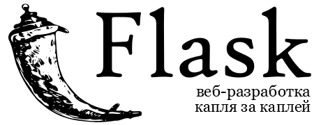

Оригинал этой страницы находится по адресу http://flask-russian-docs.readthedocs.io/
Краткое содержание: Попытка «человеческого» (не машинного, не кальки с английского) перевода документации к пакету Flask (язык программирования Python 2 и 3), выполненного с учётом синтаксиса русского языка. Приглашаю поучаствовать в переводе и в устранении ошибок и недостатков. Перевод выполняется как хобби в свободное время, с целью внесения посильного вклада в развитие и продвижение СПО. При распространении ссылка на первоисточник и указание авторства обязательны.
Состояние перевода: на 10.03.2018 выполнено 62%. В целях ликвидации многочисленных «висячих» ссылок добавлен раздел API на начальной стадии перевода. Исправлено большинство опечаток. Бэкпортированы некоторые мелкие исправления из свежих правок оригинальной документации. Подключены дополнительные модули для формирования межсайтовых ссылок.
Замечания и предложения можно оставить здесь: https://bitbucket.org/ferm32/flask-russian-docs/issues
либо отправить на почту ferm32 животное гмыло дот ком
либо оставлять через сервис Disqus комментарии (внизу страницы).
Существенная часть перевода к версии 0.9 выполнена Владимиром Ступиным
Добро пожаловать во Flask¶
Добро пожаловать в документацию по Flask. Она разбита на следующие части. Рекомендуем начать с раздела Инсталляция, затем заглянуть в Быстрый старт. Помимо раздела «Быстрый старт», есть и более детальное руководство - Учебник, по которому можно создать вместе с Flask хоть и небольшое, но полноценное приложение. Если вы хотите погрузиться во «внутренности» Flask, посмотрите документацию по API (перевод на начальной стадии). Общие шаблоны описаны в разделе Заготовки для Flask.
Flask требует наличия двух внешних библиотек: шаблонизатора Jinja2 и инструментария WSGI Werkzeug. Здесь данные библиотеки не рассматриваются. Если захотите углубиться в их документацию, воспользуйтесь следующими ссылками:
Руководство пользователя¶
Эта, в значительной мере скучная часть документации, начинается с некоторой вводной информации о Flask, а затем фокусируется на инструкциях по веб-разработке шаг-за-шагом с использованием Flask.
Предисловие¶
Перед началом работы с Flask начните отсюда. Надеемся, вы получите ответы на некоторые вопросы о задачах и назначении проекта, а также узнаете о том, когда вам следует, а когда не следует его использовать.
Что означает «микро»?¶
“Микро” не означает, что ваше веб-приложение целиком помещается в один файл с кодом на Python, хотя, конечно же это может быть и так. Также, это не означает, что Flask испытывает недостаток функциональности. «Микро» в слове «микрофреймворк» означает, что Flask стремится придерживаться простого, но расширяемого ядра. Flask не будет решать за вас многие вещи, например, какую базу данных использовать. А те решения, которые он может принять, например, который из движков для работы с шаблонами использовать, легко изменить. Всё остальное зависит от вас, таким образом, может оказаться, что Flask - всё, что вам нужно, и ничего лишнего.
По умолчанию, Flask не включает уровень абстракции баз данных, валидации форм или каких-то иных, для чего уже существуют различные занимающиеся этим библиотеки. Вместо этого, Flask поддерживает расширения для добавления подобной функциональности в ваше приложение, таким образом, как если бы это было реализовано в самом Flask. Многочисленные расширения обеспечивают интеграцию с базами данных, валидацию форм, обработку загрузок на сервер, различные открытые технологии аутентификации и так далее. Flask может быть «микро», но при этом он готов для использования в реальных задачах для самых разнообразных нужд.
Конфигурация и Соглашения¶
Flask имеет много параметров конфигурации с разумными значениями по умолчанию, и мало предварительных соглашений. По соглашению, шаблоны и статические файлы хранятся в поддиректориях внутри дерева исходных текстов на Python, с названиями templates и static соответственно. Хотя это можно и поменять, обычно этого делать не стоит, особенно в самом начале работы.
Расти вместе с Flask¶
Однажды, скачав и запустив Flask, вы найдёте в сообществе множество доступных его расширений, для их интеграции в ваш реально работающий проект. Команда разработки ядра Flask рассматривает расширения и гарантирует, что одобренные расширения не перестанут работать с будущими релизами.
Пока ваша кодовая база растёт, вы вольны принимать уместные для вашего проекта решения. Flak обеспечит простейший слой для склейки, выполненный настолько хорошо, насколько это позволяет сделать Python. Вы можете реализовать расширенные шаблоны в SQLAlchemy или в ином средстве для работы с БД, в необходимых случаях применить надёжные нереляционные базы данных и использовать преимущества изначально не предназначенных для работы с фреймворками средств, построенных для работы с WSGI - веб интерфейсом для языка Python.
Flask для настройки его поведения содержит множество крючков (хуков). Если вам нужны дополнительные настройки, класс Flask построен, чтобы быть готовым к созданию подклассов. Если это вас заинтересовало, проверьте раздел becomingbig. Если вам любопытны принципы, в соответствии с которым спроектирован Flask, посмотрите раздел Проектные решения во Flask.
Продолжение: Инсталляция, Быстрый старт, или Предисловие для опытных программистов.
Предисловие для опытных программистов¶
Внутрипоточные объекты (Thread-Locals) во Flask¶
Одним из проектных решений для Flask было то, что простые задачи должны быть простыми; они не должны требовать большого объёма кода, а ещё они не должны ограничивать вас. Поэтому, при создании Flask было выбрано несколько решений, которые некоторым людям могут показаться неожиданными или оригинальными. Например, внутри себя Flask использует внутрипоточные объекты, поэтому вам в запросе, чтобы сохранять потокобезопасность (thread-safe), необязательно передавать объекты от функции к функции. Такой подход удобен, но требует дейстивительный контекст запроса для внедрения зависимостей или при попытке повторного использования кода, который использует значение, привязанное к запросу. Flask к внутрипоточным переменным относится честно, не скрывает их и всегда явно указывает в коде и в документации, где бы они не использовались.
Разработка для Веб с осторожностью¶
При создании веб-приложений всегда думайте о безопасности.
Если вы пишете веб-приложение, вы, вероятно, позволяете пользователям регистрироваться и оставлять их данные на сервере. Пользователи доверяют вам свои данные. И даже если вы являетесь единственным пользователем, который может внести данные в приложение, всё равно вы хотите надёжно их сохранить.
К сожалению, существует множество способов, чтобы скомпрометировать защиту с точки зрения безопасности веб-приложения. Flask защищает вас от одной и наиболее распространённых проблем безопасности современных веб-приложений: от межсайтового скриптинга (cross-site scripting - XSS). Если только вы не пометите небезопасный HTML-код как безопасный, вас прикроет Flask и нижележащий шаблонизатор Jinja2. Но существует и множество других способов вызвать проблемы с безопасностью.
Документация предупредит вас о тех аспектах веб-разработки, которые требуют внимания к безопасности. Некоторые из этих соображений являются гораздо более сложными, чем можно было бы подумать, и иногда все мы недооцениваем вероятность того, что уязвимость будет использована - а в это время толковый злоумышленник вычисляет способы для взлома наших приложений. Н надейтесь, что ваше приложение не настолько важно, чтобы привлечь злоумышленника. При некоторых видах атаки есть вероятность, что автоматизированные боты зондируют различные способы заполнения вашей базы данных спамом, ссылками на вредоносные программы и т. п.
В том, что вы, как разработчик, в процессе разработки в соответствии с вашей постановкой задачи, должны действовать с осторожностью, и при этом следить за попытками взлома, Flask ничем не отличается от других фреймворков.
Статус Python 3¶
В настоящее время сообщество Python находится в процессе совершенствования библиотек для поддержки новой итерации языка программирования Python. Хотя ситуация и резко улучшается, есть ещё некоторые вопросы, из-за которых пользователям трудно переключиться на Python 3 прямо сейчас. Эти проблемы частично вызваны не прошедшими длительной опробации изменениями в языке, частично тем, что мы ещё не работали с низкоуровневыми изменениями уровня API, внесёнными Python 3 в работу с Unicode.
Мы настоятельно рекомендуем использовать Python 2.7 с активированными предупреждениями о несовместимостях с Python 3. Если в ближайшем будущем вы планируете обновиться до Python 3, мы настоятельно рекомендуем вам прочитать статью Как писать код, совместимый со следующими версиями Python.
Если вы уже созрели до работы с Python 3, посмотрите страницу python3-support.
Продолжение: Инсталляция или the Быстрый старт.
Инсталляция¶
Flask зависит от некоторых внешних библиотек - таких, как Werkzeug и Jinja2. Werkzeug - это инструментарий для WSGI - стандартного интерфейса Python между веб-приложениями и различными серверами, предназначен как для разработки, так и развёртывания. Jinja2 занимается отображением шаблонов.
Итак, как же быстро получить всё необходимое на ваш компьютер? Есть много способов, которыми вы это можете проделать, но самый обалденный - это virtualenv, так что давайте глянем в первую очередь на него.
Для начала вам понадобится Python 2.6 или новее, так что убедитесь, что у вас инсталлирован свежий Python 2.x. При использовании Flask с Python 3 загляните в раздел python3-support.
virtualenv¶
Возможно, Virtualenv - именно то, что вы захотите использовать при разработке, а если у вас на рабочем сервере есть доступ к командной оболочке, вероятно, вы захотите использовать Virtualenv и здесь.
Какую из проблем решает virtualenv? Если вам нравится Python так, как он нравится мне, скорее всего, вы захотите использовать его и в других проектах - вне приложений, созданных на базе Flask.
Но чем больше у вас проектов, тем больше вероятность, что вы будете работать с разными версиями самого Python, или, по крайней мере, с различными версиями библиотек Python. Посмотрим правде в глаза: довольно часто библиотеки нарушают обратную совместимость, и маловероятно, что серьёзное приложение будет работать вообще без каких-либо зависимостей. Так что же делать, если два или более из ваших проектов имеют конфликтующие зависимости?
Наше спасение - Virtualenv! Virtualenv предоставляет несколько соседствующих друг с другом установленных версий Python, по одной для каждого проекта. На самом деле он реально не устанавливает различные версии Python, но обеспечивает хитрый способ создать для проектов несколько изолированных друг от друга окружений. Давайте посмотрим, как работает virtualenv.
Если вы работаете с MacOS X или с Linux, есть вероятность, что заработает одна из следующих двух команд:
$ sudo easy_install virtualenv
или даже лучше:
$ sudo pip install virtualenv
Возможно, одна из этих команд установит virtualenv на вашей системе. А может быть, это позволит сделать ваш пакетный менеджер. Если вы используете Ubuntu, попробуйте:
$ sudo apt-get install python-virtualenv
Если у вас Windows и команда easy_install не работает, вам необходимо сначала установить её. Чтобы получить дополнительную информацию о том, как это можно сделать, проверьте раздел pip и setuptools в MS Windows. Установив данную команду, запустите её, как указано чуть выше, но без префикса sudo.
После того, как virtualenv была установлена, просто запустите командный интерпретатор и создайте ваше собственное окружение. Обычно в таких случаях я создаю папку проекта, а в ней - папку venv:
$ mkdir myproject
$ cd myproject
$ virtualenv venv
New python executable in venv/bin/python
Installing setuptools, pip............done.
Теперь, когда вы захотите работать над проектом, вам необходимо лишь активировать соответствующее окружение. Под MacOS X и Linux, выполните следующее:
$ . venv/bin/activate
Если вы используете Windows, для вас подойдёт следующая команда:
$ venv\scripts\activate
В любом случае, теперь вы должны использовать ваш virtualenv (обратите внимание, как изменилось приглашение вашей командной оболочки - для того, чтобы показать активное окружение).
А если вы захотите вернуться обратно в «реальный мир», используйте команду:
$ deactivate
Полсе этого подсказка вашей командной оболочки вернёт свой прежний привычный вид.
Теперь, двинемся дальше. Для того, чтобы Flask появился в вашем виртуальном окружении, введите команду:
$ pip install Flask
Через несколько секунд вы сможете двинуться в дальнейший путь.
Установка непосредственно в систему¶
Возможен и такой вариант установки, но я бы вам его не рекомендовал. Просто запустите pip с привилегиями суперпользователя:
$ sudo pip install Flask
(Под Windows, запустите ту же команду, но только без sudo, внутри окна с командной строкой, запущенного с привилегиями администратора системы)
Жизнь на переднем краю¶
Если вы хотите работать с самой последней версией Flask, существует два пути: можно указать pip, чтобы он загрузил версию для разработки, или можно работать со срезом с текущего состояния репозитория git. В обоих случаях, рекомендуется пользоваться virtualenv.
Получите срез с последнего состояния git в новом окружении virtualenv и запустите в режиме разработки:
$ git clone http://github.com/mitsuhiko/flask.git
Initialized empty Git repository in ~/dev/flask/.git/
$ cd flask
$ virtualenv venv
New python executable in venv/bin/python
Installing setuptools, pip............done.
$ . venv/bin/activate
$ python setup.py develop
...
Finished processing dependencies for Flask
Будет скачана и активирована в virtualenv текущая версия, соответствующая
последнему (головному) срезу из git. В дальнейшем, чтобы обновиться до
последней версии, всё, что вам будет необходимо сделать - это выполнить
git pull origin.
pip и setuptools в MS Windows¶
Иногда получение стандартных инструментов по работе с пакетами в Python - таких, как pip, setuptools и virtualenv может быть несколько мудрёным, но на самом деле в этом нет ничего сложного. Вам нужны два ключевых пакета - setuptools и pip - которые позволят вам инсталлировать всё остальное (в том числе virtualenv). К счастью, есть два готовых скрипта, запустив которые вы можете развернуть оба пакета «с нуля».
Если у вас их нет, скрипт get-pip.py осуществит инсталляцию обоих (вам не нужно будет запускать ez_setup.py).
Для инсталляции последней версии setuptools, вы можете использовать следующий скрипт, предназначенный для разворачивания «с нуля»:
Оба этих скрипта необходимо скачать и запустить двойным щелчком мыши. Если у вас уже есть pip, вы можете обновить его, запустив команду:
> pip install --upgrade pip setuptools
Чаще всего, получив приглашение командной строки, вы захотите иметь возможность
набрать pip и python, что должно привести к запуску этих команд, однако
в Windows этого автоматически не происходит, потому что операционная система не
знает, где располагаются их исполнимые файлы (вы можете попробовать!).
Чтобы исправить это, вам необходимо перейти в папку, куда вы установили Python
(например, C:\Python27), а затем в подпапки Tools, Scripts; затем
найти файл win_add2path.py и запустить его. Далее открыть новую
Командную строку и проверить, что при вводе python запускается командный
интерпретатор.
Наконец, для того, чтобы инсталлировать virtualenv, вы можете просто ввести:
> pip install virtualenv
Теперь, когда вы установили всё, что нужно, выполнив вышеизложенные инструкции, можно откинуться на спинку кресла.
Быстрый старт¶
Рвётесь в бой? Эта страница даёт хорошее введение в Flask. Предполагается, что вы уже имеете установленный Flask. Если это не так, обратитесь к секции Инсталляция.
Минимальное приложение¶
Минимальное приложение Flask выглядит примерно так:
from flask import Flask
app = Flask(__name__)
@app.route('/')
def hello_world():
return 'Hello World!'
if __name__ == '__main__':
app.run()
Просто сохраните его под именем наподобие hello.py и запустите с помощью вашего интерпретатора Python. Только, пожалуйста, не давайте приложению имя flask.py, так как это вызовет конфликт с самим Flask.
$ python hello.py
* Running on http://127.0.0.1:5000/
Проследовав по ссылке http://127.0.0.1:5000/ вы увидите ваше приветствие миру.
Итак, что же делает этот код?
- Сначала мы импортировали класс
Flask. Экземпляр этого класса и будет вашим WSGI-приложением. - Далее мы создаём экземпляр этого класса. Первый аргумент - это имя модуля
или пакета приложения. Если вы используете единственный модуль (как в
этом примере), вам следует использовать __name__, потому что в
зависимости от того, запущен ли код как приложение, или был импортирован
как модуль, это имя будет разным (
'__main__'или актуальное имя импортированного модуля соответственно). Это нужно, чтобы Flask знал, где искать шаблоны, статические файлы и прочее. Для дополнительной информации, смотрите документациюFlask. - Далее, мы используем декоратор
route(), чтобы сказать Flask, какой из URL должен запускать нашу функцию. - Функция, которой дано имя, используемое также для генерации URL-адресов для этой конкретной функции, возвращает сообщение, которое мы хотим отобразить в браузере пользователя.
- Наконец, для запуска локального сервера с нашим приложением, мы используем
функцию
run(). Благодаря конструкцииif __name__ == '__main__'можно быть уверенным, что сервер запустится только при непосредственном вызове скрипта из интерпретатора Python, а не при его импортировании в качестве модуля.
Для остановки сервера, нажмите Ctrl+C.
Публично доступный сервер
Если вы запустите сервер, вы заметите, что он доступен только с вашего собственного компьютера, а не с какого-либо другого в сети. Так сделано по умолчанию, потому что в режиме отладки пользователь приложения может выполнить код на Python на вашем компьютере.
Если у вас отключена опция debug или вы доверяете пользователям в сети,
вы можете сделать сервер публично доступным, просто изменив вызов метода
run() таким вот образом:
app.run(host='0.0.0.0')
Это укажет вашей операционной системе, чтобы она слушала сеть со всех публичных IP-адресов.
Режим отладки¶
Метод run() чудесно подходит для запуска локального
сервера для разработки, но вы будете должны перезапускать его всякий раз
при изменении вашего кода. Это не очень здорово, и Flask здесь может
облегчить жизнь. Если вы включаете поддержку отладки, сервер перезагрузит
сам себя при изменении кода, кроме того, если что-то пойдёт не так, это
обеспечит вас полезным отладчиком.
Существует два способа включить отладку. Или установите флаг в объекте приложения:
app.debug = True
app.run()
Или передайте его как параметр при запуске:
app.run(debug=True)
Оба метода вызовут одинаковый эффект.
Внимание.
Несмотря на то, что интерактивный отладчик не работает в многопоточных окружениях (что делает его практически неспособным к использованию на реальных рабочих серверах), тем не менее, он позволяет выполнение произвольного кода. Это делает его главной угрозой безопасности, и поэтому он никогда не должен использоваться на реальных «боевых» серверах.
Снимок экрана с отладчиком в действии:

Предполагаете использовать другой отладчик? Тогда смотрите Работа с отладчиками.
Маршрутизация¶
Современные веб-приложения используют «красивые» URL. Это помогает людям запомнить эти URL, это особенно удобно для приложений, используемых с мобильных устройств с более медленным сетевым соединением. Если пользователь может перейти сразу на желаемую страницу, без предварительного посещения начальной страницы, он с большей вероятностью вернётся на эту страницу и в следующий раз.
Как вы увидели ранее, декоратор route() используется для
привязки функции к URL. Вот простейшие примеры:
@app.route('/')
def index():
return 'Index Page'
@app.route('/hello')
def hello():
return 'Hello World'
Но это еще не все! Вы можете сделать определенные части URL динамически меняющимися и задействовать в функции несколько правил.
Правила для переменной части¶
Чтобы добавлять к адресу URL переменные части, можно эти особые части
выделить как <variable_name>. Затем подобные части передаются в вашу
функцию в качестве аргумента - в виде ключевого слова. Также может быть
использован конвертер - с помощью задания правила следующего вида
<converter:variable_name>. Вот несколько интересных примеров
@app.route('/user/<username>')
def show_user_profile(username):
# показать профиль данного пользователя
return 'User %s' % username
@app.route('/post/<int:post_id>')
def show_post(post_id):
# вывести сообщение с данным id, id - целое число
return 'Post %d' % post_id
Существуют следующие конвертеры:
| int | принимаются целочисленные значения |
| float | как и int, только значения с плавающей точкой |
| path | подобно поведению по умолчанию, но допускаются слэши |
Уникальные URL / Перенаправления
Правила для URL, работающие в Flask, основаны на модуле маршрутизации Werkzeug. Этот модуль реализован в соответствие с идеей обеспечения красивых и уникальных URL-адресов на основе исторически попавшего в обиход - из поведения Apache и более ранних HTTP серверов.
Возьмём два правила:
@app.route('/projects/')
def projects():
return 'The project page'
@app.route('/about')
def about():
return 'The about page'
Хоть они и выглядят довольно похожими, есть разница в использовании слэша в определении URL. В первом случае, канонический URL имеет завершающую часть projects со слэшем в конце. В этом смысле он похож на папку в файловой системе. В данном случае, при доступе к URL без слэша, Flask перенаправит к каноническому URL с завершающим слэшем.
Однако, во втором случае, URL определен без косой черты - как путь к файлу на UNIX-подобных системах. Доступ к URL с завершающей косой чертой будет приводить к появлению ошибки 404 «Not Found».
Такое поведение позволяет продолжить работать с относительными URL, даже если в конце строки URL пропущен слэш - в соответствии с тем, как работают Apache и другие сервера. Кроме того, URL-адреса останутся уникальными, что поможет поисковым системам избежать повторной переиндексации страницы.
Построение (генерация) URL¶
Раз Flask может искать соответствия в URL, может ли он их генерировать?
Конечно, да. Для построения URL для специфической функции, вы можете
использовать функцию url_for(). В качестве первого аргумента
она принимает имя функции, кроме того она принимает ряд именованных
аргументов, каждый из которых соответствует переменной части правила для
URL. Неизвестные переменные части добавляются к URL в качестве параметров
запроса. Вот некоторые примеры:
>>> from flask import Flask, url_for
>>> app = Flask(__name__)
>>> @app.route('/')
... def index(): pass
...
>>> @app.route('/login')
... def login(): pass
...
>>> @app.route('/user/<username>')
... def profile(username): pass
...
>>> with app.test_request_context():
... print url_for('index')
... print url_for('login')
... print url_for('login', next='/')
... print url_for('profile', username='John Doe')
...
/
/login
/login?next=/
/user/John%20Doe
(Здесь также использован метод test_request_context(),
который будет объяснён ниже. Он просит Flask вести себя так, как будто
он обрабатывает запрос, даже если мы взаимодействуем с ним через оболочку
Python. Взгляните на нижеследующее объяснение. Локальные объекты контекста (context locals).
Зачем Вам может потребоваться формировать URL-ы с помощью функции их обращения
url_for() вместо того, чтобы жёстко задать их в ваших шаблонах?
Для этого есть три веские причины:
1. По сравнению с жёстким заданием URL внутри кода обратный порядок часто
является более наглядным. Более того, он позволяет менять URL за один
шаг, и забыть про необходимость изменять URL повсюду.
2. Построение URL будет прозрачно для вас осуществлять экранирование
специальных символов и данных Unicode, так что вам не придётся отдельно
иметь с ними дела.
3. Если ваше приложение размещено не в корневой папке URL root (а, скажем,
в /myapplication вместо /), данную ситуацию нужным для вас образом
обработает функция url_for().
Методы HTTP¶
HTTP (протокол, на котором общаются веб-приложения) может использовать
различные методы для доступа к URL-адресам. По умолчанию, route
отвечает лишь на запросы типа GET, но это можно изменить, снабдив
декоратор route() аргументом methods. Вот
некоторые примеры:
from flask import request
@app.route('/login', methods=['GET', 'POST'])
def login():
if request.method == 'POST':
do_the_login()
else:
show_the_login_form()
Если присутствует метод GET, то автоматически будет добавлен и HEAD. Вам не придётся иметь с ним дело. Также, при этом можно быть уверенным, что запросы HEAD будут обработаны в соответствии с требованиями HTTP RFC (документ с описанием протокола HTTP), так что вам не требуется ничего знать об этой части спецификации HTTP. Кроме того, начиная с Flask версии 0.6, для вас будет автоматически реализован метод OPTIONS автоматически.
Не имеете понятия, что такое метод HTTP? Не беспокойтесь, здесь приводится быстрое введение в методы HTTP, и почему они важны:
HTTP-метод (также часто называемый командой) сообщает серверу, что хочет сделать клиент с запрашиваемой страницей. Очень распространены Следующие методы:
- GET
- Браузер говорит серверу, чтобы он просто получил информацию, хранимую на этой странице, и отослал её. Возможно, это самый распространённый метод.
- HEAD
- Браузер просит сервер получить информацию, но его интересует только заголовки, а не содержимое страницы. Приложение предполагает обработать их так же, как если бы был получен запрос GET, но без доставки фактического содержимого. В Flask, вам вовсе не требуется иметь дело с этим методом, так как нижележащая библиотека Werkzeug сделает всё за вас.
- POST
- Браузер говорит серверу, что он хочет сообщить этому URL некоторую новую информацию, и что сервер должен убедиться, что данные сохранены и сохранены в единожды. Обычно, аналогичным образом происходит передача из HTML форм на сервер данных.
- PUT
- Похоже на POST, только сервер может вызвать процедуру сохранения несколько раз, перезаписывая старые значения более одного раза. Здесь вы можете спросить, зачем это нужно, и есть несколько веских причин, чтобы делать это подобным образом. Предположим, во время передачи произошла потеря соединения: в этой ситуации система между браузером и сервером, ничего не нарушая, может совершенно спокойно получить запрос во второй раз. С POST такое было бы невозможно, потому что он может быть вызван только один раз.
- DELETE
- Удалить информацию, расположенную в указанном месте.
- OPTIONS
- Обеспечивает быстрый способ выяснения клиентом поддерживаемых для данного URL методов. Начиная с Flask 0.6, это работает для вас автоматически.
Теперь самое интересное: в HTML 4 и XHTML1, единственными методами, которыми форма может отправить серверу данные, являются GET и POST. Но для JavaScript и будущих стандартов HTML вы также можете использовать и другие методы. Кроме того, в последнее время HTTP стал довольно популярным, и теперь браузеры уже не единственные клиенты, использующие HTTP. Например, его используют многие системы контроля версий.
Статические файлы¶
Динамические веб-приложения также нуждаются и в статических файлах. Обычно, именно из них берутся файлы CSS и JavaScript. В идеале ваш веб-сервер уже сконфигурирован так, чтобы обслуживать их для вас, однако в ходе разработке это также может делать и сам Flask. Просто создайте внутри вашего пакета или модуля папку с названием static, и она будет доступна из приложения как /static.
Чтобы сформировать для статических файлов URL, используйте специальное
окончание 'static':
url_for('static', filename='style.css')
Этот файл должен храниться в файловой системе как static/style.css.
Визуализация шаблонов¶
Генерация HTML из Python - невесёлое и на самом деле довольно сложное занятие, так как вам необходимо самостоятельно заботиться о безопасности приложения, производя для HTML обработку специальных последовательностей (escaping). Поэтому внутри Flask уже автоматически преднастроен шаблонизатор Jinja2.
Для визуализации шаблона вы можете использовать метод
render_template(). Всё, что вам необходимо - это указать
имя шаблона, а также переменные в виде именованных аргументов, которые
вы хотите передать движку обработки шаблонов:
from flask import render_template
@app.route('/hello/')
@app.route('/hello/<name>')
def hello(name=None):
return render_template('hello.html', name=name)
Flask будет искать шаблоны в папке templates. Поэтому, если ваше приложение выполнено в виде модуля, эта папка будет рядом с модулем, а если в виде пакета, она будет внутри вашего пакета:
Первый случай - модуль:
/application.py
/templates
/hello.html
Второй случай - пакет:
/application
/__init__.py
/templates
/hello.html
При работе с шаблонами вы можете использовать всю мощь Jinja2. За дополнительной информацией обратитесь к официальной Документации по шаблонам Jinja2
Вот пример шаблона:
<!doctype html>
<title>Hello from Flask</title>
{% if name %}
<h1>Hello {{ name }}!</h1>
{% else %}
<h1>Hello World!</h1>
{% endif %}
Также, внутри шаблонов вы имеете доступ к объектам
request, session и
g [1], а также к функции
get_flashed_messages().
Шаблоны особенно полезны при использовании наследования. Если вам интересно, как это работает, обратитесь к документации по заготовкам Template Inheritance. Проще говоря, наследование шаблонов позволяет разместить определённые элементы (такие, как заголовки, элементы навигации и «подвал» страницы) на каждой странице.
Автоматическая обработка специальных (escape-) последовательностей
(escaping) включена по умолчанию, поэтому если name содержит HTML, он
будет экранирован автоматически. Если вы можете доверять переменной и
знаете, что в ней будет безопасный HTML (например, потому что он пришёл
из модуля конвертирования разметки wiki в HTML), вы можете пометить её
в шаблоне, как безопасную - с использованием класса
Markup или фильтра |safe. За дополнительными
примерами обратитесь к документации по Jinja2.
Вот основные возможности по работе с классом Markup:
>>> from flask import Markup
>>> Markup('<strong>Hello %s!</strong>') % '<blink>hacker</blink>'
Markup(u'<strong>Hello <blink>hacker</blink>!</strong>')
>>> Markup.escape('<blink>hacker</blink>')
Markup(u'<blink>hacker</blink>')
>>> Markup('<em>Marked up</em> » HTML').striptags()
u'Marked up \xbb HTML'
Изменено в версии 0.5: Автоматическая обработка escape-последовательностей больше не
активирована для всех шаблонов. Вот расширения шаблонов, которые
активизируют автообработку: .html, .htm, .xml, .xhtml.
Шаблоны, загруженные из строк, не будут обрабатывать специальные
последовательности.
| [1] | Затрудняетесь понять, что это за объект - g? Это то,
в чём вы можете хранить информацию для ваших собственных нужд, для
дополнительной информации смотрите документацию на этот объект
(g) и sqlite3. |
Доступ к данным запроса¶
Для веб-приложений важно, чтобы они реагировали на данные, которые
клиент отправляет серверу. В Flask эта информация предоставляется
глобальным объектом request. Если у вас есть некоторый
опыт по работе с Python, вас может удивить, как этот объект может быть
глобальным, и как Flask при этом умудрился остаться ориентированным
на многопоточное выполнение.
Локальные объекты контекста (context locals)¶
Информация от инсайдера
Прочтите этот раздел, если вы хотите понять, как это работает, и как вы можете реализовать тесты с локальными переменными контекста. Если вам это неважно, просто пропустите его.
Некоторые объекты в Flask являются глобальными, но необычного типа. Эти объекты фактически являются прокси (посредниками) к объектам, локальным для конкретного контекста. Труднопроизносимо. Но на самом деле довольно легко понять.
Представьте себе контекст, обрабатывающий поток. Приходит запрос, и веб-сервер решает породить новый поток (или нечто иное - базовый объект может иметь дело с системой параллельного выполнения не на базе потоков). Когда Flask начинает осуществлять свою внутреннюю обработку запроса, он выясняет, что текущий поток является активным контекстом и связывает текущее приложение и окружение WSGI с этим контекстом (потоком). Он делает это с умом - так, что одно приложение может, не ломаясь, вызывать другое приложение.
Итак, что это означает для вас? В принципе, вы можете полностью
игнорировать, что это так, если вы не делаете чего-либо вроде тестирования
модулей. Вы заметите, что код, зависящий от объекта запроса, неожиданно
будет работать неправильно, так как отсутствует объект запроса. Решением
является самостоятельное создание объекта запроса и его привязка к
контексту. Простейшим решением для тестирования модулей является
использование менеджера контекстов
test_request_context(). В сочетании с оператором with
этот менеджер свяжет тестовый запрос так, что вы сможете с ним
взаимодействовать. Вот пример:
from flask import request
with app.test_request_context('/hello', method='POST'):
# теперь, и до конца блока with, вы можете что-либо делать
# с контекстом, например, вызывать простые assert-ы:
assert request.path == '/hello'
assert request.method == 'POST'
Другая возможность - это передача целого окружения WSGI методу
request_context() method:
from flask import request
with app.request_context(environ):
assert request.method == 'POST'
Объект запроса¶
Объект запроса документирован в секции API, мы не будем рассматривать его
здесь подробно (смотри request). Вот широкий взгляд
на некоторые наиболее распространённые операции. Прежде всего, вам
необходимо импортировать его из модуля flask:
from flask import request
В настоящее время метод запроса доступен через использование атрибута
method. Для доступа к данным формы (данным, которые
передаются в запросах типа POST или PUT), вы можете использовать
атрибут form. Вот полноценный пример работы с
двумя упомянутыми выше атрибутами:
@app.route('/login', methods=['POST', 'GET'])
def login():
error = None
if request.method == 'POST':
if valid_login(request.form['username'],
request.form['password']):
return log_the_user_in(request.form['username'])
else:
error = 'Invalid username/password'
# следущий код выполняется при методе запроса GET
# или при признании полномочий недействительными
return render_template('login.html', error=error)
Что произойдёт, если ключ, указанный в атрибуте form, не существует?
В этом случае будет возбуждена специальная ошибка KeyError. Вы
можете перехватить её подобно стандартной KeyError, но если вы этого
не сделаете, вместо этого будет показана страница с ошибкой HTTP 400 Bad
Request. Так что во многих ситуациях вам не придётся иметь дело с этой
проблемой.
Для доступа к параметрам, представленным в URL (?ключ=значение), вы
можете использовать атрибут args:
searchword = request.args.get('key', '')
Мы рекомендуем доступ к параметрам внутри URL через get или через перехват KeyError, так как пользователь может изменить URL, а предъявление ему страницы с ошибкой 400 bad request не является дружественным.
За полным списком методов и атрибутов объекта запроса, обратитесь к
следующей документации: request.
Загрузка файлов на сервер¶
В Flask обработка загружаемых на сервер файлов является несложным занятием.
Просто убедитесь, что вы в вашей HTML-форме не забыли установить атрибут
enctype="multipart/form-data", в противном случае браузер вообще
не передаст файл.
Загруженные на сервер файлы сохраняются в памяти или во временной папке
внутри файловой системы. Вы можете получить к ним доступ, через атрибут
объекта запроса files. Каждый загруженный файл
сохраняется в этом словаре. Он ведёт себя так же, как стандартный
объект Python file, однако он также имеет метод
save(), который вам позволяет
сохранить данный файл внутрь файловой системы сервера. Вот простой пример,
показывающий, как это работает:
from flask import request
@app.route('/upload', methods=['GET', 'POST'])
def upload_file():
if request.method == 'POST':
f = request.files['the_file']
f.save('/var/www/uploads/uploaded_file.txt')
...
Если вы хотите до загрузки файла в приложение узнать, как он назван
на стороне клиента, вы можете просмотреть атрибут
filename. Однако, имейте в
виду, что данному значению никогда не стоит доверять, потому что оно может
быть подделано. Если вы хотите использовать имя файла на клиентской стороне
для сохранения файла на сервере, пропустите его через функцию
secure_filename(), которой вас снабдил Werkzeug:
from flask import request
from werkzeug import secure_filename
@app.route('/upload', methods=['GET', 'POST'])
def upload_file():
if request.method == 'POST':
f = request.files['the_file']
f.save('/var/www/uploads/' + secure_filename(f.filename))
...
Некоторые более удачные примеры можно найти в разделе заготовок: Загрузка файлов.
Cookies¶
Для доступа к cookies можно использовать атрибут
cookies. Для установки cookies можно использовать
метод объектов ответа set_cookie. Атрибут
объектов запроса cookies - это словарь со всеми
cookies, которые передаёт клиент. Если вы хотите использовать сессии,
то не используйте cookies напрямую, вместо этого используйте во Flask
Сессии, который при работе с cookies даст вам некоторую
дополнительную безопасность.
Чтение cookies:
from flask import request
@app.route('/')
def index():
username = request.cookies.get('username')
# Чтобы не получить в случае отсутствия cookie ошибку KeyError
# используйте cookies.get(key) вместо cookies[key]
Сохранение cookies:
from flask import make_response
@app.route('/')
def index():
resp = make_response(render_template(...))
resp.set_cookie('username', 'the username')
return resp
Заметьте, что cookies устанавливаются в объектах ответа. Так как
вы обычно просто возвращаете строки из функций представления, Flask
конвертирует их для вас в объекты ответа. Если вы это хотите
сделать явно, то можете использовать функцию,
make_response(), затем изменив её.
Иногда вы можете захотеть установить cookie в точке, где объект ответа ещё не существует. Это можно сделать, используя заготовку deferred-callbacks.
Также об этом можно почитать здесь: Об ответах.
Ошибки и перенаправления¶
Чтобы перенаправить пользователя в иную конечную точку, используйте
функцию redirect(); для того, чтобы преждевременно прервать
запрос с кодом ошибки, используйте функцию abort() function:
from flask import abort, redirect, url_for
@app.route('/')
def index():
return redirect(url_for('login'))
@app.route('/login')
def login():
abort(401)
this_is_never_executed()
Это довольно бессмысленный пример, потому что пользователь будет
перенаправлен с индексной страницы на страницу, на которую у него нет
доступа (401 означает отказ в доступе), однако он показывает, как это
работает.
По умолчанию, для каждого кода ошибки отображается чёрно-белая страница
с ошибкой. Если вы хотите видоизменить страницу с ошибкой, то можете
использовать декоратор errorhandler():
from flask import render_template
@app.errorhandler(404)
def page_not_found(error):
return render_template('page_not_found.html'), 404
Обратите внимание на 404 после вызова render_template().
Это сообщит Flask, что код статуса для этой страницы должен быть 404,
что означает «не найдено». По умолчанию предполагается код «200»,
который означает «всё прошло хорошо».
Об ответах¶
Возвращаемое из функции представления значение автоматически
для вас конвертируется вас в объект ответа. Если возвращаемое
значение является строкой, оно конвертируется в объект ответа
в строку в виде тела ответа, код статуса 200 OK и в mimetype
со значением text/html. Логика, которую применяет Flask
для конвертации возвращаемых значений в объекты ответа следующая:
- Если возвращается объект ответа корректного типа, он прямо возвращается из представления.
- Если это строка, создаётся объект ответа с этими же данными и параметрами по умолчанию.
- Если возвращается кортеж, его элементы могут предоставлять
дополнительную информацию. Такие кортежи должны соответствовать
форме
(ответ, статус, заголовки), кортеж должен содержать хотя бы один из перечисленных элементов. Значение статус заменит код статуса, а элемент заголовки может быть или списком или словарём с дополнительными значениями заголовка. - Если ничего из перечисленного не совпало, Flask предполагает, что возвращаемое значение - это допустимая WSGI-заявка, и конвертирует его в объект ответа.
Если вы хотите в результате ответа заполучить объект внутри
представления, то можете использовать функцию make_response().
Представим, что вы имеете подобное представление:
@app.errorhandler(404)
def not_found(error):
return render_template('error.html'), 404
Вам надо всего лишь обернуть возвращаемое выражение функцией
make_response() и получить объект ответа для
его модификации, а затем вернуть его:
@app.errorhandler(404)
def not_found(error):
resp = make_response(render_template('error.html'), 404)
resp.headers['X-Something'] = 'A value'
return resp
Сессии¶
В дополнение к объекту ответа есть ещё один объект, называемый
session, который позволяет вам сохранять от одного запроса
к другому информацию, специфичную для пользователя. Это реализовано для
вас поверх cookies, при этом используется криптографическая подпись этих
cookie. Это означает, что пользователь может посмотреть на содержимое
cookie, но не может ничего в ней изменить, если он конечно не знает
значение секретного ключа, использованного для создания подписи.
В случае использования сессий вам необходимо установить значение этого секретного ключа. Вот как работают сессии:
from flask import Flask, session, redirect, url_for, escape, request
app = Flask(__name__)
@app.route('/')
def index():
if 'username' in session:
return 'Logged in as %s' % escape(session['username'])
return 'You are not logged in'
@app.route('/login', methods=['GET', 'POST'])
def login():
if request.method == 'POST':
session['username'] = request.form['username']
return redirect(url_for('index'))
return '''
<form action="" method="post">
<p><input type=text name=username>
<p><input type=submit value=Login>
</form>
'''
@app.route('/logout')
def logout():
# удалить из сессии имя пользователя, если оно там есть
session.pop('username', None)
return redirect(url_for('index'))
# set the secret key. keep this really secret:
app.secret_key = 'A0Zr98j/3yX R~XHH!jmN]LWX/,?RT'
Упомянутая escape() осуществляет для вас обработку
специальных последовательностей (escaping), что необходимо, если
вы не используете движок шаблонов (как в этом примере).
Как генерировать хорошие секретные ключи
Проблемой случайных значений является то, что трудно сказать, что действительно является является случайным. А секретный ключ должен быть настолько случайным, насколько это возможно. У вашей операционной системы есть способы для генерации достаточно случайных значений на базе криптографического случайного генератора, который может быть использован для получения таких ключей:
>>> import os
>>> os.urandom(24)
'\xfd{H\xe5<\x95\xf9\xe3\x96.5\xd1\x01O<!\xd5\xa2\xa0\x9fR"\xa1\xa8'
Просто возьмите, скопируйте/вставьте это в ваш код, вот и готово.
Замечание о сессиях на базе cookie: Flask возьмёт значения, которые вы помещаете в объект сессии, и сериализует их в cookie. Если вы обнаружили какие-либо значения, которые не сохраняются между запросами, а cookies реально включены, а никаких ясных сообщений об ошибках не было, проверьте размер cookie в ответах вашей страницы и сравните с размером, поддерживаемым веб-браузером.
Message Flashing¶
Хорошие приложения и интерфейсы пользователя дают обратную связь. Если пользователь не получает достаточной обратной связи, вскоре он может начать ненавидеть приложение. При помощи системы всплывающих сообщений Flask предоставляет пользователю по-настоящему простой способ обратной связи. Система всплывающих сообщений обычно делает возможным записать сообщение в конце запроса и получить к нему доступ во время обработки следующего и только следующего запроса. Обычно эти сообщения используются в шаблонах макетов страниц, которые его и отображают.
Чтобы вызвать всплывающие сообщения, используйте метод flash(),
чтобы заполучить сообщения, можно использовать метод, также доступный для
шаблонов - get_flashed_messages(). Полный
пример приведён в разделе Всплывающие сообщения.
Ведение журналов¶
Добавлено в версии 0.3.
Иногда может возникнуть ситуация, в которой вы имеете дело с данными,
которые должны быть корректными, но в действительности это не так.
К примеру, у вас может быть некий код клиентской стороны, который
посылает HTTP-запрос к серверу, однако он очевидным образом неверен.
Это может произойти из-за манипуляции пользователя с данными, или
из-за неудачной работы клиентского кода. В большинстве случаев
ответом, адекватным ситуации будет 400 Bad Request, но иногда,
когда надо, чтобы код продолжал работать, это не годится.
Вы по-прежнему хотите иметь журнал того, что пошло не так. Вот где могут пригодиться объекты создания журнала logger. Начиная с Flask 0.3, инструмент для журналирования уже настроен для использования.
Вот некоторые примеры вызовов функции журналирования:
app.logger.debug('Значение для отладки')
app.logger.warning('Предупреждение: (%d яблок)', 42)
app.logger.error('Ошибка')
Прилагаемый logger это стандартный класс
журналирования Logger, так что за подробностями
вы можете обратиться к официальной документации по журналированию.
Как зацепиться (hooking) к промежуточному слою WSGI¶
Если вы хотите добавить в ваше приложение слой промежуточного, или связующего для WSGI программного обеспечения (middleware), вы можете обернуть внутреннее WSGI-приложение. К примеру, если вы хотите использовать одно из middleware из пакета Werkzeug для обхода известных багов в lighttpd, вы можете сделать это подобным образом:
from werkzeug.contrib.fixers import LighttpdCGIRootFix
app.wsgi_app = LighttpdCGIRootFix(app.wsgi_app)
Развёртывание приложения на веб-сервере¶
Готовы к развёртыванию на сервере вашего нового приложения Flask? В завершение краткого руководства, вы можете немедленно развернуть приложение на одной из платформ хостинга, предоставляющих бесплатное размещение для малых проектов:
- Развёртывание приложения Flask на Heroku
- Развёртывание WSGI в dotCloud с специфическими для Flask замечаниями
Другие места, где можно разместить ваше приложение:
- Развёртывание приложения Flask на Webfaction
- Развёртывание приложения Flask в Google App Engine
- Общий доступ к локальному хосту с помощью Localtunnel
Если вы управляете собственными хостами и желаете разместиться у себя, смотрите раздел Варианты развёртывания.
Учебник¶
Хотите разработать приложение на Python под Flask? Здесь вам даётся такой шанс - изучить как это делается на примере. В этом учебнике мы создадим простое приложение микроблога. Оно будет поддерживать одного пользователя, который сможет создавать чисто текстовые записи, без возможности подписки или комментирования, однако в ней будет всё, что необходимо для того, чтобы начать работу. Мы будем использовать Flask и SQLite в качестве базы данных, которая идёт в комплекте с Python, поэтому вам больше ничего не понадобится.
Если вам нужны все исходные тексты, чтобы не вводить их вручную либо для сравнения, посмотрите их здесь исходные тексты примеров.
Введение в Flaskr¶
Здесь мы будем называть наше приложение для блога flaskr, а вы можете свободно выбрать менее оригинальное имя (прим. переводчика: очевидно, имеется ввиду шутливая аллюзия на название известного web-2.0 ресурса Flickr.com). ;) Вот те основные возможности, которые хотелось бы получить от данного приложения:
- вход и выход пользователя с учётными данными, заданными в конфигурации. Требуется поддержка одного пользователя.
- если пользователь вошёл, он может добавлять на страницу новые записи, состоящие из чисто текстовых заголовков и некоторого HTML кода для самого текста. Мы полностью доверяем пользователю, поэтому этот HTML проверять не требуется.
- на странице отображаются все записи до самой последней, в обратном порядке (свежие наверху), и пользователь после входа может добавлять новые прямо с этой же страницы.
Мы будем использовать для этого приложения прямые обращения к SQLite3, так как это хорошо подходит для приложения подобного размера. Однако, для более крупных приложений, имеет большой смысл использовать SQLAlchemy, которая более разумным способом обрабатывает соединения с базой данных, что позволяет вам использовать одновременно различные целевые реляционные базы данных, а также многое другое. Также вы можете подумать над использованием одной из популярных не-SQL баз данных, если она лучше подходит для ваших данных.
Вот снимок экрана конечного варианта приложения:

Продолжение: Шаг 0: Создание папок.
Шаг 0: Создание папок¶
Перед тем, как мы начнём, давайте создадим папки, необходимые для нашего приложения:
/flaskr
/static
/templates
Папка flaskr не является пакетом Python, это просто некое место, куда мы будем класть наши файлы. Далее, в эту папку, в добавок к главному модулю, мы поместим схему нашей базы данных. Это будет сделано следующим образом. Файлы внутри папки static доступны пользователям приложения по протоколу HTTP. Это место, куда попадут файлы css и javascript. В папке templates Flask будет искать шаблоны Jinja2. В эту папку будут помещены шаблоны, которые вы будете создавать в ходе работы с этим руководством.
Продолжение: Шаг 1: Схема базы данных.
Шаг 1: Схема базы данных¶
Сперва мы хотим создать схему базы данных. Это действие выполняется очень просто, так как этому приложению нужна одна единственная таблица, и мы желаем поддерживать только SQLite. Просто поместите следующий текст в файл с именем schema.sql в только что созданной папке flaskr:
drop table if exists entries;
create table entries (
id integer primary key autoincrement,
title text not null,
text text not null
);
Эта схема состоит из единственной таблице с названием entries, и каждая запись в ней содержит поля id, title и text. id это автоинкрементируемое целое, которое одновременно является первичным ключом, а два других поля - это строки, которые не могут быть пустыми.
Продолжение: Шаг 2: Код для настройки приложения.
Шаг 2: Код для настройки приложения¶
Сейчас, когда наша схема уже на месте, мы можем создать модуль приложения. Давайте назовём его flaskr.py. Мы разместим его в папке flaskr. Начнём с добавления импортирования необходимых нам модулей, а также с добавления раздела конфигурации. Для небольших приложений допустимо размещать конфигурацию прямо внутри модуля, что мы сейчас и сделаем. Однако, более прозрачным решением было бы создание отдельного файла .ini или .py и загрузка или импорт значений оттуда.
Сперва мы добавим в flaskr.py импортирование модулей:
# все импорты
import sqlite3
import os
from flask import Flask, request, session, g, redirect, url_for, abort, \
render_template, flash
# конфигурация
DATABASE = '/tmp/flaskr.db'
DEBUG = True
SECRET_KEY = 'development key'
USERNAME = 'admin'
PASSWORD = 'default'
Далее, мы должны создать наше текущее приложение и инициализировать его в помощью конфигурации из того же файла, т. е. flaskr.py:
# создаём наше маленькое приложение :)
app = Flask(__name__)
app.config.from_object(__name__)
# Загружаем конфиг по умолчанию и переопределяем в конфигурации часть
# значений через переменную окружения
app.config.update(dict(
DATABASE=os.path.join(app.root_path, 'flaskr.db'),
DEBUG=True,
SECRET_KEY='development key',
USERNAME='admin',
PASSWORD='default'
))
app.config.from_envvar('FLASKR_SETTINGS', silent=True)
Объект Config работает подобно словарю, поэтому мы можем
обновлять его с помощью новых значений.
Путь к базе данных
Операционные системы знают концепцию текущего рабочего каталога для каждого из процессов. К несчастью, в случае веб-приложений, вы не можете отталкиваться от этого, так как у вас может быть более одного приложения в одном и том же процессе.
По этой причине, для получения пути к приложения может быть использован
атрибут app.root_path. Если одновременно использовать модуль
os.path, можно легко найти все файлы. В этом примере мы поместили
базу данных прямо рядом с приложением.
Для реальных рабочих приложений вместо этого рекомендуется использовать Каталоги экземпляров.
Обычно, загрузка отдельного, определяемого через переменную окружения,
конфигурационного файла является хорошей идеей. Flask позволяет вам
импортировать множество конфигураций, используя при этом те установки,
которые были определены в последнем из импортов. Это позволяет использовать
при настройках конфигурации мощные возможности. Для достижения этого
используется from_envvar().
app.config.from_envvar(„FLASKR_SETTINGS“, silent=True)
Просто определите переменную окружения FLASKR_SETTINGS, которая
укажет, какой файл конфигурации необходимо загрузить. Опция silent просит
Flask не ругаться, если вышеуказанная переменная окружения не установлена.
В добавление к сказанному, вы можете использовать метод
from_object() объекта конфигурации, указавему имя
импортируемого модуля. Flask проинициализирует переменную из этого модуля.
Заметим, что в любом случае будут учтены только имена переменных, заданные в
верхнем регистре.
SECRET_KEY нужен для обеспечения безопасности сессий на стороне клиента.
Выбирайте этот ключ с умом, и настолько трудный для разгадывания
и сложный, насколько это возможно. Флаг DEBUG включает или отключает
интерактивный отладчик. Никогда не оставляйте режим отладки активированным
при реальном использовании системы, потому что
это позволит пользователям исполнять код на сервере!
Добавим также метод, который позволяет простым способом соединиться с
указанной базой данных. Он может быть использован для открытия соединения
по запросу, а также из интерактивной командной оболочки Python или из скрипта.
Это пригодится в дальнейшем. Мы создаём простое соединение с базой данных
SQLite и далее просим его использовать для представления строк объект
sqlite3.Row. Это позволит нам рассматривать строки, как если бы
они были словарями, а не кортежами.
def connect_db():
"""Соединяет с указанной базой данных."""
rv = sqlite3.connect(app.config['DATABASE'])
rv.row_factory = sqlite3.Row
return rv
Наконец, мы просто добавляем строчку в конце файла, которая запускает сервер, если мы хотим запустить этот файл как отдельное приложение:
if __name__ == '__main__':
app.run()
Отвлекаясь на минутку, приведём способ, которым достигается запуск приложения без каких-либо проблем - это делается с помощью следующих команд:
python flaskr.py
Вы увидите сообщение, которое сообщает вам о том, что сервер запущен, и адрес, по которому вы можете к нему получить доступ.
Когда вы зайдёте с помощью своего браузера на сервер, вы получите ошибку 404 (страница не найдена), так как у нас пока нет ни одного представления (view). Однако, мы сфокусируемся на этом чуть позже. Для начала мы должны добиться, чтобы заработала база данных.
Сервер, доступный из внешнего мира
Хотите, чтобы ваш сервер был публично доступным? Для получения дополнительной информации обратитесь к разделу externally visible server.
Продолжение: Шаг 3: Соединения с базой данных.
Шаг 3: Соединения с базой данных¶
Мы создали функцию для установления соединения с базой данных с помощью connect_db, но сама по себе она не совсем пригодна. Создание и закрытие соединения с базой данных каждый раз - очень неэффективно, поэтому мы хотели бы держать его подольше. Поскольку соединения с базой данных инкапсулирует транзакцию, нам также надо убедиться, что в один момент времени соединением пользуется только один запрос. В этом месте в игру вступает контекст приложения. С этого места и начнём.
Flask обеспечивает нас двумя контекстами: контекстом приложения и контекстом
запроса. На данный момент всё, что вы должны знать - это то, что есть
специальные переменные, которые используют их. Например, переменная
request - это объект запроса, ассоциированный с текущим
запросом, в то время как g - это переменная общего назначения,
которая ассоциирована с текущим контекстом приложения. Чуть позже мы
коснёмся этого более детально.
Всё, что вам надо знать на этот момент - это то, что вы можете безопасно
сохранять информацию в объекте g.
Итак, когда же вы начнёте её туда сохранять? Чтобы сделать это, вы можете сделать функцию-помощник (helper). Когда она будет запущена в первый раз, она создаст для текущего контекста соединение с базой данных, и её успешные вызовы будут возвращать уже установленное соединение:
def get_db():
"""Если ещё нет соединения с базой данных, открыть новое - для
текущего контекста приложения
"""
if not hasattr(g, 'sqlite_db'):
g.sqlite_db = connect_db()
return g.sqlite_db
Итак, теперь мы знаем, как соединиться, но вот как мы можем соответственно
разорвать соединение? Для этого Flask обеспечил нас декоратором
teardown_appcontext(). Он выполняется каждый раз,
когда происходит разрыв контекста приложения:
@app.teardown_appcontext
def close_db(error):
"""Closes the database again at the end of the request."""
if hasattr(g, 'sqlite_db'):
g.sqlite_db.close()
Функция, обозначенная как teardown_appcontext()
вызывается каждый раз при разрыве контекста приложения. Что это значит?
В сущности, контекст приложения уже создан до того, как пришёл запрос,
и он уничтожается (разрывается) когда запрос заканчивается. Разрыв
может произойти по двум причинам: или всё прошло хорошо (параметр
ошибки в этом случае будет None), или произошло исключение, и в этом
случае функции разрыва будет передана ошибка.
Непонятно, что означают эти контексты? Для дальнейшего изучения загляните в раздел документации Контекст приложения Flask.
Продолжение: Шаг 4: Создание базы данных.
Подсказка
Куда мне поместить этот код?
Если вы следовали указаниям этого учебника, вас может немного озадачить,
куда поместить код из этого и следующего шага. Было бы логичным
сгруппировать эти функции уровня модуля вместе, и разместить ваши новые
функции get_db и close_db под функцией
connect_db (аккуратно следуя учебнику).
Если вам нужно время, чтобы сориентироваться, взгляните как организованы исходные тексты примера. В Flask, вы можете поместить весь код вашего приложения в единственный модуль Python. Однако это вовсе необязательно, и если ваше приложение растёт larger, будет разумным этого не делать.
Шаг 4: Создание базы данных¶
Как было указано ранее, Flaskr это приложение с базой данных «под капотом», а если более точно, то приложение с системой на базе реляционной базы данных «под капотом». Такие системы нуждаются в схеме, которая сообщает им, как хранить информацию. Поэтому важно создать схему перед тем, как запустить в первый раз сервер.
Такая схема может быть создана с помощью перенаправления через канал (pipe) содержимого файла schema.sql команде sqlite3 следующим образом:
sqlite3 /tmp/flaskr.db < schema.sql
Недостатком такого способа является необходимость наличия в системе команды sqlite3, которая в некоторых системах может отсутствовать. Также, здесь потребуется, чтобы мы указали путь к базе данных, что может привести к ошибкам. Хорошей идеей было бы добавить функцию, которая иициализировала бы для вашего приложения базу данных.
Чтобы это сделать, мы можем создать функцию с именем init_db, которая инициализирует базу данных. Позвольте, я сперва покажу вам код. Просто добавьте в flaskr.py эту функцию после функции connect_db:
def init_db():
with app.app_context():
db = get_db()
with app.open_resource('schema.sql', mode='r') as f:
db.cursor().executescript(f.read())
db.commit()
Итак, что же здесь происходит? Помните, как мы усваивали в предыдущем
разделе, что контекст приложения создаётся всякий раз при появлении запроса?
Здесь у нас пока ещё нет запроса, поэтому нам необходимо создать контекст
приложения вручную. Без контекста приложения объект g не
узнает, какому приложению он соответствует, ведь их может быть несколько!
Контекст приложения для нас устанавливает оператор with app.app_context().
В теле оператора with объект g будет проассоциирован с app.
В конце оператора with ассоциация перестанет действовать, и будут запущены
все функции разрыва контекста. Это значит, что после совершения действия
соединение с базой данных будет разорвано.
Метод open_resource() объекта приложения является удобной
функцией-помощником, которая откроет ресурс, обеспечиваемый приложением. Эта
функция открывает файл из места расположения ресурсов
(в нашем случае папка flaskr), и позволяет вам из него читать. Мы
используем её здесь для того, чтобы выполнить скрипт при установлении
соединения с базой данных.
Объект соединения, который предоставляет SQLite может дать нам объект курсора. Для этого курсора существует метод для выполнения целого скрипта. В самом конце нам нужно лишь совершить (фиксировать) изменения. SQLite 3 и другие транзакционные базы данных не зафиксируют изменения, если вы явно об этом их не попросите.
Теперь мы можем из командной оболочки Python импортировать и вызвать эту функцию, тем самым создав базу данных:
>>> from flaskr import init_db
>>> init_db()
Поиск и устранение возможных проблем
Если появилось исключение, что таблица не может быть найдена, проверьте, что вы назвали функцию init_db, и что имена ваших таблиц заданы корректным образом (проверьте, например, на отсутствие в именах ошибок, связанных с использованием единственного и множественного числа).
Продолжение: Шаг 5: Функции представления
Шаг 5: Функции представления¶
Теперь, когда соединения с базой данных уже работают, мы можем заняться написанием функций представления. Нам нужны четыре из них:
Показать записи¶
Это представление показывает все записи, хранящиеся в базе данных. Оно
соответствует главной странице вашего приложения, и выбирает все заголовки
и тексты из базы данных. Запись с наибольшим id (последняя по времени)
будет наверху. Строки, возвращаемые курсором немного похожи на кортежи,
так как мы используем фабрику строк sqlite3.Row
Функция представления передаёт записи в виде словаря шаблону show_entries.html и возвращает сформированное отображение:
@app.route('/')
def show_entries():
db = get_db()
cur = db.execute('select title, text from entries order by id desc')
entries = cur.fetchall()
return render_template('show_entries.html', entries=entries)
Добавление новой записи¶
Это представление позволяет пользователю, если он осуществил вход,
добавлять новые записи. Оно реагирует только на запросы типа POST,
а фактическая форма отображается на странице show_entries. Если всё
работает хорошо, наше сообщение будет передано (flash())
следующему запросу и произойдёт возврат через перенаправление на
страницу show_entries:
@app.route('/add', methods=['POST'])
def add_entry():
if not session.get('logged_in'):
abort(401)
db = get_db()
db.execute('insert into entries (title, text) values (?, ?)',
[request.form['title'], request.form['text']])
db.commit()
flash('New entry was successfully posted')
return redirect(url_for('show_entries'))
Заметьте, что здесь есть проверка на то, что пользователь вошёл (ключ внутри сессии logged_in присутствует и установлен в True).
Замечание, касающееся безопасности
Убедитесь пожалуйста, что при формировании оператора SQL, как и в примере выше, были использованы вопросительные знаки. В обратном случае, при форматировании строк для построения оператора SQL, ваше приложение станет уязвимым для SQL-инъекций. За подробностями обратитесь к разделу sqlite3.
Вход и выход¶
Эти функции используются для того, чтобы пользователь мог войти под собой и выйти. При входе производится проверка имя пользователя и пароля с значениями, хранимыми в конфигурации, и в сессии устанавливается ключ logged_in. Если пользователь зашёл успешно, этот ключ устанавливается в True, и пользователь возвращается обратно к странице show_entries. К тому же, появляется всплывающее сообщение, что он или она зашли успешно. При возникновении ошибки, шаблон об этом получает уведомление, и происходит повторный запрос у пользователя имени пользователя и пароля:
@app.route('/login', methods=['GET', 'POST'])
def login():
error = None
if request.method == 'POST':
if request.form['username'] != app.config['USERNAME']:
error = 'Invalid username'
elif request.form['password'] != app.config['PASSWORD']:
error = 'Invalid password'
else:
session['logged_in'] = True
flash('You were logged in')
return redirect(url_for('show_entries'))
return render_template('login.html', error=error)
Функция выхода, с другой стороны, удаляет обратно этот ключ из сессии.
Здесь мы используем ловкий трюк: если вы используете метод словаря
pop() и передаёте ему второй параметр (по умолчанию),
метод удаляет ключ из словаря при его наличии или ничего не делает
если такого ключа нет. Это полезно, потому что теперь нам не надо
делать проверку, вошёл ли пользователь или нет.
@app.route('/logout')
def logout():
session.pop('logged_in', None)
flash('You were logged out')
return redirect(url_for('show_entries'))
Продолжение: Шаг 6: Шаблоны.
Шаг 6: Шаблоны¶
Теперь нам следует поработать над шаблонами. Если мы будем сейчас
запрашивать URL, мы получим лишь исключения, означающие, что Flask не
может найти шаблоны. Шаблоны используют синтаксис Jinja2 и по
умолчанию имеют автоматическую обработку специальных последовательностей
(autoescaping). Это означает, что если вы в шаблоне вы не пометили
значение с помощью Markup или с помощью фильтра
|safe, Jinja2 гарантирует, что особые символы, например < или
>, будут заменены спецпоследовательностями их XML-эквивалентов.
Также мы используем наследование шаблонов, что делает возможным повторно использовать макет веб-сайта на всех страницах.
Поместите в папку templates следующие шаблоны:
layout.html¶
Этот шаблон содержит скелет HTML, заголовок и ссылку для входа на сайт
(или выхода, если пользователь уже вошёл). Он также отображает всплывающие
сообщения, если они есть. Блок {% block body %} может быть заменён в
дочернем шаблоне на блок с тем же именем (body).
Также из шаблона доступен словарь session, и вы можете
его использовать для проверки - вошёл ли пользователь или нет. Заметим,
что в Jinja вы можете иметь доступ к отсутствующим атрибутам и элементам
объектов / словарей, что делает следующий код работоспособным, даже при
отсутствии в сессии ключа 'logged_in':
<!doctype html>
<title>Flaskr</title>
<link rel=stylesheet type=text/css href="{{ url_for('static', filename='style.css') }}">
<div class=page>
<h1>Flaskr</h1>
<div class=metanav>
{% if not session.logged_in %}
<a href="{{ url_for('login') }}">log in</a>
{% else %}
<a href="{{ url_for('logout') }}">log out</a>
{% endif %}
</div>
{% for message in get_flashed_messages() %}
<div class=flash>{{ message }}</div>
{% endfor %}
{% block body %}{% endblock %}
</div>
show_entries.html¶
Этот шаблон расширяет вышеприведённый шаблон layout.html для отображения
сообщений. Заметим, что цикл for итерирует сообщения которые мы передаём
внутрь шаблона с помощью функции render_template(). Также мы
сообщаем форме, чтобы она предала данные вашей функции add_entry,
используя при этом POST в качестве метода HTTP:
{% extends "layout.html" %}
{% block body %}
{% if session.logged_in %}
<form action="{{ url_for('add_entry') }}" method=post class=add-entry>
<dl>
<dt>Title:
<dd><input type=text size=30 name=title>
<dt>Text:
<dd><textarea name=text rows=5 cols=40></textarea>
<dd><input type=submit value=Share>
</dl>
</form>
{% endif %}
<ul class=entries>
{% for entry in entries %}
<li><h2>{{ entry.title }}</h2>{{ entry.text|safe }}
{% else %}
<li><em>Unbelievable. No entries here so far</em>
{% endfor %}
</ul>
{% endblock %}
login.html¶
Наконец, шаблон для осуществления входа, который просто-напросто отображает форму, позволяющую пользователю войти под своим логином:
{% extends "layout.html" %}
{% block body %}
<h2>Login</h2>
{% if error %}<p class=error><strong>Error:</strong> {{ error }}{% endif %}
<form action="{{ url_for('login') }}" method=post>
<dl>
<dt>Username:
<dd><input type=text name=username>
<dt>Password:
<dd><input type=password name=password>
<dd><input type=submit value=Login>
</dl>
</form>
{% endblock %}
Продолжение: Шаг 7: Добавление стиля.
Шаг 7: Добавление стиля¶
Теперь, когда всё остальное работает, пришло время, чтобы придать приложению немного стиля. Просто создайте в папке static, которую мы создавали до этого, таблицу стилей, в файле с именем style.css:
body { font-family: sans-serif; background: #eee; }
a, h1, h2 { color: #377ba8; }
h1, h2 { font-family: 'Georgia', serif; margin: 0; }
h1 { border-bottom: 2px solid #eee; }
h2 { font-size: 1.2em; }
.page { margin: 2em auto; width: 35em; border: 5px solid #ccc;
padding: 0.8em; background: white; }
.entries { list-style: none; margin: 0; padding: 0; }
.entries li { margin: 0.8em 1.2em; }
.entries li h2 { margin-left: -1em; }
.add-entry { font-size: 0.9em; border-bottom: 1px solid #ccc; }
.add-entry dl { font-weight: bold; }
.metanav { text-align: right; font-size: 0.8em; padding: 0.3em;
margin-bottom: 1em; background: #fafafa; }
.flash { background: #cee5F5; padding: 0.5em;
border: 1px solid #aacbe2; }
.error { background: #f0d6d6; padding: 0.5em; }
Продолжение: Бонус: Тестирование приложения.
Бонус: Тестирование приложения¶
Теперь, когда вы завершили работу над приложением и всё работает, как и ожидалось, нам - чтобы упростить его дальнейшую модификацию - вероятно, было бы неплохо добавить автоматизированные тесты. Вышеприведённое приложение используется в разделе документации Тестирование приложений Flask в качестве простейшего примера того, как следует выполнять тестирование модулей. Перейдите туда, чтобы увидеть, насколько просто тестировать приложения Flask.
Шаблоны¶
Flask использует в качестве системы шаблонизации Jinja2. Можно использовать другие системы шаблонизации, но для запуска Flask всё равно необходимо установить Jinja2. Это необходимо для использования дополнительных возможностей. Расширения могут зависеть от наличия Jinja2.
Этот раздел предоставляет лишь краткое описание интеграции Jinja2 во Flask. Если вам нужна информация о синтаксисе самой системы шаблонизации, за более подробной информацией обратитесь к официальной документации по шаблонам Jinja2.
Установка Jinja¶
По умолчанию Flask настраивает Jinja2 следующим образом:
- включено автоматическое экранирование для всех шаблонов, с
расширениями
.html,.htm,.xml,.xhtml - шаблон может включать или отключать автоматическое экранирование при
помощи тега
{% autoescape %}. - Flask добавляет пару функций и хелперов в контекст Jinja2, дополнительно к значениям, имеющимся по умолчанию.
Стандартный контекст¶
По умолчанию из шаблонов Jinja2 доступны следующие глобальные переменные:
-
config Объект текущей конфигурации (
flask.config)Добавлено в версии 0.6.
Изменено в версии 0.10: Теперь он доступен всегда, даже в импортированных шаблонах.
-
request Объект текущего запроса (
flask.request). Эта переменная недоступна, если шаблон отрисован без контекста активного запроса.
-
session Объект текущего сеанса (
flask.session). Эта переменная недоступна, если шаблон отрисован без контекста активного запроса.
-
g Связанный с запросом объект с глобальными переменными (
flask.g). Эта переменная недоступна, если шаблон отрисован без контекста активного запроса.
-
url_for() Функция
flask.url_for().
-
get_flashed_messages() Функция
flask.get_flashed_messages().
Контекстное поведение Jinja
Эти переменные добавляются к переменным контекста, но это не глобальные переменные. Отличие заключается в том, что по умолчанию эти переменные отсутствуют в контексте импортируемых шаблонов. Отчасти это сделано для повышения производительности, отчасти - из-за предпочтения явного поведения неявному.
Какое это имеет значение? Если вам нужно получить доступ из макроса к объекту запроса, есть две возможности:
- явным образом передать объект запроса или его атрибут в макрос в качестве параметра.
- импортировать макрос с контекстом, указав ключевые слова «with context».
Импорт с контекстом выглядит следующим образом:
{% from '_helpers.html' import my_macro with context %}
Стандартные фильтры¶
В дополнение к собственным фильтрам Jinja2, доступны следующие фильтры:
-
tojson() Эта функция конвертирует переданный объект в JSON-представление. Это может быть полезно, когда нужно на лету сгенерировать JavaScript.
Отметим, что внутри тегов script не должно производиться экранирование, поэтому убедитесь в том, что отключили экранирование при помощи фильтра
|safe(ранее версии Flask 0.10), если собираетесь использовать фильтр tojson внутри тегов script:<script type=text/javascript> doSomethingWith({{ user.username|tojson|safe }}); </script>
Управление автоэкранированием¶
Автоэкранирование - это автоматическое экранирование специальных символов.
Специальными символами в HTML (а также в XML и в XHTML) являются &,
>, <, " и '. Поскольку эти символы имеют особое значение
в документах, для использования в тексте их нужно заменить на так
называемые «сущности». Если этого не сделать, это не только может повлиять
на невозможность использования этих символов пользователем, но и привести к
проблемам с безопасностью (см. xss).
Однако, иногда в шаблонах может потребоваться отключить автоэкранирование. Это может понадобиться, если нужно явным образом вставить в страниц фрагмент HTML, если фрагмент поступил из системы генерации безопасного HTML, например, из преобразователя markdown в HTML.
Для достижения этого есть три способа:
- В коде Python обернуть строку HTML в объект
Markupперед передачей в шаблон. Это рекомендуемый способ. - Внутри шаблона, воспользовавшись фильтром
|safeдля явной отметки строки, как безопасного HTML ({{ myvariable|safe }}) - Временно отключить систему автоэкранирования.
Для отключения системы автоэкранирования в шаблонах можно воспользоваться
блоком {% autoescape %}:
{% autoescape false %}
<p>autoescaping is disabled here
<p>{{ will_not_be_escaped }}
{% endautoescape %}
Соблюдайте осторожность и всегда следите за переменными, которые помещаете в этот блок.
Регистрация фильтров¶
Если нужно зарегистрировать собственные фильтры в Jinja2, у есть два
способа. Можно просто поместить их вручную в атрибут
jinja_env приложения или использовать декоратор
template_filter().
Следующие примеры делают одно и то же, переставляя элементы объекта в обратном порядке:
@app.template_filter('reverse')
def reverse_filter(s):
return s[::-1]
def reverse_filter(s):
return s[::-1]
app.jinja_env.filters['reverse'] = reverse_filter
При использовании декоратора указывать аргумент не обязательно, если вы хотите чтобы имя фильтра совпадало с именем функции. Однажды зарегистрировав фильтр, вы можете использовать его в шаблонах точно так же, как и встроенные фильтры Jinja2, например, если имеется список Python, имеющий в контексте имя mylist:
{% for x in mylist | reverse %}
{% endfor %}
Процессоры контекста¶
Для автоматической вставки в контекст шаблона новых переменных существуют процессоры контекста Flask. Процессоры контекста запускаются перед отрисовкой шаблона и позволяют добавить новые переменные в контекст. Процессор контекста - это функция, возвращающая словарь, который будет объединён с контекстом шаблона, для всех шаблонов в приложении. Например, для app:
@app.context_processor
def inject_user():
return dict(user=g.user)
Процессор контекста, приведённый выше, сделает переменную g.user доступной из шаблона под именем user. Этот пример не очень интересен, поскольку g и так доступна в шаблонах, но даёт представление о том, как это работает.
Переменные не ограничены только своими значениями; процессор контекста может передавать в шаблон не только переменные, но и функции (поскольку Python позволяет передавать функции):
@app.context_processor
def utility_processor():
def format_price(amount, currency=u'€'):
return u'{0:.2f}{1}'.format(amount, currency)
return dict(format_price=format_price)
Вышеприведённый процессор контекста сделает функцию format_price доступной для всех шаблонов:
{{ format_price(0.33) }}
Вы также можете встроить format_price как фильтр шаблона (см. выше раздел Регистрация фильтров), но этот пример демонстрирует, как передавать функции в контекст шаблона.
Тестирование приложений Flask¶
То, что не протестировано, не работает.
Оригинал цитаты неизвестен, и хотя она не совсем правильная, всё же она недалека от истины. Не подвергнутые тестированию приложения затрудняют развитие существующего кода, а разработчики не протестированных приложений, как правило, подвергаются влиянию паранойи. Если у приложения есть автоматизированные тесты, можно безопасно вносить в него изменения и узнавать сразу, если что-то пошло не так.
Flask предоставляет вам способ тестирования вашего приложения с помощью теста из
состава Werkzeug Client и через обработку локальных
переменных контекста. В дальнейшем вы можете это использовать с вашим любимым
средством тестирования. В данной документации мы будем использовать идущий в
комплекте с Python пакет unittest.
Приложение¶
Для начала, нам нужно иметь приложение для тестирования; мы будем использовать приложение из Учебник. Если у вас пока нет этого приложения, возьмите его исходные тексты из примеров.
Скелет для тестирования¶
Для того, чтобы протестировать приложение, мы добавим второй модуль (flaskr_tests.py) и создадим здесь скелет для использования модуля unittest:
import os
import flaskr
import unittest
import tempfile
class FlaskrTestCase(unittest.TestCase):
def setUp(self):
self.db_fd, flaskr.app.config['DATABASE'] = tempfile.mkstemp()
flaskr.app.config['TESTING'] = True
self.app = flaskr.app.test_client()
flaskr.init_db()
def tearDown(self):
os.close(self.db_fd)
os.unlink(flaskr.app.config['DATABASE'])
if __name__ == '__main__':
unittest.main()
Код метода setUp() создаёт нового клиента тестирования
и инициализирует новую базу данных. Эта функция вызывается перед запуском
каждой индивидуальной функции тестирования. Для удаления базы данных после
окончания теста, мы закрываем файл и удаляем его из файловой системы в методе
tearDown(). Дополнительно, в процессе настройки
активируется флаг конфигурации TESTING. Это приводит к отключению
отлова ошибок во время обработки запроса, и вы получаете более качественные
отчёты об ошибках при выполнении по отношению к приложению тестовых запросов.
Этот тестовый клиент даст нам простой интерфейс к приложению. Мы можем запускать тестовые запросы к приложению, а клиент будет также отслеживать для нас cookies.
Так как SQLite3 использует файловую систему, для создания временной базы
данных и её инициализации мы можем по-простому использовать модуль tempfile.
Функция mkstemp() делает для нас две вещи: она возвращает
низкоуровневый обработчик файла и случайное имя файла, последний из которых
мы будем использовать как имя базы данных. Нам всего лишь надо сохранить
значение db_fd, чтобы в дальнейшем мы могли использовать функцию
os.close() для закрытия файла.
Если мы запустим сейчас наш набор тестов, мы должны получить следующий результат:
$ python flaskr_tests.py
----------------------------------------------------------------------
Ran 0 tests in 0.000s
OK
Даже без запуска реальных тестов мы уже будем знать, является ли наше приложение flaskr допустимым синтаксически, в случае, если это не так, операция импорта завершится с возникновением исключения.
Первый тест¶
Сейчас самое время начать тестирование функциональности приложения.
Давайте проверим, что при попытке доступа к корню приложения (/)
оно отображает «Здесь пока нет ни одной записи». Чтобы это сделать,
добавим новый метод тестирования в наш класс, следующим образом:
class FlaskrTestCase(unittest.TestCase):
def setUp(self):
self.db_fd, flaskr.app.config['DATABASE'] = tempfile.mkstemp()
self.app = flaskr.app.test_client()
flaskr.init_db()
def tearDown(self):
os.close(self.db_fd)
os.unlink(flaskr.app.config['DATABASE'])
def test_empty_db(self):
rv = self.app.get('/')
assert 'Unbelievable. No entries here so far' in rv.data
Заметим, что наша тестовая функция начинается со слова test; это позволяет
модулю unittest определить метод как тест для запуска.
С помощью использования self.app.get мы можем послать приложению HTTP-запрос
GET с заданным путём. Возвращаемым значением будет объект
response_class. Теперь мы можем для проверки возвращаемого
значения (как строки) использовать атрибут
data. В данном случае, мы хотим
убедиться в том, что в выводе присутствует 'Unbelievable. No entries here so far'.
Запустим всё заново, при похождении теста должно появиться:
$ python flaskr_tests.py
.
----------------------------------------------------------------------
Ran 1 test in 0.034s
OK
Вход и выход¶
Большинство функций нашего приложения доступны только для администратора, поэтому нам необходим способ для осуществления нашим клиентом тестирования входа и выхода из приложения. Чтобы реализовать это. мы запустим несколько запросов к страницам входа и выхода с необходимыми данными форм (именем пользователя и паролем). Так как страницы входа и выхода приводят к редиректу, мы попросим это позволить нашему клиенту: follow_redirects.
Добавьте два следующих метода к вашему классу FlaskrTestCase:
def login(self, username, password):
return self.app.post('/login', data=dict(
username=username,
password=password
), follow_redirects=True)
def logout(self):
return self.app.get('/logout', follow_redirects=True)
Теперь мы с лёгкостью можем проверить, что вход и выход работают и что они оканчиваются неудачей при неверных учётных данных. Добавьте к нашему классу новый тест:
def test_login_logout(self):
rv = self.login('admin', 'default')
assert 'You were logged in' in rv.data
rv = self.logout()
assert 'You were logged out' in rv.data
rv = self.login('adminx', 'default')
assert 'Invalid username' in rv.data
rv = self.login('admin', 'defaultx')
assert 'Invalid password' in rv.data
Тестирование добавления сообщений¶
Нам необходимо также проверить как работает добавление сообщений. Добавьте новый метод тестирования следующего вида:
def test_messages(self):
self.login('admin', 'default')
rv = self.app.post('/add', data=dict(
title='<Hello>',
text='<strong>HTML</strong> allowed here'
), follow_redirects=True)
assert 'No entries here so far' not in rv.data
assert '<Hello>' in rv.data
assert '<strong>HTML</strong> allowed here' in rv.data
Здесь мы проверяем, что запись соответсвует установленным правилам - HTML может присутствовать в тексте, но не заголовке.
Теперь при запуске мы должны увидеть, что пройдено 3 теста:
$ python flaskr_tests.py
...
----------------------------------------------------------------------
Ran 3 tests in 0.332s
OK
Чтобы посмотреть более сложные тесты заголовков и статусных кодов, обратитесь к исходникам Flask MiniTwit Example, в которых есть более развёрнутый набор тестов.
Другие трюки с тестами¶
Кроме вышеуказанного использования клиента тестирования, есть ещё
метод test_request_context(), который может быть
использован в комбинации с оператором with для временной активации
контекста запроса. С помощью него вы можете получить доступ к
объектам request, g и
session, подобно функции представления. Вот
полный пример, который демонстрирует подобный подход:
app = flask.Flask(__name__)
with app.test_request_context('/?name=Peter'):
assert flask.request.path == '/'
assert flask.request.args['name'] == 'Peter'
Подобным способом могут использоваться и все другие объекты, связанные с контекстом.
Если вы хотите протестировать ваше приложение в другой конфигурации, а хорошего способа, чтобы это сделать, нет, подумайте над переходом на фабрики приложений (см. app-factories).
Заметим, однако, что если вы используете контекст тестового запроса,
функции before_request() автоматически не выполняются
для подобных функций after_request(). Однако, функции
teardown_request() действительно выполняются, когда
контекст тестового запроса покидает блок with. Если вы хотите, чтобы
функции before_request() также вызывались, вам
необходимо вручную использовать вызов
preprocess_request():
app = flask.Flask(__name__)
with app.test_request_context('/?name=Peter'):
app.preprocess_request()
...
Это может понадобиться для открытия соединений с базой данных или для чего-то подобного, в зависимости от того, как построено ваше приложение.
Если вы хотите вызвать функции after_request(), вам
необходимо воспользоваться вызовом process_response(),
однако он требует, чтобы вы передали ему объект ответа:
app = flask.Flask(__name__)
with app.test_request_context('/?name=Peter'):
resp = Response('...')
resp = app.process_response(resp)
...
Обычно, это не так полезно, так как в данный момент вы можете прямо стартовать с помощью тестового клиента.
Подделка ресурсов и контекста¶
Добавлено в версии 0.10.
Часто используемая ситуация, когда информация о пользовательской
авторизации и соединениях с базой данных сохраняется в контексте
приложения или в объекте flask.g. Общий шаблон для этого -
поместить объект туда при первом использовании, а далее удалить его
при разрыве контекста. Представьте, к примеру, такой код, который
служит для получения текущего пользователя:
def get_user():
user = getattr(g, 'user', None)
if user is None:
user = fetch_current_user_from_database()
g.user = user
return user
Для его тестирования будет неплохо переопределить пользователя извне, без
изменений в коде. Это можно сделать тривиально, если зацепить (hooking)
сигнал flask.appcontext_pushed:
from contextlib import contextmanager
from flask import appcontext_pushed
@contextmanager
def user_set(app, user):
def handler(sender, **kwargs):
g.user = user
with appcontext_pushed.connected_to(handler, app):
yield
Теперь используем это:
from flask import json, jsonify
@app.route('/users/me')
def users_me():
return jsonify(username=g.user.username)
with user_set(app, my_user):
with app.test_client() as c:
resp = c.get('/users/me')
data = json.loads(resp.data)
self.assert_equal(data['username'], my_user.username)
Сохранение окружения контекста¶
Добавлено в версии 0.4.
Иногда бывает полезно вызвать регулярный запрос, сохранив при этом
немного дольше окружение контекста, так чтобы могла произойти
дополнительная интроспекция. Это стало возможным начиная с Flask
версии 0.4 с использованием test_client() совместно
с блоком with:
app = flask.Flask(__name__)
with app.test_client() as c:
rv = c.get('/?tequila=42')
assert request.args['tequila'] == '42'
Если вы использовали просто test_client() без блока
with, assert завершится аварийно с ошибкой, так как request более
недоступен (потому что вы попытались использовать его вне актуального
запроса).
Доступ к сессиям и их изменение¶
Добавлено в версии 0.8.
Иногда бывает очень полезно получить доступ к сессиям или изменить их
из клиента тестирования. Обычно, чтобы сделать это, существует два
способа. Если вы просто хотите убедиться, что в сессии есть определённый
набор ключей, которым присвоены определённые значения, вам надо просто
сохранить окружение контекста и получить доступ к flask.session:
with app.test_client() as c:
rv = c.get('/')
assert flask.session['foo'] == 42
Однако, это не даёт возможности изменять сессию или иметь доступ к сессии до запуска запроса. Начиная с Flask 0.8, мы предоставили вам так называемую “транзакцию сессии”, которая имитирует соответствующие вызовы для открытия сессии в контексте клиента тестирования, в том числе для её изменения. В конце транзакции сессия сохраняется. Это работает вне зависимости от того, какой из бэкэндов сессии был использован:
with app.test_client() as c:
with c.session_transaction() as sess:
sess['a_key'] = 'a value'
# здесь сессия будет сохранена
Заметим, что в данном случае вам необходимо использовать вместо прокси
flask.session объект sess. Однако, объект сам по себе
обеспечит вас тем же интерфейсом.
Журналирование ошибок приложения¶
Добавлено в версии 0.3.
В приложениях и серверах иногда происходят ошибки. Рано или поздно вы увидите исключение на сервере в эксплуатации. Даже если ваш код на 100% правильный, вы всё равно будете время от времени видеть исключения. Почему? Потому что может сломаться что-то другое. Вот некоторые ситуации, в которых совершенный код может приводить к ошибкам на сервере:
- клиент завершил запрос раньше, а приложение по-прежнему ожидает поступления данных.
- сервер базы данных был перегружен и не смог обработать запрос.
- в файловой системе закончилось место.
- сломался жёсткий диск.
- перегружен сервер-бэкэнд.
- ошибка в используемой библиотеке.
- ошибка сетевого соединения сервера с другой системой.
И это только небольшой список причин, который можно продолжить. Как же
справляться с проблемами такого рода? По умолчанию, если приложение запущено
в рабочем режиме, Flask покажет очень простую страницу и занесёт исключение в
журнал logger.
Но для обработки ошибок можно сделать и больше, если задать соответствующие настройки.
Письма об ошибках¶
Если приложение запущено на сервере в эксплуатации, по умолчанию нежелательно показывать сообщения об ошибках. Почему? Flask пытается быть фреймворком, не требующим настройки. Куда он должен складывать сообщения об ошибках, если это не указано в настройках? Автоматически выбранное место может не подойти, потому что у пользователя может не быть прав на создание там журналов. К тому же, в большинстве никто не станет читать журналы небольших приложений.
На деле я предполагаю, что вы не станете заглядывать в журнал ошибок, даже если настроите его, до тех пор пока вам не понадобится увидеть исключение для отладки проблемы, о которой сообщил пользователь. Более полезной может оказаться отправка письма в случае возникновения исключения. Тогда вы получите оповещение и сможете что-нибудь с ним сделать.
Flask использует встроенную систему журналирования Python, и действительно может отправлять письма об ошибках, чем вы можете воспользоваться. Вот как можно настроить систему журналирования Flask для отправки писем об исключениях:
ADMINS = ['yourname@example.com']
if not app.debug:
import logging
from logging.handlers import SMTPHandler
mail_handler = SMTPHandler('127.0.0.1',
'server-error@example.com',
ADMINS, 'YourApplication Failed')
mail_handler.setLevel(logging.ERROR)
app.logger.addHandler(mail_handler)
Что это даст? Мы создали новый обработчик
SMTPHandler, который отправит письма через
почтовый сервер с IP-адресом 127.0.0.1 на все адреса из ADMINS с
адреса server-error@example.com и с темой «YourApplication Failed»
(«Сбой в ВашемПриложении»). Если почтовый сервер требует авторизации,
можно указать необходимые для неё данные. За информацией о том, как это
сделать, обратитесь к документации на
SMTPHandler.
Мы также сообщили обработчику, что он должен отправлять письма только об ошибках или более важных сообщениях, потому что нам явно не нужны письма о предупреждениях или других бесполезных записях в журнале, которые могут появиться в процессе обработки запроса.
Перед тем, как применить эти настройки на сервере в эксплуатации, обратитесь к разделу Управление форматом журнала ниже, чтобы в письма помещалась необходимая информация и вы не растерялись, получив письмо.
Журналирование в файл¶
Даже если вы получили письмо, вам скорее всего захочется посмотреть и на предупреждения в журнале. Хорошо бы сохранить как можно больше информации, полезной для отладки проблемы. Отметим, что ядро Flask само по себе не выдаёт предупреждений, поэтому вам самим нужно позаботиться о том, чтобы генерировать предупреждения в вашем коде, в случае если что-то пошло не так.
Эта пара обработчиков поставляется в комплекте с системой журналирования, но не каждый из них подходит для начального журналирования ошибок. Наиболее интересными могут показаться следующие:
FileHandler- ведёт журнал ошибок в файле.RotatingFileHandler- ведёт журнал ошибок в файле и создаёт новый файл после определённого количества сообщений.NTEventLogHandler- использует системный журнал событий Windows. Может пригодиться при развёртывании приложения на Windows-компьютере.SysLogHandler- отправляет сообщения в syslog, системный журнал UNIX.
Как только вы подберёте подходящий обработчик журнала, можете настроить обработчик SMTP из примера выше. Просто убедитесь в том, что снизили порог критичности сообщений (я рекомендую WARNING):
if not app.debug:
import logging
from themodule import TheHandlerYouWant
file_handler = TheHandlerYouWant(...)
file_handler.setLevel(logging.WARNING)
app.logger.addHandler(file_handler)
Управление форматом журнала¶
По умолчанию обработчик будет лишь записывать строку с сообщением в файл или отправлять эту строку по почте. Записи журнала содержат больше информации и стоит настроить обработчик так, чтобы он содержал больше полезной информации, по которой можно понять, что случилось и, что более важно, где это произошло.
Средство форматирования можно настроить при помощи строки формата. Отметим, что отчёт о трассировке добавляется к записи в журнале автоматически, для этого не требуется каких-то специальных настроек в строке формата.
Вот примеры настройки:
Журналирование на почту¶
from logging import Formatter
mail_handler.setFormatter(Formatter('''
Message type: %(levelname)s
Location: %(pathname)s:%(lineno)d
Module: %(module)s
Function: %(funcName)s
Time: %(asctime)s
Message:
%(message)s
'''))
Журналирование в файл¶
from logging import Formatter
file_handler.setFormatter(Formatter(
'%(asctime)s %(levelname)s: %(message)s '
'[in %(pathname)s:%(lineno)d]'
))
Сложное форматирование журналов¶
Вот список полезных переменных форматирования для подстановки в строку
формата. Отметим, что этот список не полный, полный список можно найти в
официальной документации пакета журналирования logging.
| Format | Description |
|---|---|
%(levelname)s |
Уровень серьёзности сообщения ('DEBUG' -
отладочное, 'INFO' - информационное,
'WARNING' - предупреждение, 'ERROR' -
ошибка, 'CRITICAL' - критичное). |
%(pathname)s |
Полный путь к файлу с исходным текстом, из которого была вызвана функция журналирования (если доступен). |
%(filename)s |
Имя файла с исходным текстом. |
%(module)s |
Модуль (часть имени файла). |
%(funcName)s |
Имя функции, из который была вызвана функция журналирования. |
%(lineno)d |
Номер строки в файле исходного текста, в которой произошёл вызов функции журналирования (если доступна). |
%(asctime)s |
Время создания записи в журнале в
человеко-читаемом виде. По умолчанию используется
формат "2003-07-08 16:49:45,896" (числа после
запятой - это миллисекунды). Можно изменить путём
создания класса-наследника от formatter и заменой
метода formatTime(). |
%(message)s |
Журнальное сообщение, полученное из выражения
msg % args |
Если вы хотите выполнить тонкую настройку форматирования, нужно создать класс-наследник от formatter. formatter имеет три полезных метода:
format():- Занимается собственно форматированием. Принимает объект
LogRecordи возвращает отформатированную строку. formatTime():- Вызывается для форматирования asctime. Если нужно задать другой формат времени, можно заменить этот метод.
formatException()- Вызывается для форматирования исключений. Принимает кортеж
exc_infoи возвращает строку. В большинстве случаев подойдёт метод по умолчанию, поэтому скорее всего вам не потребуется его заменять.
За более подробной информацией обратитесь к официальной документации.
Другие библиотеки¶
Таким образом мы настроили журналирование событий, порождаемых самим
приложением. Другие библиотеки могут вести собственный журнал. Например,
SQLAlchemy широко использует журналирование в собственном ядре. Хотя этот
способ пригоден для настройки сразу всех средств журналирования в пакете
logging, пользоваться им не рекомендуется. Может возникнуть
ситуация, когда нужно различать приложения, работающие в пределах одного
интерпретатора Python, но будет невозможно сделать для них отдельные
настройки журналирования.
Вместо этого рекомендуется выяснить, какие средства журналирования нужны,
получить их с помощью функции getLogger() и перебрать все
присоединённые к ним обработчики:
from logging import getLogger
loggers = [app.logger, getLogger('sqlalchemy'),
getLogger('otherlibrary')]
for logger in loggers:
logger.addHandler(mail_handler)
logger.addHandler(file_handler)
Отладка ошибок приложения¶
Для приложений в эксплуатации настройте журналирование и уведомления так, как описано в разделе Журналирование ошибок приложения. Этот раздел предоставит указания для отладки конфигурации развёртывания и более глубокого исследования с использованием полнофункционального отладчика Python.
В случае сомнений запускайте вручную¶
Возникли проблемы с настройкой приложения в эксплуатации? Если имеется доступ к командной строке на сервере, проверьте, можете ли вы запустить приложение вручную из командной строки в режиме разработки. Убедитесь, что запустили его под той же учётной записью, под которой оно установлено, чтобы отследить ошибки, связанные с неправильной настройкой прав доступа. Можете воспользоваться встроенным во Flask сервером разработки, передав ему аргумент debug=True на сервере эксплуатации, что может помочь в отлове проблем с настройками, но убедитесь, что делаете это временно в управляемом окружении. Не запускайте приложение в эксплуатацию с аргументом debug=True.
Работа с отладчиками¶
Для более глубокого исследования можно выполнить трассировку кода. Flask содержит отладчик в стандартной поставке (смотрите Режим отладки). Если вам нравится пользоваться другим отладчиком Python, учтите, что они могут мешать друг другу. Можно указать несколько опций, чтобы использовать ваш любимый отладчик:
debug- указывает, нужно ли включить режим отладки и захват исключений.use_debugger- указывает, нужно ли использовать отладчик, встроенный во Flask.use_reloader- указывает, нужно ли перезагружать и перезапускать процесс,- если произошло исключение.
Опция debug должна иметь значение True (то есть, исключения должны
захватываться), для того чтобы учитывались две следующие опции.
Если вы используете Aptana/Eclipse для отладки, вам нужно установить обе опции
use_debugger и use_reloader в False.
Возможно, лучшие всего настроить эти опции в файле config.yaml (измените блок, так как вам нужно):
FLASK:
DEBUG: True
DEBUG_WITH_APTANA: True
В точке входа в ваше приложение (main.py), нужно написать что-то вроде этого:
if __name__ == "__main__":
# To allow aptana to receive errors, set use_debugger=False
app = create_app(config="config.yaml")
if app.debug: use_debugger = True
try:
# Disable Flask's debugger if external debugger is requested
use_debugger = not(app.config.get('DEBUG_WITH_APTANA'))
except:
pass
app.run(use_debugger=use_debugger, debug=app.debug,
use_reloader=use_debugger, host='0.0.0.0')
Обработка конфигурации Flask¶
Добавлено в версии 0.3.
Приложения требуют настройки. Здесь описаны различные настройки, которые можно менять в зависимости от окружения, в котором работает приложение: переключение режима отладки, настройки секретного ключа и т.п.
Flask спроектирован так, что обычно требует настройки при запуске приложения. Вы можете вшить настройки в код, что не так уж плохо для многих небольших приложений, но имеются способы лучше.
Вне зависимости от того, каким образом загружена конфигурация, существует
объект конфигурации, содержащий загруженные параметры: атрибут
config объекта Flask. Это место,
где Flask содержит свои настройки, а также то место, куда расширения могут
поместить собственные настройки. Но здесь можно размещать и конфигурацию
вашего приложения.
Основы конфигурации¶
config на самом деле является подклассом словаря и
может изменяться точно так же, как и любой словарь:
app = Flask(__name__)
app.config['DEBUG'] = True
Некоторые параметры конфигурации передаются в объект Flask,
которые тоже можно читать и писать:
app.debug = True
Для обновления нескольких ключей за раз можно воспользоваться методом
словаря dict.update():
app.config.update(
DEBUG=True,
SECRET_KEY='...'
)
Встроенные параметры конфигурации¶
Сам Flask использует следующие параметры конфигурации:
DEBUG |
Включить/выключить режим отладки. |
TESTING |
Включить/выключить режим тестирования. |
PROPAGATE_EXCEPTIONS |
Явное включение или отключение исключений. Если не задано или явным образом задано значение None, то подразумевается истина, если истиной является TESTING или DEBUG. |
PRESERVE_CONTEXT_ON_EXCEPTION |
По умолчанию в режиме отладки при возникновении исключения контекст запроса не извлекается из стека, позволяя отладчику анализировать данные. Такое поведение можно отключить с помощью этого параметра. Также можно воспользоваться этим параметром для его принудительного включения, если это может помочь в отладке приложений в эксплуатации (однако, это не рекомендуется). |
SECRET_KEY |
Секретный ключ. |
SESSION_COOKIE_NAME |
Имя переменной (cookie) браузера для хранения сеанса. |
SESSION_COOKIE_DOMAIN |
Домен переменной браузера, используемой
для хранения сеанса. Если не задан,
переменная браузера будет действительной
для всех поддоменов SERVER_NAME. |
SESSION_COOKIE_PATH |
Путь к переменной браузера, используемой
для хранения сеанса. Если не задан,
переменная браузера будет действительной
для всех APPLICATION_ROOT, если не
задано значение '/'. |
SESSION_COOKIE_HTTPONLY |
Указывает, должен ли у переменной
браузера устанавливаться флаг httponly
(что защищает переменную от доступа со
стороны скриптов, работающих внутри
браузера - прим. перев.). По
умолчанию - True. |
SESSION_COOKIE_SECURE |
Указывает, должен ли у переменной
браузера устанавливаться флаг secure (что
позволяет передавать переменную только по
защищённому протоколу HTTPS - прим.
перев.). По умолчанию - False. |
PERMANENT_SESSION_LIFETIME |
Непрерывное время жизни сеанса, как
объект datetime.timedelta.
Начиная с Flask 0.8 этот параметр может
быть задан в виде целого числа с
количеством секунд. |
SESSION_REFRESH_EACH_REQUEST |
Этот флаг контролирует, как будут обновляться постоянные сессии. Если установлен в True (по умолчанию), cookies будут обновляться при каждом запросе, что автоматически подтолкнёт вперёд окончание их срока жизни. Если установлен в False, заголовок set-cookie посылается только в случае внесения изменений в сессию. Не влияет на не постоянные сессии. |
USE_X_SENDFILE |
Включить/отключить x-sendfile. (При
использовании этой возможности
представление может вернуть специально
сформированный ответ со ссылкой на
статический файл. Получив такой ответ от
представления, веб-сервер отдаёт клиенту
вместо ответа представления сам
статический файл, найдя его по ссылке в
локальной файловой системе. Это
позволяет перенести нагрузку по отдаче
больших файлов на веб-сервер, если перед
отдачей файла представление должно
решить, можно ли отдавать этот файл
клиенту и какой именно файл нужно отдать
по этой ссылке - прим. перев.) |
LOGGER_NAME |
Имя средства журналирования. |
SERVER_NAME |
Имя и номер порта сервера. Необходимо
для поддержки поддоменов (например:
'myapp.dev:5000'). Отметим, что
localhost не поддерживает поддомены,
поэтому установка параметра в значение
“localhost” не поможет. Настройка
SERVER_NAME также по умолчанию
включает генерацию URL’ов без контекста
запроса, но с контекстом приложения. |
APPLICATION_ROOT |
Если приложение не занимает целый домен
или поддомен, с помощью этого параметра
можно задать путь к настроенному
приложению. Значение этого параметра
используется в качестве пути к переменной
браузера для хранения сеанса. Если
используются домены, значением этого
параметра должно быть None. |
MAX_CONTENT_LENGTH |
Если задать значение в байтах, Flask будет отклонять входящие запросы, объём содержимого которых больше этого значения, возвращая код статуса 413. |
SEND_FILE_MAX_AGE_DEFAULT: |
По умолчанию задаёт время кэширования
файла для использования совместно с
send_static_file()
(обработчик статических файлов по
умолчанию) и send_file(),
в секундах. Заменить это значение для
каждого файла индивидуально можно с
помощью обработчика
get_send_file_max_age()
Flask или
Blueprint. По умолчанию -
43200 (12 часов). |
TRAP_HTTP_EXCEPTIONS |
Если True, Flask не выполняет
обработчиков ошибок исключений HTTP, но
вместо этого трактует исключение как любое
другое и передаёт исключение выше. Этот
параметр полезен для отладки сложных
случаев, когда нужно найти, где именно
произошло исключение HTTP. |
TRAP_BAD_REQUEST_ERRORS |
Внутренние структуры данных Werkzeug,
работающие с данными запроса порождают
ошибки с особым ключом, также являющимся
исключением запроса. Также, многие
операции могут неявно приводить к
исключениям BadRequest в случае ошибок
целостности. Поскольку для отладки важно
знать, где именно произошла ошибка, этот
флаг может использоваться для отладки в
подобных случаях. Если этот параметр
истинен (True), произойдёт обычная
выдача результата трассировки. |
PREFERRED_URL_SCHEME |
Схема, которую нужно использовать для
генерации URL’ов, если она не указана
явно. По умолчанию - http. |
JSON_AS_ASCII |
По умолчанию Flask сериализует объекты
к JSON, представленному в виде ASCII.
Если False, Flask не будет кодировать
в ASCII, а выводимые строки будут как есть,
то есть в виде строк в формате unicode.
Затем, json-ификация автоматически
переведёт их к кодировке utf-8 для
дальнейшей доставки для экземпляра. |
JSON_SORT_KEYS |
По умолчанию Flask сериализует объекты JSON таким способом, что ключи становятся упорядоченными. Это делается, чтобы гарантировать, что независимо от значения хэша словаря, возвращаемое значение будет таким, чтобы не замусоривать внешние HTTP- кэши. Вы можете переопределить поведение по умолчанию через изменение этой переменной. Это не рекомендовано, но может дать вам выигрыш в производительности ценой худшей кэшируемости данных. |
JSONIFY_PRETTYPRINT_REGULAR |
Если True (по умолчанию), ответы
json-ификации будут распечатаны, если они не
запрашивались объектом XMLHttpRequest
(который контролируется заголовком
X-Requested-With) |
TEMPLATES_AUTO_RELOAD |
Flask проверяет, был ли изменён шаблон каждый
раз, когда он запрашивается, и перезагружает
его в случае такой необходимости. Однако это
происходит ценой увеличения дискового
ввода-вывода, и может появиться жизненная
необходимость отключить данную особенность
путём установки этого ключа в False.
Данная опция не оказывает влияния при работе
в режиме отладки. |
Подробнее о SERVER_NAME
SERVER_NAME - это параметр, который используется для поддержки
поддоменов. Flask не может догадаться о том, какая часть доменного
имени является поддоменом, не зная имя сервера. Этот же параметр
используется для настройки переменной браузера, в которой хранится сеанс.
Помните, что не только Flask не может узнать поддомен, ваш веб-браузер
тоже не может. Большинство соверменных браузеров не разрешают
междоменные переменные браузера, если в имени сервера нет точек.
Поэтому если имя сервера 'localhost', вы не сможете задать переменную
браузера для 'localhost' и каждого из его поддоменов. В этом случае
выберите другое имя сервера, например 'myapplication.local' и
добавьте это имя и поддомены, которые вы хотите использовать, в файл
hosts или настройте локальный bind.
Добавлено в версии 0.4: LOGGER_NAME
Добавлено в версии 0.5: SERVER_NAME
Добавлено в версии 0.6: MAX_CONTENT_LENGTH
Добавлено в версии 0.7: PROPAGATE_EXCEPTIONS, PRESERVE_CONTEXT_ON_EXCEPTION
Добавлено в версии 0.8: TRAP_BAD_REQUEST_ERRORS, TRAP_HTTP_EXCEPTIONS,
APPLICATION_ROOT, SESSION_COOKIE_DOMAIN,
SESSION_COOKIE_PATH, SESSION_COOKIE_HTTPONLY,
SESSION_COOKIE_SECURE
Добавлено в версии 0.9: PREFERRED_URL_SCHEME
Добавлено в версии 0.10: JSON_AS_ASCII, JSON_SORT_KEYS, JSONIFY_PRETTYPRINT_REGULAR
Добавлено в версии 1.0: SESSION_REFRESH_EACH_REQUEST
Добавлено в версии 1.0: TEMPLATES_AUTO_RELOAD
Задание конфигурации с помощью файлов¶
Конфигурация становится более удобной, если разместить её в отдельном файле. Лучше, если он находится за пределами пакета с приложением. Это позволяет создавать пакеты и распространять приложения с помощью различных инструментов обработки пакетов (distribute-deployment) и впоследствии - изменять конфигурацию.
Далее показан обычный пример::
app = Flask(__name__)
app.config.from_object('yourapplication.default_settings')
app.config.from_envvar('YOURAPPLICATION_SETTINGS')
Сначала грузится конфигурация из модуля
yourapplication.default_settings, а затем её значения заменяет
содержимое файла, указанного в переменной окружения
YOURAPPLICATION_SETTINGS. Эта переменная окружения может быть
задана в Linux или OS X при помощи команды export оболочки перед запуском
сервера:
$ export YOURAPPLICATION_SETTINGS=/path/to/settings.cfg
$ python run-app.py
* Running on http://127.0.0.1:5000/
* Restarting with reloader...
В системах Windows воспользуйтесь встроенной командой set:
>set YOURAPPLICATION_SETTINGS=\path\to\settings.cfg
Файлы конфигурации являются обычными файлами Python. В объект конфигурации сохраняются только переменные с именами в верхнем регистре, так что убедитесь в том, что имена ваших параметров заданы в верхнем регистре.
Вот пример файла конфигурации:
# Пример конфигурации
DEBUG = False
SECRET_KEY = '?\xbf,\xb4\x8d\xa3"<\x9c\xb0@\x0f5\xab,w\xee\x8d$0\x13\x8b83'
Убедитесь в том, что файл загружается как можно раньше, чтобы расширения
могли получить доступ к собственным настройкам при запуске. Существуют
другие методы загрузки объекта конфигурации из отдельных файлов. За более
полной информацией обратитесь к документации объекта Config.
Лучшие способы задания конфигурации¶
Недостаток описанного выше подхода заключается в усложнении тестирования. Нет стопроцентного способа решения этой проблемы, но вот несколько рекомендаций опытных пользователей:
- Создайте ваше приложение внутри функции и зарегистрируйте в ней blueprint’ы. Таким образом вы можете создать несколько экземпляров вашего приложения с разными конфигурациями, что значительно упростит модульное тестирование. Вы можете воспользоваться функцией, чтобы передать в неё необходимую конфигурацию.
- Не пишите код, которому требуется конфигурация при импорте. Если ограничиться чтением конфигурации по запросу, возможно будет переконфигурировать объект позже.
Режим разработки и режим эксплуатации¶
Большинству приложений нужно более одной конфигурации. По меньшей мере нужна отдельная конфигурация для рабочего сервера и ещё одна для разработки. Простейший способ управления ими - это создать конфигурацию по умолчанию, которая загружается всегда и которую можно поместить в систему управления версиями, и частичные конфигурации, которые заменяют необходимые значения следующим образом:
app = Flask(__name__)
app.config.from_object('yourapplication.default_settings')
app.config.from_envvar('YOURAPPLICATION_SETTINGS')
Теперь просто создайте отдельный файл config.py, выполните команду
export YOURAPPLICATION_SETTINGS=/path/to/config.py и готово. Однако,
существуют альтернативные способы. Например, можно воспользоваться импортом
и подклассами.
В мире Django распространён следующий способ: сделать явный импорт
конфигурации, добавив строку from yourapplication.default_settings
import * в начале файла, а затем заменить значения вручную. Можно сделать
также, затем взять из переменной окружения вида YOURAPPLICATION_MODE
необходимый режим - production, development и т.п., а затем импортировать
заранее определённые файлы, основываясь на этом значении.
Другой любопытный способ - воспользоваться классами и наследованием конфигурации:
class Config(object):
DEBUG = False
TESTING = False
DATABASE_URI = 'sqlite://:memory:'
class ProductionConfig(Config):
DATABASE_URI = 'mysql://user@localhost/foo'
class DevelopmentConfig(Config):
DEBUG = True
class TestingConfig(Config):
TESTING = True
Для включения такой конфигурации, вам просто нужно вызвать
from_object():
app.config.from_object('configmodule.ProductionConfig')
Есть много разных способов, которые можно выбрать для управления файлами конфигурации. Вот список хороших советов:
- Храните файл конфигурации по умолчанию в системе управления версиями. Заполните объект конфигурации значениями по умолчанию или импортируйте его в ваших собственных файлах конфигурации перед тем, как заменить значения.
- Воспользуйтесь переменной окружения для переключения между конфигурациями. Это можно сделать вне интерпретатора Python и это позволит упростить разработку и развёртывание, потому что вы можете быстро и легко переключаться между разными конфигурациями, совсем не прикасаясь к коду. Если вы часто работаете над разными проектами, можно создать собственный скрипт, который будет определять текущий каталог проекта, активировать virtualenv и экспортировать конфигурацию режима разработки.
- Используйте инструмент fabric для внесения изменений на сервер эксплуатации и раздельных конфигураций на серверы эксплуатации. За более подробным описанием того, как это сделать, обратитесь к главе fabric-deployment.
Каталоги экземпляров¶
Добавлено в версии 0.8.
Во Flask 0.8 появились каталоги экземпляров. Flask долгое время позволял
ссылаться на пути относительно каталога приложения (с помощью
Flask.root_path). Поэтому многие разработчики хранили конфигурацию
рядом с приложением. К несчастью, это возможно только если приложение не
находится внутри пакета, так как в таком случае root_path указывает внутрь
пакета.
Во Flask 0.8 был введён новый атрибут: Flask.instance_path. Он
вводит новое понятие, которое называется “каталогом экземпляра”. Каталог
экземпляра задуман как каталог, не управляемый системой контроля версий
и относящийся к развёрнутому приложению. Это подходящее место для того,
чтобы поместить в него файлы, изменяемые в процессе работы или файлы
конфигурации.
Можно явным образом указать путь к каталогу экземпляра при создании приложения Flask или можно разрешить Flask’у самому выбрать каталог экземпляра. Чтобы задать его явным образом, воспользуйтесь параметром instance_path:
app = Flask(__name__, instance_path='/path/to/instance/folder')
Помните, что если этот путь указан, он должен быть абсолютным.
Если параметр instance_path не указан, по умолчанию используются следующие места:
Не установленный модуль:
/myapp.py /instance
Не установленный пакет:
/myapp /__init__.py /instance
Установленный модуль или пакет:
$PREFIX/lib/python2.X/site-packages/myapp $PREFIX/var/myapp-instance
$PREFIX- это префикс, с которым установлен Python. Это может быть каталог/usrили путь в каталоге с виртуальным окружением, созданном virtualenv. Можно вывести на экран значениеsys.prefix, чтобы увидеть его действительное значение.
Как только стало возможным загружать объект конфигурации из файлов с относительными именами, мы добавили возможность загружать файлы с именами относительно каталога экземпляра. При помощи переключателя instance_relative_config в конструкторе приложения можно указать, должны ли интерпретироваться относительные пути файлов “относительно корня приложения” (по умолчанию) или “относительно каталога экземпляра”:
app = Flask(__name__, instance_relative_config=True)
Ниже представлен полный пример настройки Flask для предварительной загрузки конфигурации из модуля и последующей замены параметров значениями из файла в каталоге конфигурации, если он существует:
app = Flask(__name__, instance_relative_config=True)
app.config.from_object('yourapplication.default_settings')
app.config.from_pyfile('application.cfg', silent=True)
Путь к каталогу экземпляра может быть найден при помощи
Flask.instance_path. Flask также предоставляет более короткий
способ открытия файлов из каталога экземпляра при помощи
Flask.open_instance_resource().
Вот пример для обоих способов:
filename = os.path.join(app.instance_path, 'application.cfg')
with open(filename) as f:
config = f.read()
# или при помощи open_instance_resource:
with app.open_instance_resource('application.cfg') as f:
config = f.read()
Примечания переводчика¶
В качестве перевода для термина cookie было использовано понятие
«переменных бразуера».
Информация о флагах httponly и secure взята из статьи HTTP cookie.
Информация о x-sendfile взята из статьи Передача файлов с помощью XSendfile с помощью NGINX.
Сигналы¶
Добавлено в версии 0.6.
В Flask, начиная с версии 0.6, есть интегрированная поддержка для передачи сигналов. Эта поддержка обеспечивается великолепной библиотекой blinker, при отсутствии которой она элегантно отключается.
Что такое сигналы? Он помогают вам разделить приложения с помощью посылки уведомлений при возникновении где-либо действий - в ядре фреймворка или в других расширениях Flask. Вкратце - сигналы позволяют определённым отправителям уведомлять их подписчиков о том, что что-то произошло.
Внутри Flask уже есть пара сигналов, а другие расширения могут давать
дополнительные. Также имейте ввиду, что сигналы предназначены для
уведомления подписчиков и не должны им содействовать в изменении данных.
Вы заметите, что есть такие сигналы, которые появляются для того, чтобы
сделать то же самое, что делают некоторые из встроенных декораторов
(например: request_started очень похож на
before_request()). Однако, есть разница в том, как
они работают. Например, обработчик before_request(),
который находится в ядре, выполняется в соответствии с определённым
порядком и способен с помощью возврата ответа прервать запрос на ранней
стадии. Напротив, порядок выполнения для всех обработчиков сигналов,
которые в процессе работы не изменяют какие-либо данные, не определён.
Большим преимуществом сигналов перед обработчиками является то, что вы можете в один миг спокойно на них подписаться. Такие временные подписки могут оказаться полезными, например, при тестировании модулей. Например, сигналы прекрасно подходят для того, чтобы узнать, что было отрисовано шаблоном в рамках запроса.
Подписка на сигналы¶
Чтобы подписаться на сигнал, вы можете использовать его метод
connect(). Первый аргумент - это функция,
которая должна быть вызвана в момент подачи сигнала, второй необязательный
аргумент определяет отправителя. Для того, чтобы отписаться от сигнала,
вы можете использовать метод disconnect().
Для всех сигналов ядра Flask, отправителем является приложение, которое выдало этот сигнал. Когда вы подписываетесь на сигнал и не хотите слушать сигналы от всех приложений, убедитесь, что указали отправителя. Особенно это верно, если вы взялись за разработку расширения Flask.
Вот, например, менеджер контекстов для помощника, который можно использовать при тестировании модуля для того, чтобы выяснить, какие из шаблонов были отрисованы и какие переменные были переданы шаблону:
from flask import template_rendered
from contextlib import contextmanager
@contextmanager
def captured_templates(app):
recorded = []
def record(sender, template, context, **extra):
recorded.append((template, context))
template_rendered.connect(record, app)
try:
yield recorded
finally:
template_rendered.disconnect(record, app)
Этот фрагмент хорошо подходит для совместного использования с клиентом тестирования:
with captured_templates(app) as templates:
rv = app.test_client().get('/')
assert rv.status_code == 200
assert len(templates) == 1
template, context = templates[0]
assert template.name == 'index.html'
assert len(context['items']) == 10
Чтобы ваши вызовы не порушились в ситуации, если Flask вставит для сигнала
новые аргументы, убедитесь, что подписываетесь с дополнительным аргументом
**extra
Вся отрисовка шаблона внутри кода, вызванного изнутри тела блока with приложения app, теперь будет записана в переменную templates. Всякий раз при отрисовке шаблона, к ней будут добавлены объект шаблона и контекст.
Кроме того, есть удобный метод помощника
(connected_to()), что позволяет вам временно
самоподписать функцию на сигнал с менеджером контекстов. Так как возвращаемое
менеджером контекстов значение не может быть указано, оно должно быть
передано в списке в качестве аргумента:
from flask import template_rendered
def captured_templates(app, recorded, **extra):
def record(sender, template, context):
recorded.append((template, context))
return template_rendered.connected_to(record, app)
Вышеуприведённый пример в этом случае будет выглядить так:
templates = []
with captured_templates(app, templates, **extra):
...
template, context = templates[0]
Изменения в Blinker API
Метод connected_to() появился в Blinker,
начиная с версии 1.1.
Создание сигналов¶
Если вы хотите использовать сигналы в ваших собственных приложениях, вы можете
напрямую использовать библиотеку blinker. Самый общий случай - это
именованные сигналы в пользовательском Namespace..
Это то, что можно порекомендовать чаще всего:
from blinker import Namespace
my_signals = Namespace()
Теперь вы можете создать такой вот сигнал:
model_saved = my_signals.signal('model-saved')
Имя сигнала здесь делает его уникальным, а также упрощает отладку. Вы можете
получить доступ к имени сигнала через атрибут
name.
Для продвинутых разработчиков
Если вы пишете расширения для Flask и хотите изящно обойти ситуацию
отсутствия blinker, вы можете сделать это с использованием класса
flask.signals.Namespace.
Отправка сигналов¶
Если вы хотите послать сигнал, вы можете это сделать, вызвав метод
send(). Он принимает отправителя в качестве
первого аргумента и опционально - некоторые именованные аргументы, которые
будут перенаправлены подписчикам сигнала:
class Model(object):
...
def save(self):
model_saved.send(self)
Всегда пытайтесь выбирать верного отправителя. Если у вас есть класс,
который посылает сигнал, в качестве отправителя передайте self.
Если вы посылаете сигнал из случайной функции, в качестве отправителя
можно указать current_app._get_current_object().
Передача в качестве отправителей посредников (Proxies)
Никогда не передавайте сигналу в качестве отправителя
current_app. Вместо этого используйте
current_app._get_current_object(). Это объясняется тем, что
current_app - это посредник, а не объект реального
приложения.
Сигналы и контекст запроса Flask¶
Сигналы (при их получении) полностью поддерживают Контекст запроса Flask.
Контекстно-локальные переменные постоянно доступны между
request_started и request_finished, так
что вы можете при необходимости рассчитывать на flask.g или
другие. Заметим, что есть ограничения, описанные в Отправка сигналов
и описании сигнала request_tearing_down.
Подписки на сигналы с использованием декоратора¶
С Blinker 1.1 вы также можете легко подписаться на сигналы с помощью нового
декоратора connect_via():
from flask import template_rendered
@template_rendered.connect_via(app)
def when_template_rendered(sender, template, context, **extra):
print 'Template %s is rendered with %s' % (template.name, context)
Сигналы ядра¶
В Flask присутствуют следующие сигналы:
-
flask.template_rendered Этот сигнал посылается при успешном отображении шаблона. Этот сигнал вызывается с экземпляром шаблона (template) и контекста (словарь с именем context).
Пример подписчика:
def log_template_renders(sender, template, context, **extra): sender.logger.debug('Rendering template "%s" with context %s', template.name or 'string template', context) from flask import template_rendered template_rendered.connect(log_template_renders, app)
-
flask.request_started Сигнал посылается перед запуском обработки любого запроса, но после того, как контекст запроса уже установлен. Поскольку контекст запроса уже привязан, подписчик может получить доступ к запросу через стандартные глобальные прокси-посредники, такие как
request.Пример подписчика:
def log_request(sender, **extra): sender.logger.debug('Request context is set up') from flask import request_started request_started.connect(log_request, app)
-
flask.request_finished Этот сигнал посылается прямо перед отправкой ответа клиенту. Он передаётся для отправки ответу с именем response.
Пример подписчика:
def log_response(sender, response, **extra): sender.logger.debug('Request context is about to close down. ' 'Response: %s', response) from flask import request_finished request_finished.connect(log_response, app)
-
flask.got_request_exception Этот сигнал посылается при возникновении исключения во время обработки запроса. Он посылается до того, как умрёт стандартная обработка исключения, и даже в режиме отладки, когда обработки исключений не происходит. Само по себе исключение передаётся подписчику как exception.
Пример подписчика:
def log_exception(sender, exception, **extra): sender.logger.debug('Got exception during processing: %s', exception) from flask import got_request_exception got_request_exception.connect(log_exception, app)
-
flask.request_tearing_down Этот сигнал посылается при демонтаже запроса. Он вызывается всегда, даже при появлении исключения. В настоящий момент функции, слушающие этот сигнал, вызываются после обычных обработчиков демонтажа, но на это не стоит особенно полагаться.
Пример подписчика:
def close_db_connection(sender, **extra): session.close() from flask import request_tearing_down request_tearing_down.connect(close_db_connection, app)
В Flask 0.9 здесь также будет передан аргумент с именем exc, который ссылается на исключение, которое вызвало демонтаж, если таковое было.
-
flask.appcontext_tearing_down Этот сигнал посылается при демонтаже контекста приложения. Он вызывается всегда, даже при появлении исключения. В настоящий момент функции, слушающие этот сигнал, вызываются после обычных обработчиков демонтажа, но на это не стоит особенно полагаться.
Пример подписчика:
def close_db_connection(sender, **extra): session.close() from flask import appcontext_tearing_down appcontext_tearing_down.connect(close_db_connection, app)
Здесь также будет передан аргумент с именем exc, который ссылается на исключение, которое вызвало демонтаж, если таковое было.
-
flask.appcontext_pushed Этот сигнал посылается, при запуске контекста приложения. Отправитель - приложение. Обычно он может быть полезен для юнит-тестов, когда нужно временно выцепить информацию. Например, он может быть использован, чтобы на ранней стадии установить значение ресурса для объекта g.
Пример использования:
from contextlib import contextmanager from flask import appcontext_pushed @contextmanager def user_set(app, user): def handler(sender, **kwargs): g.user = user with appcontext_pushed.connected_to(handler, app): yield
И в коде тестирования:
def test_user_me(self): with user_set(app, 'john'): c = app.test_client() resp = c.get('/users/me') assert resp.data == 'username=john'
Добавлено в версии 0.10.
-
flask.appcontext_popped Этот сигнал посылается при сбросе контекста приложения. Отправитель - приложение. Обычно это происходит вместе с появлением сигнала
appcontext_tearing_down.Добавлено в версии 0.10.
-
flask.message_flashed Этот сигнал посылается, когда приложение генерирует сообщение. Сообщение посылается, как аргумент с именем message и категорией category.
Пример подписчика:
recorded = [] def record(sender, message, category, **extra): recorded.append((message, category)) from flask import message_flashed message_flashed.connect(record, app)
Добавлено в версии 0.10.
Сменные представления (Pluggable Views)¶
Добавлено в версии 0.7.
В Flask 0.7 появились сменные представления, идея которых взята из обычных представлений (generic views) Django, основанных не на функциях, а на классах. Их основное назначение - чтобы вы путём замены части реализации могли бы получить настраиваемые сменные представления.
Основной принцип¶
К примеру, у вас есть функция, загружающая список объектов из базы данных и отображающая их в шаблон:
@app.route('/users/')
def show_users(page):
users = User.query.all()
return render_template('users.html', users=users)
Это и гибко, и просто, однако если вы хотите обеспечить это представление в общем виде, которое может быть адаптировано также и к другим моделям и шаблонам, вам может потребоваться дополнительная гибкость. Этот тот случай, когда хорошо подходят сменные представления на базе классов. Первым делом для преобразования к представлению на основе классов, выполним следующее:
from flask.views import View
class ShowUsers(View):
def dispatch_request(self):
users = User.query.all()
return render_template('users.html', objects=users)
app.add_url_rule('/users/', view_func=ShowUsers.as_view('show_users'))
Как видите, вам необходимо создать подкласс класса flask.views.View
и реализовать dispatch_request(). Далее нам надо
преобразовать этот класс в функцию актуального представления с использованием
метода класса as_view(). Строка, которую вы передаёте
в эту функцию - это имя конечной точки, к которой придёт представление. Однако
само по себе это бесполезно, так что давайте немного переработаем код:
from flask.views import View
class ListView(View):
def get_template_name(self):
raise NotImplementedError()
def render_template(self, context):
return render_template(self.get_template_name(), **context)
def dispatch_request(self):
context = {'objects': self.get_objects()}
return self.render_template(context)
class UserView(ListView):
def get_template_name(self):
return 'users.html'
def get_objects(self):
return User.query.all()
Конечно, это не так полезно для такого вот небольшого примера, однако этого
достаточно, чтобы раскрыть простейшие принципы. Когда у вас есть основанное
на классе представление, встаёт вопрос, на что указывает self. Это работает
следующим образом. Всякий раз при диспетчеризации запроса, создаётся новый
экземпляр класс и вызывается метод dispatch_request()
с параметрами из URL-правила. Сам класс создаётся с параметрами, переданными
функции as_view(). Например, вы можете создать
класс, похожий на вот этот:
class RenderTemplateView(View):
def __init__(self, template_name):
self.template_name = template_name
def dispatch_request(self):
return render_template(self.template_name)
Теперь вы можете зарегестрировать его подобным образом:
app.add_url_rule('/about', view_func=RenderTemplateView.as_view(
'about_page', template_name='about.html'))
Подсказки метода¶
Сменные представления присоединяются к приложению подобно обычной функции
с помощью использования route() или лучше
add_url_rule(). Однако это будет также означать, что
при их присоединении вам придётся предоставить имена HTTP-методов,
поддерживаемых представлением. Чтобы переместить эту информацию в класс,
вам надо предоставить атрибут methods, который
содержит следующую информацию:
class MyView(View):
methods = ['GET', 'POST']
def dispatch_request(self):
if request.method == 'POST':
...
...
app.add_url_rule('/myview', view_func=MyView.as_view('myview'))
Диспетчеризация на базе метода¶
Для различных RESTful API, особенно полезно выполнять различные функции
для каждого из методов HTTP. Вы можете легко это осуществить с помощью
flask.views.MethodView. Каждый HTTP-метод сопоставляется с
функцией, носящей такое же имя (но в нижнем регистре):
from flask.views import MethodView
class UserAPI(MethodView):
def get(self):
users = User.query.all()
...
def post(self):
user = User.from_form_data(request.form)
...
app.add_url_rule('/users/', view_func=UserAPI.as_view('users'))
При этом вам нет нужды предоставлять атрибут methods.
Он будет автоматически установлен исходя из определённых в классе методов.
Декорирующие представления¶
Так как сам по себе класс предcтавления не является функцией представления,
которая добавляется в подсистему маршрутизации, не имеет особого смысла
декорировать сам класс. Вместо этого вы должны вручную декорировать
возвращаемое as_view() значение:
def user_required(f):
"""Checks whether user is logged in or raises error 401."""
def decorator(*args, **kwargs):
if not g.user:
abort(401)
return f(*args, **kwargs)
return decorator
view = user_required(UserAPI.as_view('users'))
app.add_url_rule('/users/', view_func=view)
Начиная с Flask 0.8 есть альтернативный способ, при котором вы можете указать список декораторов, которые необходимо применить при декорировании класса:
class UserAPI(MethodView):
decorators = [user_required]
В связи с неявным self с точки зрения вызывающего объекта, вы не можете использовать для индивидуальных методов обычные декораторы представления, однако, имейте это ввиду.
Представления метода для различных API¶
Веб-API часто работают очень близко с методами HTTP, так что есть большой
смысл реализовывать такие API на базе MethodView.
Тем не менее вы заметите, что API требуют различные URL-правила, которые
чаще всего передавались тому же методу представления. Рассмотрим для
примера, что вы делаете доступным через web объект пользователя (user):
| URL | Method | Description |
/users/ |
GET |
Вывести список всех пользователей |
/users/ |
POST |
Создать нового пользователя |
/users/<id> |
GET |
Показать одного пользователя |
/users/<id> |
PUT |
Обновить одного пользователя |
/users/<id> |
DELETE |
Удалить одного пользователя |
Итак, как вам это сделать с помощью MethodView?
Хитрость в том, что можно воспользоваться предоставлением нескольких правил
для одного и того же представления.
Предположим, что на данный момент представление будет выглядеть следующим образом:
class UserAPI(MethodView):
def get(self, user_id):
if user_id is None:
# возвратить список пользователей
pass
else:
# показать одного пользователя
pass
def post(self):
# создать нового пользователя
pass
def delete(self, user_id):
# удалить одного пользователя
pass
def put(self, user_id):
# обновить одного пользователя
pass
Итак, как же нам подцепить это к подсистеме маршрутизации? Путём добавления двух правил и оговаривая для каждого из них методы:
user_view = UserAPI.as_view('user_api')
app.add_url_rule('/users/', defaults={'user_id': None},
view_func=user_view, methods=['GET',])
app.add_url_rule('/users/', view_func=user_view, methods=['POST',])
app.add_url_rule('/users/<int:user_id>', view_func=user_view,
methods=['GET', 'PUT', 'DELETE'])
Если у вас много похожих API, вы можете реорганизовать такой вот код регистрации:
def register_api(view, endpoint, url, pk='id', pk_type='int'):
view_func = view.as_view(endpoint)
app.add_url_rule(url, defaults={pk: None},
view_func=view_func, methods=['GET',])
app.add_url_rule(url, view_func=view_func, methods=['POST',])
app.add_url_rule('%s<%s:%s>' % (url, pk_type, pk), view_func=view_func,
methods=['GET', 'PUT', 'DELETE'])
register_api(UserAPI, 'user_api', '/users/', pk='user_id')
Контекст приложения Flask¶
Добавлено в версии 0.9.
Одно из проектных решений Flask заключается в том, что есть два разных
“состояния”, в которых выполняется код. Состояние настройки приложения,
которое подразумевается на уровне модуля. Оно наступает в момент, когда
создаётся экземпляр объекта Flask, и заканчивается, когда поступает
первый запрос. Пока приложение находится в этом состоянии, верно следующее:
- программист может безопасно менять объект приложения.
- запросы ещё не обрабатывались.
- у вас имеется ссылка на объект приложения, чтобы изменить его, нет необходимости пользоваться каким-либо посредником для того, чтобы получить ссылку на созданный или изменяемый объект приложения.
Напротив, во время обработки запроса верны следующие правила:
- пока активен запрос, объекты локального контекста (
flask.requestи другие) указывают на текущий запрос. - любой код может в любое время может заполучить эти объекты.
Есть и третье состояние, которое располагается между ними. Иногда можно работать с приложением так же, как и во время обработки запроса, просто в этот момент нет активного запроса. Например, вы можете работать с интерактивной оболочкой Python и взаимодействовать с приложением или запустить приложение из командной строки.
Контекст приложения - это то, чем управляет локальный контекст
current_app.
Назначение контекста приложения¶
Основная причина существования контекста приложений состоит в том, что в прошлом большая доля функциональности была привязана к контексту запроса за неимением лучшего решения. Тогда одной из целей, учитываемых при проектировании Flask, было обеспечение возможности иметь несколько приложений в рамках одного процесса Python.
Каким образом код находит “правильное” приложение? В прошлом мы рекомендовали явную передачу приложений, но появились проблемы с библиотеками, которые не были спроектированы с учётом этого.
Обходной путь решения этой проблемы заключался в том, чтобы использовать
посредника current_app, привязанного ссылкой к текущему
запросу приложения. Но поскольку создание такого контекста запроса
является не оправданно дорогостоящим в случае отсутствия запроса, был
введён контекст приложения.
Создание контекста приложения¶
Для создания контекста приложения есть два способа. Первый из них - неявный: когда поступает контекст запроса, при необходимости также создаётся и контекст приложения. В результате вы можете игнорировать существование контекста приложения до тех пор, пока он вам не понадобится.
Второй способ - это явное создание контекста при помощи метода
app_context():
from flask import Flask, current_app
app = Flask(__name__)
with app.app_context():
# within this block, current_app points to app.
print current_app.name
Контекст приложения также используется функцией url_for()
в случае, если было настроено значение параметра конфигурации
SERVER_NAME. Это позволяет вам генерировать URL’ы даже при отсутствии
запроса.
Локальность контекста¶
Контекст приложения создаётся и уничтожается при необходимости. Он никогда
не перемещается между потоками и не является общим для разных запросов.
Поэтому - это идеальное место для хранения информации о подключении к базе
данных и т.п. Внутренний объект стека называется
flask._app_ctx_stack. Расширения могут хранить дополнительную
информацию на самом верхнем уровне, если предполагается, что они выбрали
достаточно уникальное имя и если они помещают свою информацию сюда, а не
в объект flask.g, который зарезервирован для пользовательского кода.
За дополнительной информацией по теме обратитесь к разделу extension-dev.
Использование контекста¶
Обычно контекст используют для кэширования в нём ресурсов, которые необходимо создавать в случае отдельных запросов или для постоянного использования. Например, соединения к базе данных предназначены для хранения именно там. Для сохранения чего-либо в контексте приложения необходимо выбирать уникальные имена, так как это то место, которое является общим для приложений и расширений Flask.
Наиболее распространённым использованием является разделение управления ресурсами на две части:
- неявное кэширование ресурсов в контексте.
- освобождение ресурса, основанное на демонтировании контекста.
В обычном случае, должна присутствовать функция get_X(), которая
создаёт ресурс X, если он ещё не существует, и, если это не так,
возвращает тот же самый ресурс, а также функция teardown_X(),
которая регистрирует обработчик демонтирования.
Вот пример соединения с базой данных:
import sqlite3
from flask import g
def get_db():
db = getattr(g, '_database', None)
if db is None:
db = g._database = connect_to_database()
return db
@app.teardown_appcontext
def teardown_db(exception):
db = getattr(g, '_database', None)
if db is not None:
db.close()
Соединение будет установлено, когда get_db() вызывается в первый раз.
Для того, чтобы сделать это неявно, можно использовать класс
LocalProxy:
from werkzeug.local import LocalProxy
db = LocalProxy(get_db)
С использованием этого способа пользователь может иметь прямой доступ к
db, которая сама внутри себя вызовет get_db().
Контекст запроса Flask¶
Этот документ описывает поведение Flask 0.7, которое в основном совпадает со старым, но имеет некоторые небольшие отличия.
Рекомендуем сначала прочитать главу Контекст приложения Flask.
Подробнее о локальных объектах контекста¶
Представим, что имеется служебная функция, которая возвращает URL, на
который нужно перенаправить пользователя. Представим, что всегда нужно
перенаправлять на URL из параметра next или на страницу, с которой
перешли на текущую страницу, или на страницу-индекс:
from flask import request, url_for
def redirect_url():
return request.args.get('next') or \
request.referrer or \
url_for('index')
Можно заметить, что функция обращается к объекту запроса. Если попытаться запустить её из оболочки Python, будет выброшено исключение:
>>> redirect_url()
Traceback (most recent call last):
File "<stdin>", line 1, in <module>
AttributeError: 'NoneType' object has no attribute 'request'
В этом есть определённый смысл, потому что в данный момент нет запроса, к
которому мы пытаемся получить доступ. Итак, нам нужно создать запрос и
связать его с текущим контекстом. Создадим
RequestContext с помощью метода
test_request_context:
>>> ctx = app.test_request_context('/?next=http://example.com/')
Этот контекст можно использовать одним из двух способов - используя
выражение with или вызвав методы push()
и pop():
>>> ctx.push()
После чего можно работать с объектом запроса:
>>> redirect_url()
u'http://example.com/'
И так до тех пор, пока вы не вызовете pop:
>>> ctx.pop()
Поскольку контекст запроса изнутри представляет собой элемент стека, можно добавлять и вынимать его из стека множество раз. Это очень полезно для реализации таких функций, как внутреннее перенаправление.
За более подробной информацией об использовании контекста запроса из интерактивной оболочки Python, обратитесь к главе Работа с командной оболочкой.
Как работает контекст¶
Если посмотреть изнутри на то, как работает приложение Flask WSGI, можно обнаружить фрагмент кода, который выглядит очень похожим на следующий:
def wsgi_app(self, environ):
with self.request_context(environ):
try:
response = self.full_dispatch_request()
except Exception, e:
response = self.make_response(self.handle_exception(e))
return response(environ, start_response)
Метод request_context() возвращает новый объект
RequestContext и использует его в выражении with для
связывания контекста. Всё, что будет вызвано из этого потока, начиная с
этой точки и до конца выражения with, будет иметь доступ к глобальному
объекту запроса (flask.request и т.п.).
Контекст запроса изнутри работает как стек: на самом верху стека находится
текущий активный запрос. push() добавляет
контекст на верхушку стека, а pop()
вынимает его из стека. При изъятии также вызываются функции
teardown_request() приложения.
Стоит также отметить, что при добавлении контекста запроса в стек также создаётся контекст приложения, если его ещё не было. (Not completed: Another thing of note is that the request context will automatically also create an application context when it’s pushed and there is no application context for that application so far.)
Функции обратного вызова и ошибки¶
Что случится, если произойдёт ошибка во время обработки запроса во Flask? Частично это поведение изменилось в версии 0.7, потому что желательно знать, что на самом деле произошло. Новое поведение очень простое:
- Перед каждым запросом выполняются функции
before_request(). Если одна из этих функций вернула ответ, другие функции не выполняются. Однако, в любом случае, это значение трактуется как значение, возвращённое представлением. - Если функции
before_request()не вернули ответ, обработка запроса прекращается и он передаётся в подходящую функцию представления, которая может вернуть ответ. - Значение, возвращённое из функции представления, преобразуется в
настоящий объект ответа и обрабатывается функциями
after_request(), которые могут заменить его целиком или отредактировать. - В конце запроса выполняются функции
teardown_request(). Это происходит независимо от того, было ли выброшено необработанное исключение, были ли вызваны функцииbefore_request(), или произошло всё сразу (например, в тестовом окружении обработка функций обратного вызоваbefore_request()иногда может быть отключена).
Итак, что же происходит в случае ошибки? В рабочем режиме неотловленные исключения приводят к тому, что обработчик выводит сообщение об ошибке 500 на сервере. В режиме разработки, однако, приложение не обрабатывает исключение и передаёт его наверх, серверу WSGI. Таким образом, средства интерактивной отладки могут предоставить информацию для отладки.
Важное изменение в версии 0.7 заключается в том, что внутреннее сообщение
сервера об ошибке теперь больше не подвергается пост-обработке с помощью
функций обратного вызова after_request() и больше нет
гарантии того, что они будут выполнены. Таким образом, внутренняя
обработка кода выглядит понятнее и удобнее в настройке.
Предполагается, что вместо них должны использоваться новые функции
teardown_request(), специально предназначенные для
действий, которые нужно выполнять по окончании запроса при любом его
исходе.
Функции обратного вызова teardown_request¶
Функции обратного вызова teardown_request() - это
особые функции обратного вызова, которые выполняются отдельно. Строго
говоря, они не зависят от действительной обработки запроса и связаны с
жизненным циклом объекта RequestContext. Когда
контекст запроса вынимается из стека, вызываются функции
teardown_request().
Это важно знать, если жизнь контекста запроса будет удлинена при использовании клиента для тестировании с помощью выражения with или при использовании контекста запроса из командной строки:
with app.test_client() as client:
resp = client.get('/foo')
# the teardown functions are still not called at that point
# even though the response ended and you have the response
# object in your hand
# only when the code reaches this point the teardown functions
# are called. Alternatively the same thing happens if another
# request was triggered from the test client
В этом можно убедиться, воспользовавшись командной строкой:
>>> app = Flask(__name__)
>>> @app.teardown_request
... def teardown_request(exception=None):
... print 'this runs after request'
...
>>> ctx = app.test_request_context()
>>> ctx.push()
>>> ctx.pop()
this runs after request
>>>
Учтите, что функции обратного вызова выполняются всегда, независимо от
того, были ли выполнены функции обратного вызова
before_request() и произошло ли исключение. Некоторые
части системы тестирования могут также создавать временный контекст без
вызова обработчиков before_request(). Убедитесь, что
ваши обработчики teardown_request() в таких случаях
никогда не приводят к ошибкам.
Замечания о посредниках¶
Некоторые из объектов, предоставляемых Flask, являются посредниками к другим объектам. Причина в том, что эти посредники являются общими для потоков и они скрыто передают объект для обработки соответствующему потоку.
В большинстве случаев об этом не стоит беспокоиться, но существует несколько исключительных случаев, когда хорошо знать, что объект на самом деле является посредником:
- Объекты-посредники не подделывают наследуемые типы, поэтому если понадобится провести проверки над реальным экземпляром объекта, это можно сделать это над экземпляром, который доступен через посредника (см. ниже _get_current_object).
- Если ссылка на объект имеет значение (например, для отправки Сигналы).
Если нужно получить доступ к объекту, доступному через посредника, можно
воспользоваться методом
_get_current_object():
app = current_app._get_current_object()
my_signal.send(app)
Защита контекста при ошибках¶
Случилась ли ошибка или нет, в конце обработки запроса контекст запроса извлекается из стека и все связанные с ним данные удаляются. Однако, во время разработки это может стать проблемой, потому что может потребоваться извлечь информацию из запроса, если произошло исключение. Во Flask 0.6 и более ранних версиях в режиме отладки, если произошло исключение, контекст запроса не извлекается, так что средство интерактивной отладки всё ещё может предоставить вам необходимую информацию.
Начиная со Flask 0.7 имеется возможность управлять этим поведением при
помощи настройки параметра конфигурации PRESERVE_CONTEXT_ON_EXCEPTION.
По умолчанию он связан с настройкой DEBUG. Если приложение находится в
отладочном режиме, то контекст защищается, а если в рабочем, то - нет.
Не следует принудительно включать PRESERVE_CONTEXT_ON_EXCEPTION в
рабочем режиме, потому что это может привести к утечке памяти приложения
при каждом исключении. Однако, эта настройка может оказаться полезной в
режиме разработки, чтобы воспроизвести ошибку, которая происходит только
с настройками рабочего режима.
Модульные приложения Flask с использованием blueprint’ов¶
Добавлено в версии 0.7.
Flask использует концепцию blueprint’ов («blueprint» - «эскиз») для
создания компонентов приложений и поддержки общих шаблонов внутри
приложения или между приложениями. Blueprint’ы могут как значительно
упростить большие приложения, так и предоставить общий механизм регистрации
в приложении операций из расширений Flask. Объект Blueprint
работает аналогично объекту приложения Flask, но в
действительности он не является приложением. Обычно это лишь эскиз для
сборки или расширения приложения.
Для чего нужны blueprint’ы?¶
Blueprint’ы во Flask могут пригодиться в случае, если нужно:
- Разделить приложения на набор blueprint’ов. Они идеальны для больших приложений; проект должен создать объект приложения, инициализировав несколько расширений, и зарегистрировав набор blueprint’ов.
- Зарегистрировать blueprint в приложении по определённом префиксу URL и/или в поддомене. Параметры в префиксе URL или поддомене становятся обычными аргументами представлений (со значениями по умолчанию) для всех функций представлений в blueprint’е.
- Зарегистрировать blueprint несколько раз в приложении с разными правилами URL.
- Предоставить фильтры шаблонов, статический файлы, шаблоны и другие вспомогательные средства с помощью blueprint’ов. Blueprint не является реализацией приложения или функций представлений.
- Зарегистрировать blueprint в приложении в любом из этих случаев при инициализации расширения Flask.
Blueprint во Flask не является подключаемым приложением, потому что это на самом деле не приложение – это набор операций, которые могут быть зарегистрированы в приложении, возможно даже не один раз. Почему бы не воспользоваться несколькими объектами приложений? Вы можете это сделать (обратитесь к разделу app-dispatch), но ваши приложения будут иметь раздельные файлы конфигурации и будут управляться слоем WSGI.
Вместо этого, blueprint’ы предоставляют разделение на уровне Flask, позволяя использовать общий файл конфигурации приложения и могут менять объект приложения необходимым образом при регистрации. Побочным эффектом будет невозможность отменить регистрацию blueprint’а, если приложение уже было создано, если только не уничтожить целиком весь объект приложения.
Концепция blueprint’ов¶
Основная концепция blueprint’ов заключается в том, что они записывают операции для выполнения при регистрации в приложении. Flask связывает функции представлений с blueprint’ами при обработке запросов и генерировании URL’ов от одной конечной точки к другой.
Мой первый blueprint¶
Приведём пример того, как выглядит основа простейшего blueprint’а. В данном случае мы хотим реализовать blueprint, который выполняет простую отрисовку статических шаблонов:
from flask import Blueprint, render_template, abort
from jinja2 import TemplateNotFound
simple_page = Blueprint('simple_page', __name__,
template_folder='templates')
@simple_page.route('/', defaults={'page': 'index'})
@simple_page.route('/<page>')
def show(page):
try:
return render_template('pages/%s.html' % page)
except TemplateNotFound:
abort(404)
При связывании функции при помощи декоратора @simple_page.route,
blueprint записывает намерение зарегистрировать в приложении функцию
show, когда blueprint будет зарегистрирован. Кроме того, декоратор
предварит название конечной точки префиксом - именем blueprint’а,
который был указан конструктору Blueprint (в данном случае это
тоже simple_page).
Регистрация blueprint’ов¶
Как теперь зарегистрировать этот blueprint? Например, так:
from flask import Flask
from yourapplication.simple_page import simple_page
app = Flask(__name__)
app.register_blueprint(simple_page)
Если теперь посмотреть на правила, зарегистрированные в приложении, то можно обнаружить следующее:
[<Rule '/static/<filename>' (HEAD, OPTIONS, GET) -> static>,
<Rule '/<page>' (HEAD, OPTIONS, GET) -> simple_page.show>,
<Rule '/' (HEAD, OPTIONS, GET) -> simple_page.show>]
Первым обычно является правило для статических файлов самого приложения.
Следующие два правила - правила для функции show из blueprint’а
simple_page. Как можно заметить, они тоже предварены именем
blueprint’а и отделены от него точкой (.).
Однако, blueprint’ы можно связывать с другими местами:
app.register_blueprint(simple_page, url_prefix='/pages')
И, чтобы убедиться в этом, посмотрим на правила, сгенерированные на этот раз:
[<Rule '/static/<filename>' (HEAD, OPTIONS, GET) -> static>,
<Rule '/pages/<page>' (HEAD, OPTIONS, GET) -> simple_page.show>,
<Rule '/pages/' (HEAD, OPTIONS, GET) -> simple_page.show>]
Плюс ко всему, можно зарегистрировать blueprint’ы несколько раз, хотя не каждый blueprint будет работать правильно. Это зависит от того, был ли реализован blueprint’е с учётом возможности многократного монтирования.
Ресурсы blueprint’а¶
Blueprint’ы могут, кроме всего прочего, предоставлять ресурсы. Иногда может потребоваться ввести дополнительный blueprint только ради предоставления ресурсов.
Каталог ресурсов blueprint’а¶
Как и обычные приложения, blueprint’ы задуманы для размещения в отдельном каталоге. Хотя несколько blueprint’ов можно разместить в одном и том же каталоге, так делать не рекомендуется.
Имя каталога берётся из второго аргумента Blueprint’а, которым
обычно является __name__. Этот аргумент указывает, какой логический
модуль или пакет Python соответствует blueprint’у. Если он указывает на
существующий пакет Python (который является каталогом файловой системы),
то он и будет каталогом ресурсов. Если это модуль, то каталогом ресурсов
будет тот каталог, в котором содержится модуль. Можно обратиться к
свойству Blueprint.root_path, чтобы увидеть, что это за каталог:
>>> simple_page.root_path
'/Users/username/TestProject/yourapplication'
Для быстрого открытия ресурсов из этого каталога можно воспользоваться
функцией open_resource():
with simple_page.open_resource('static/style.css') as f:
code = f.read()
Статические файлы¶
Blueprint может выставлять наружу каталог со статическими файлами, если в его конструкторе указан каталог файловой системы с помощью аргумента с ключевым словом static_folder. Аргумент может быть абсолютным путём или каталогом относительно каталога blueprint’а:
admin = Blueprint('admin', __name__, static_folder='static')
По умолчанию самая правая часть пути выставляется наружу в веб. Поскольку
в данном случае указан каталог с именем static, он будет располагаться
внутри каталога blueprint’а и будет называться static. В данном случае
при регистрации blueprint’а в каталоге /admin, каталог static будет
находиться в /admin/static.
Конечная точка будет иметь имя blueprint_name.static, так что можно генерировать URL’ы точно так же, как это делается для статического каталога приложения:
url_for('admin.static', filename='style.css')
Шаблоны¶
Если нужно выставить наружу каталог с шаблонами, это можно сделать указав
параметр template_folder конструктору Blueprint:
admin = Blueprint('admin', __name__, template_folder='templates')
Как и в случае статических файлов, путь может быть абсолютным или располагаться в каталоге ресурсов blueprint’а. Каталог шаблона добавляется к пути поиска шаблонов, но с меньшим приоритетом, чем каталог шаблонов самого приложения. Таким образом, можно легко заменить шаблоны blueprint’а в самом приложении.
Например, если есть blueprint в каталоге yourapplication/admin и нужно
отрисовать шаблон 'admin/index.html', а в параметре template_folder
указан каталог templates, тогда нужно создать файл
yourapplication/admin/templates/admin/index.html.
Генерирование URL’ов¶
Если нужно вставить ссылку с одной страницы на другую, можно
воспользоваться функцией url_for(), как обычно: нужно просто добавить
к конечной точке URL’а префикс с именем blueprint’а и точкой (.):
url_for('admin.index')
Наконец, если в функции представления blueprint’а или в отрисованном шаблоне нужно добавить ссылку на другую конечную точку того же blueprint’а, можно воспользоваться относительным перенаправлением, добавив префикс, состоящий только из точки:
url_for('.index')
Получится ссылка на admin.index в случае обработки текущего запроса в
любой другой конечной точке blueprint’а.
Обработчики ошибок¶
Точно так же, как и объект приложения Flask, Blueprint’ы поддерживают
декоратор обработчика ошибок , так что создать blueprint-специфичные заданные
программистом страницы ошибок просто.
Вот пример для обработки исключения «404 Page Not Found»:
@simple_page.errorhandler(404)
def page_not_found(e):
return render_template('pages/404.html')
За дополнительной информацией по обработке ошибок обратитесь к разделу errorpages.
Расширения Flask¶
Расширения Flask различным образом расширяют функциональность Flask. Например, добавляют поддержку баз данных и т.п.
Поиск расширений¶
Расширения Flask перечислены по ссылке Реестр расширений Flask и могут
быть скачаны при помощи easy_install или pip. Если добавить
расширение Flask в качестве зависимости в файл requirements.rst или
setup.py, то обычно их можно установить с помощью простой команды или
при установке приложения.
Использование расширений¶
Обычно расширения снабжены документацией, которая объясняет как их
использовать. Нет общих правил обращения с расширениями, но их можно
импортировать из обычных мест. Если у вас имеется расширение под названием
Flask-Foo или Foo-Flask, в любом случае его можно импортировать из
flask.ext.foo:
from flask.ext import foo
Flask до версии 0.8¶
Во Flask версии 0.7 и более ранних пакет flask.ext отсутствует, а
вместо него можно импортировать расширение из flaskext.foo или
flask_foo, в зависимости от способа поставки расширения. Если вы
хотите разрабатывать приложения, поддерживающие Flask 0.7 и более ранние,
импортировать всё равно нужно из пакета flask.ext. Есть модуль,
предоставляющий этот пакет и позволяющий достичь совместимости со старыми
версиями Flask. Его можно скачать с github: flaskext_compat.py
Вот пример его использования:
import flaskext_compat
flaskext_compat.activate()
from flask.ext import foo
После активации модуля flaskext_compat появится flask.ext, из
которого можно импортировать расширения.
Работа с командной оболочкой¶
Добавлено в версии 0.3.
Одна из причин, по которой все любят Python - это его командная оболочка. Она позволяет очень просто в реальном времени исполнять команды Python и получать немедленный результат. Сам по себе Flask не обладает интерактивной командной оболочкой, так как он не требует каких-либо особых предварительных настроек, а лишь импортирования вашего приложения и его старта с дальнейшими попытками «поиграться» с ним.
Однако, есть несколько удобных помощников для того, чтобы подобные действия
в командной строке были бы более приятным занятием. Главная проблема при
работе с сессией интерактивной консолью - это то, что вы не можете вызвать
запрос, подобный тому, который делает браузер, а это означает, что
g, request и другие недоступны. Однако
код, который вы хотите проверить, может от них зависеть. Что же далать?
Здесь нам пригодятся несколько функций помощников. Однако, имейте в виду, что эти функции предназначены не только для использования с интерактивной командной оболочкой, но также и для тестирования модулей и для других ситуаций, требующих использования «поддельного» контекста запроса.
А вообще-то, вам рекомендуется сначала прочесть раздел документации Контекст запроса Flask.
Создание контекста запроса¶
Самый простой способ создать правильный контекст запроса из командной
оболочки - это использование метода test_request_context,
который создаст нам RequestContext:
>>> ctx = app.test_request_context()
Обычно, чтобы активировать этот объект запроса, вам следует использовать
оператор with, но в командной оболочке проще вручную использовать методы
push() и pop():
>>> ctx.push()
С этого места и далее, вплоть до вызова pop, вы можете работать с объектом запроса.
>>> ctx.pop()
Формирование запроса до/после¶
Создавая лишь контекст запроса, нам не удаётся запустить код, который
в реальной ситуации выполнится перед запросом. Из-за этого, к примеру,
ваша база данных окажется недоступной, если соединение с ней шло через
обратный вызов перед запросом, или к примеру текущий пользователь не
будет сохранён в объекте g и т. п.
Это, Однако, можно сделать самостоятельно. Просто вызовите
preprocess_request():
>>> ctx = app.test_request_context()
>>> ctx.push()
>>> app.preprocess_request()
Помните, что функция preprocess_request() может вернуть
объект ответа, в этом случае просто не обращайте на него внимания.
Чтобы завершить («выключить») запрос, вам необходимо немного поколдовать
перед выполнением «после»-функций для запроса (вызываются с помощью
process_response()), которые воздействуют на объект
ответа:
>>> app.process_response(app.response_class())
<Response 0 bytes [200 OK]>
>>> ctx.pop()
Функции, зарегистрированные как teardown_request()
автоматически вызываются при извлечении контекста. Поэтому, это отличное
место для автоматического освобождения ресурсов, которые были нужны
контексту запроса (например, соединения с базой данных).
Дальнейшее развитие опыта работы с командной оболочкой¶
Если вам понравилась идея экспериментировать в командной оболочке, создайте самостоятельно модуль с тем, что вам необходимо, чтобы он выполнил при своём импорте в вашу интерактивную сессию необходимую роль. Вам также следует определить ещё несколько методов-помощников для таких обычных задач, как инициализация базы данных, удаление таблиц и т. п.
Просто поместите их в модуль (например, shelltools), и импортируйте их оттуда:
>>> from shelltools import *
Заготовки для Flask¶
Некоторые вещи являются настолько общими, что существует большой шанс найти их в большинстве веб-приложений. К примеру, довольно много приложений используют реляционные базы данных и аутентификацию пользователей. В этом случае, скорее всего, ими в начале запроса будут открываться подключения к базе данных и получаться информация о пользователе, вошедшем в систему. В конце запроса, соединение с базой данных вновь закрывается.
В Архиве фрагментов для Flask можно найти много поддерживаемых энтузиастами фрагментов и заготовок.
Большие приложения во Flask¶
В больших приложениях лучше использовать пакеты вместо модулей. Это очень просто. Представьте, что небольшое приложение выглядит так:
/yourapplication
/yourapplication.py
/static
/style.css
/templates
layout.html
index.html
login.html
...
Простые пакеты¶
Чтобы преобразовать его в чуть большее, просто создайте новый каталог приложения yourapplication внутри существующего и поместите всё в него. Переименуйте yourapplication.py в __init__.py. (Сначала убедитесь, что удалили все файлы .pyc, иначе скорее всего оно перестанет работать).
У вас должно получиться что-то такое:
/yourapplication
/yourapplication
/__init__.py
/static
/style.css
/templates
layout.html
index.html
login.html
...
Но как теперь запустить приложение? Простой запуск python
yourapplication/__init__.py не сработает. Скажем так, Python не хочет
запускать модули в пакете, как программы. Но это не проблема, просто
добавим во внутренний каталог yourapplication новый файл runserver.py
со следующим содержимым:
from yourapplication import app
app.run(debug=True)
Что это нам даст? Теперь мы можем реструктурировать приложение и поделить его на несколько модулей. Единственное, о чём нужно помнить и соблюдать, это:
- Создание приложения Flask должно происходить в файле __init__.py. Так каждый модуль сможет безопасно импортировать его, а переменная __name__ примет значение имени соответствующего пакета.
- Все функции представлений, к которым применён декоратор
route(), должны быть импортированы в файл __init__.py. Не сам объект, но модуль с ними. Импорт модуля представлений производится после создания объекта.
Вот пример __init__.py:
from flask import Flask
app = Flask(__name__)
import yourapplication.views
При этом views.py должен выглядеть так:
from yourapplication import app
@app.route('/')
def index():
return 'Hello World!'
В итоге должно получиться что-то вроде этого:
/yourapplication
/runserver.py
/yourapplication
/__init__.py
/views.py
/static
/style.css
/templates
layout.html
index.html
login.html
...
Взаимный импорт
Каждый Python-программист его ненавидит, но мы его добавили: два модуля зависят друг от друга. В данном случае views.py зависит от __init__.py. Мы предостерегаем вас от подобного приёма, но здесь он оправдан. Причина заключается в том, что мы на самом деле не используем представления в __init__.py, а просто убеждаемся в том, что модуль импортирован и делаем это в конце файла.
Однако, у этого подхода всё-же есть проблемы, но если вы хотите использовать декораторы, без него не обойтись. Обратитесь к разделу becomingbig за идеями о том, как с этим справиться.
Работа с Blueprint’ами¶
Если у вас большое приложение, рекомендуется поделить его на небольшие группы - так, чтобы каждая группа была реализована с помощью blueprint’ов. Для плавного вникания в данную тему обратитесь к разделу Модульные приложения Flask с использованием blueprint’ов данной документации.
SQLAlchemy во Flask¶
Многие люди для доступа к базам данных предпочитают использовать SQLAlchemy. В этом случае для написания приложений на Flask больше подходят не модули, а пакеты, так как в этом случае можно поместить модели в отдельный модуль (Большие приложения во Flask). Хоть это и не обязательно, но всё же имеет смысл.
Есть четыре обычных способа использования SQLAlchemy. Остановимся на каждом из них подробнее:
Расширение Flask-SQLAlchemy¶
Поскольку SQLAlchemy - это обобщённый слой абстракции над базами данных и объектно-реляционное отображение, требующее предварительной настройки, существует расширение Flask, делающее всё необходимое за вас. Если нужно быстро начать работу, рекомендуем воспользоваться им.
Расширение Flask-SQLAlchemy можно скачать из PyPI.
Declarative¶
Расширение declarative в SQLAlchemy - это один из наиболее частых способов использования SQLAlchemy. Оно позволяет вам определять таблицы и модели одновременно, примерно так, как это делается в Django. В дополнение к следующему тексту рекомендуется обратиться к официальной документации по расширению declarative.
Вот пример модуля database.py для приложения:
from sqlalchemy import create_engine
from sqlalchemy.orm import scoped_session, sessionmaker
from sqlalchemy.ext.declarative import declarative_base
engine = create_engine('sqlite:////tmp/test.db', convert_unicode=True)
db_session = scoped_session(sessionmaker(autocommit=False,
autoflush=False,
bind=engine))
Base = declarative_base()
Base.query = db_session.query_property()
def init_db():
# Здесь нужно импортировать все модули, где могут быть определены модели,
# которые необходимым образом могут зарегистрироваться в метаданных.
# В противном случае их нужно будет импортировать до вызова init_db()
import yourapplication.models
Base.metadata.create_all(bind=engine)
Для определения собственных моделей наследуйте от класса Base, который
создан вышеприведённым кодом. Если вы удивлены, почему в этом примере не
нужно заботиться о потоках (как мы делали в примере для SQLite3 с объектом
g выше), то это потому что SQLAlchemy делает это
самостоятельно при помощи scoped_session.
Чтобы использовать SQLAlchemy в приложении декларативным образом, необходимо поместить в модуль вашего приложения следующий код. Flask автоматически удалит сеанс базы данных в конце запроса или при завершении приложения:
from yourapplication.database import db_session
@app.teardown_appcontext
def shutdown_session(exception=None):
db_session.remove()
Вот пример модели (поместите его, например, в models.py):
from sqlalchemy import Column, Integer, String
from yourapplication.database import Base
class User(Base):
__tablename__ = 'users'
id = Column(Integer, primary_key=True)
name = Column(String(50), unique=True)
email = Column(String(120), unique=True)
def __init__(self, name=None, email=None):
self.name = name
self.email = email
def __repr__(self):
return '<User %r>' % (self.name)
Для создания базы данных можно воспользоваться функцией init_db:
>>> from yourapplication.database import init_db
>>> init_db()
Вот так можно добавить новые записи в базу данных:
>>> from yourapplication.database import db_session
>>> from yourapplication.models import User
>>> u = User('admin', 'admin@localhost')
>>> db_session.add(u)
>>> db_session.commit()
Пример запроса:
>>> User.query.all()
[<User u'admin'>]
>>> User.query.filter(User.name == 'admin').first()
<User u'admin'>
Ручное объектно-реляционное отображение¶
Ручное объектно-реляционное отображение имеет некоторые преимущества и недостатки по сравнению с декларативным подходом, рассмотренным выше. Главное отличие заключается в том, что таблицы и классы определяются раздельно, а затем создаётся их взаимное отображение. Этот подход более гибок, однако и более трудоёмок. В целом он работает подобно декларативному подходу, поэтому убедитесь в том, что поделили ваше приложение на несколько модулей в пакете.
Вот пример модуля database.py для вашего приложения:
from sqlalchemy import create_engine, MetaData
from sqlalchemy.orm import scoped_session, sessionmaker
engine = create_engine('sqlite:////tmp/test.db', convert_unicode=True)
metadata = MetaData()
db_session = scoped_session(sessionmaker(autocommit=False,
autoflush=False,
bind=engine))
def init_db():
metadata.create_all(bind=engine)
Как и при декларативном подходе, вам необходимо закрывать сеанс после каждого запроса или завершения контекста приложения. Поместите следующие строки в модуль вашего приложения:
from yourapplication.database import db_session
@app.teardown_appcontext
def shutdown_session(exception=None):
db_session.remove()
Вот пример таблицы и модели (поместите их в models.py):
from sqlalchemy import Table, Column, Integer, String
from sqlalchemy.orm import mapper
from yourapplication.database import metadata, db_session
class User(object):
query = db_session.query_property()
def __init__(self, name=None, email=None):
self.name = name
self.email = email
def __repr__(self):
return '<User %r>' % (self.name)
users = Table('users', metadata,
Column('id', Integer, primary_key=True),
Column('name', String(50), unique=True),
Column('email', String(120), unique=True)
)
mapper(User, users)
Запрос и вставка записей делается точно так же, как в примере выше.
Слой абстракции над SQL¶
Если вы хотите использовать только слой абстракции к базам данных (и SQL), вам потребуется только объект engine:
from sqlalchemy import create_engine, MetaData
engine = create_engine('sqlite:////tmp/test.db', convert_unicode=True)
metadata = MetaData(bind=engine)
Теперь можно объявить таблицы в коде, как в примере выше или автоматически загрузить их:
from sqlalchemy import Table
users = Table('users', metadata, autoload=True)
Чтобы вставить данные, вы можете воспользоваться методом insert. Прежде чем совершить транзакцию, необходимо сначала получить подключение:
>>> con = engine.connect()
>>> con.execute(users.insert(), name='admin', email='admin@localhost')
SQLAlchemy автоматически подтвердит транзакцию.
Для выполнения запросов можно воспользоваться напрямую объектом engine, либо использовать подключение:
>>> users.select(users.c.id == 1).execute().first()
(1, u'admin', u'admin@localhost')
С результатом запроса можно обращаться как со словарём:
>>> r = users.select(users.c.id == 1).execute().first()
>>> r['name']
u'admin'
В метод execute() можно также
передавать строки с выражениями SQL:
>>> engine.execute('select * from users where id = :1', [1]).first()
(1, u'admin', u'admin@localhost')
За более подробной информацией о SQLAlchemy обратитесь к вебсайту.
Примечание переводчика:
В сети можно найти русскоязычный вики-учебник по использованию SQLAlchemy:.
Загрузка файлов¶
Ну да, старая добрая проблема загрузки файлов. Основная мысль загрузки файлов на самом деле очень проста. В общих чертах это работает так:
- Тег
<form>помечается атрибутомenctype=multipart/form-data, а в форму помещается тег<input type=file>. - Приложение получает доступ к файлу через словарь
filesв объекте запроса. - Воспользуйтесь методом
save()для того, чтобы сохранить временный файл в файловой системе для последующего использования.
Введение¶
Начнём с простейшего приложения, которое загружает файл в определённый каталог и отображает его пользователю. Вот начало нашего приложения:
import os
from flask import Flask, request, redirect, url_for
from werkzeug.utils import secure_filename
UPLOAD_FOLDER = '/path/to/the/uploads'
ALLOWED_EXTENSIONS = set(['txt', 'pdf', 'png', 'jpg', 'jpeg', 'gif'])
app = Flask(__name__)
app.config['UPLOAD_FOLDER'] = UPLOAD_FOLDER
Сначала нужно выполнить серию импортов. Большая часть понятна,
werkzeug.secure_filename() рассматривается чуть позже.
UPLOAD_FOLDER - это путь, куда будут загружаться файлы, а
ALLOWED_EXTENSIONS - это набор допустимых расширений. Теперь вручную
добавим в приложение правило для URL. Обычно мы так не делаем, но почему
мы делаем это сейчас? Причина в том, что мы хотим заставить веб-сервер
(или наш сервер приложения) обслуживать эти файлы и поэтому нам нужно
генерировать правила для связывания URL с этими файлами.
Почему мы ограничили список допустимых расширений? Наверное вам совсем не хочется, чтобы пользователи могли загружать что угодно, если сервер напрямую отправляет данные клиенту. В таком случае вам нужно быть уверенными в том, что пользователи не загрузят файлы HTML, которые могут вызвать проблему XSS (см. Cross-Site Scripting (xss) - межсайтовый скриптинг). Также убедитесь в том, что запрещены файлы с расширением .php, если сервер их выполняет. Правда, кому нужен PHP на сервере? :)
Следующая функция проверяет, что расширение файла допустимо, загружает файл и перенаправляет пользователя на URL с загруженным файлом:
def allowed_file(filename):
return '.' in filename and \
filename.rsplit('.', 1)[1] in ALLOWED_EXTENSIONS
@app.route('/', methods=['GET', 'POST'])
def upload_file():
if request.method == 'POST':
file = request.files['file']
if file and allowed_file(file.filename):
filename = secure_filename(file.filename)
file.save(os.path.join(app.config['UPLOAD_FOLDER'], filename))
return redirect(url_for('uploaded_file',
filename=filename))
return '''
<!doctype html>
<title>Upload new File</title>
<h1>Upload new File</h1>
<form action="" method=post enctype=multipart/form-data>
<p><input type=file name=file>
<input type=submit value=Upload>
</form>
'''
Что делает функция secure_filename()? Мы исходим из
принципа «никогда не доверяй тому, что ввёл пользователь». Это справедливо
и для имени загружаемого файла. Все отправленные из формы данные могут
быть поддельными и имя файла может представлять опасность. Сейчас главное
запомнить: всегда используйте эту функцию для получения безопасного имени
файла, если собираетесь поместить файл прямо в файловую систему.
Информация для профи
Может быть вам интересно, что делает функция
secure_filename() и почему нельзя обойтись без её
использования? Просто представьте, что кто-то хочет отправить следующую
информацию в ваше приложение в качестве имени файла:
filename = "../../../../home/username/.bashrc"
Если считать, что ../ - это нормально, то при соединении этого имени
с UPLOAD_FOLDER, пользователь может получить возможность изменять на
файловой системе сервера те файлы, который он не должен изменять. Нужно
немного разбираться в устройстве вашего приложения, но поверьте мне,
хакеры настойчивы :)
Посмотрим, как отработает функция:
>>> secure_filename('../../../../home/username/.bashrc')
'home_username_.bashrc'
Осталась последняя вещь: обслуживание загруженных файлов. Начиная с Flask 0.5 для этого можно использовать соответствующую функцию:
from flask import send_from_directory
@app.route('/uploads/<filename>')
def uploaded_file(filename):
return send_from_directory(app.config['UPLOAD_FOLDER'],
filename)
Другая возможность - зарегистрировать uploaded_file с помощью правила
build_only и воспользоваться SharedDataMiddleware.
Такой вариант будет работать и в более старых версиях Flask:
from werkzeug import SharedDataMiddleware
app.add_url_rule('/uploads/<filename>', 'uploaded_file',
build_only=True)
app.wsgi_app = SharedDataMiddleware(app.wsgi_app, {
'/uploads': app.config['UPLOAD_FOLDER']
})
Теперь, если запустить приложение, всё должно работать как положено.
Улучшение загрузки¶
Добавлено в версии 0.6.
Как на самом деле Flask обрабатывает загрузку? Если файл достаточно мал,
он сохраняется в памяти веб-сервера. В противном случае он помещается во
временное место (туда, куда укажет tempfile.gettempdir()). Но как
указать максимальный размер файла, после которого загрузка файла должна
быть прервана? По умолчанию Flask не ограничивает размер файла, но вы
можете задать лимит настройкой ключа конфигурации MAX_CONTENT_LENGTH:
from flask import Flask, Request
app = Flask(__name__)
app.config['MAX_CONTENT_LENGTH'] = 16 * 1024 * 1024
Код выше ограничит максимальный размер файла 16 мегабайтами. Если
передаваемый файл окажется больше, Flask сгенерирует исключение
RequestEntityTooLarge.
Эта функциональность была добавлена во Flask 0.6, но может быть реализована и в более ранних версиях при помощи наследовании от класса request. За более подробной информацией обратитесь к документации Werkzeug об обработке файлов.
Индикаторы процесса загрузки¶
Многие разработчики придумывают считывать файл мелкими частями, сохранять процент загрузки в базу данных и давать возможность JavaScript считывать эти данные из клиента. Короче говоря, клиент спрашивает у сервера каждые 5 секунд, сколько уже было передано. Почувствовали иронию ситуации? Клиент спрашивает у сервера о том, что уже и так знает.
Сейчас существуют способы получше, которые работают быстрее и более надёжны. В последнее время в вебе многое изменилось и теперь можно использовать HTML5, Java, Silverlight или Flash, чтобы сделать загрузку удобнее со стороны клиента. Посмотрите на следующие библиотеки, предназначенные именно для этого:
- Plupload - HTML5, Java, Flash
- SWFUpload - Flash
- JumpLoader - Java
Простейшее решение¶
Поскольку общая процедура загрузки файлов остаётся неизменной для всех приложений, занимающихся загрузкой файлов, для Flask есть расширение под названием Flask-Uploads, которое реализует полностью самостоятельный механизм загрузки с белым и чёрным списком расширений и т.п.
Кэширование¶
Когда приложение работает медленно, можно попробовать воспользоваться кэшированием. По крайней мере это самый простой способ ускорения программы. Как работает кэширование? Допустим, имеется функция, которая работает довольно долго, но результаты её работы будут пригодны для использования даже через 5 минут. Смысл в том, что на самом деле мы на некоторое время помещаем результаты расчётов в кэш.
Сам по себе Flask не умеет кэшировать, но Werkzeug, одна из библиотек, на которой он основан, имеет базовую поддержку кэширования. Библиотека поддерживает различные средства кэширования, но скорее всего вам захочется воспользоваться сервером memcached.
Настройка кэша¶
Объект кэша создаётся единожды и продолжает работать примерно так же, как
это происходит с объектами Flask. Если речь идёт о сервере
разработки, то можно создать объект
SimpleCache, который представляет собой
простейший кэш, хранящий элементы в памяти интерпретатора Python:
from werkzeug.contrib.cache import SimpleCache
cache = SimpleCache()
Для использования memcached нужно установить один из поддерживаемых модулей memcache (его можно взять на PyPI) и запустить где-нибудь сервер memcached. Теперь можно подключиться к серверу memcached:
from werkzeug.contrib.cache import MemcachedCache
cache = MemcachedCache(['127.0.0.1:11211'])
Если вы пользуетесь App Engine, можно легко подключиться к серверу memcache из App Engine:
from werkzeug.contrib.cache import GAEMemcachedCache
cache = GAEMemcachedCache()
Использование кэша¶
Как теперь воспользоваться этим кэшем? Имеется две очень важные операции:
get() и
set(). Вот как их использовать:
Чтобы получить элемент из кэша, вызовите
get(), указав ей ключ - имя элемента.
Если что-нибудь есть в кэше, оно будет возвращено. В противном случае функция
вернёт None:
rv = cache.get('my-item')
Чтобы добавить элемент в кэш, воспользуйтесь методом
set(). Первый аргумент - это ключ, а
второй - его значение. Также можно указать время кэширования, по истечении
которого элемент будет автоматически удалён.
Вот полный пример того, как это обычно выглядит:
def get_my_item():
rv = cache.get('my-item')
if rv is None:
rv = calculate_value()
cache.set('my-item', rv, timeout=5 * 60)
return rv
Примечания переводчика¶
Под App Engine подразумевается облачный сервис веб-приложений от Google: https://appengine.google.com/start. Чуть подробнее о нём можно узнать из статьи на Википедии: Google App Engine.
Декораторы представлений во Flask¶
В Python имеется любопытная функциональность, которая называется
декораторами функций. Декораторы позволяют сделать веб-приложения изящнее.
Поскольку каждое представление во Flask является функцией, можно
использовать декораторы для добавления дополнительной функциональности к
одной или более функций. Декоратор route() - один из
тех, который вы возможно уже используете. Но можно реализовать собственные
декораторы. Например, представьте, что есть представление, которое должно
быть доступно только аутентифицированным пользователям. Если пользователь
вошёл на сайт, но не аутентифицировался, его нужно перенаправить на
страницу аутентификации. Это хороший случай, в котором декоратор может
прийтись как нельзя кстати.
Декоратор «необходима аутентификация»¶
Ну что ж, давайте реализуем этот декоратор. Декоратор - это функция,
возвращающая функцию. На самом деле очень просто. Единственное, о чём
нужно помнить при реализации чего-то подобного, это об обновлении
__name__, __module__ и других атрибутов функции. Часто об этом
забывают, нам не потребуется делать это вручную, потому что есть функция,
которая может сделать это за нас и используется в качестве декоратора
(functools.wraps()).
Пример подразумевает, что страница для ввода учётных данных называется
'login', а текущий пользователь хранится в g.user. Если
пользователь не аутентифицирован, то в g.user хранится None:
from functools import wraps
from flask import g, request, redirect, url_for
def login_required(f):
@wraps(f)
def decorated_function(*args, **kwargs):
if g.user is None:
return redirect(url_for('login', next=request.url))
return f(*args, **kwargs)
return decorated_function
Итак, как же теперь воспользоваться этим декоратором? Применим его в
качестве наиболее глубоко вложенного декоратора. При дальнейшем применении
декораторов помните, что декоратор route() должен быть
самым внешним:
@app.route('/secret_page')
@login_required
def secret_page():
pass
Кэширующий декоратор¶
Представьте, что у вас есть функция представления, которая выполняет сложные расчёты и поэтому вам хочется, чтобы результаты расчётов в течение некоторого времени выдавались из кэша. Для решения этой задачи подойдёт декоратор. Подразумевается, что кэш уже настроен, как описано в разделе Кэширование.
Вот пример функции кэширования. Она использует в качестве ключа для кэша некий префикс (на самом деле это строка формата) и текущий путь запроса. Отметим, что мы создадим функцию, которая создаст декоратор, с помощью которого мы задекорируем функцию. Звучит пугающе? На самом деле это впрямь немного сложнее, но код остаётся достаточно прямолинейным для того, чтобы его ещё можно было прочитать.
Задекорированная функция будет работать следующим образом:
- приготовит уникальный ключ кэша для текущего запроса, основываясь на текущем пути.
- получит значение для этого ключа из кэша. Если кэш вернул что-нибудь, мы вернём это значение.
- в противном случае будет вызвана оригинальная функция, возвращённое значение будет помещено в кэш с указанным временем кэширования (по умолчанию - 5 минут).
Вот код:
from functools import wraps
from flask import request
def cached(timeout=5 * 60, key='view/%s'):
def decorator(f):
@wraps(f)
def decorated_function(*args, **kwargs):
cache_key = key % request.path
rv = cache.get(cache_key)
if rv is not None:
return rv
rv = f(*args, **kwargs)
cache.set(cache_key, rv, timeout=timeout)
return rv
return decorated_function
return decorator
Notice that this assumes an instantiated cache object is available, see Кэширование for more information. В этом примере подразумевается, что объект cache уже инициализирован, как описано в разделе Кэширование.
Шаблонизирующий декоратор¶
В TurboGears некоторое время назад было распространено использование шаблонизирующих декораторов. Смысл этого декоратора заключается в том, что функция представления возвращает словарь со значениями для шаблона, а шаблон отрисовывается автоматически. В этом случае следующие три примера делают одно и то же:
@app.route('/')
def index():
return render_template('index.html', value=42)
@app.route('/')
@templated('index.html')
def index():
return dict(value=42)
@app.route('/')
@templated()
def index():
return dict(value=42)
Как можно заметить, если имя шаблона не указано, используется конечная
точка карты URL с точками, преобразованными в косые черты и с добавленным
справа текстом '.html'. В противном случае, используется шаблон с
указанным именем. Когда задекорированная функция завершается,
возвращённый ею словарь передаётся в функцию отрисовки шаблона. Если
ничего не возвращено, подразумевается пустой словарь, а если возвращён не
словарь, мы возвращаем это значение неизменным. Таким образом по-прежнему
можно пользоваться функцией redirect или возвращать обычные строки.
Вот код этого декоратора:
from functools import wraps
from flask import request
def templated(template=None):
def decorator(f):
@wraps(f)
def decorated_function(*args, **kwargs):
template_name = template
if template_name is None:
template_name = request.endpoint \
.replace('.', '/') + '.html'
ctx = f(*args, **kwargs)
if ctx is None:
ctx = {}
elif not isinstance(ctx, dict):
return ctx
return render_template(template_name, **ctx)
return decorated_function
return decorator
Декоратор конечной точки¶
Если хочется воспользоваться системой маршрутизации Werkzeug для достижения
большей гибкости, нужно отобразить конечную точку в соответствии с правилом
Rule для функции представления. Это можно
сделать с помощью декоратора. Например:
from flask import Flask
from werkzeug.routing import Rule
app = Flask(__name__)
app.url_map.add(Rule('/', endpoint='index'))
@app.endpoint('index')
def my_index():
return "Hello world"
Всплывающие сообщения¶
Хорошие приложения и интерфейсы пользователя дают обратную связь. Если пользователь не получает достаточной обратной связи, вскоре он может начать ненавидеть приложение. Flask предоставляет по-настоящему простой способ дать обратную связь пользователю при помощи системы всплывающих сообщений. Система всплывающих сообщений обычно делает возможным записать сообщение в конце запроса и получить к нему доступ во время обработки следующего и только следующего запроса. Обычно эти сообщения используются в шаблонах макетов страниц, которые его и отображают.
Пример всплывающих сообщений¶
Вот полный пример:
from flask import Flask, flash, redirect, render_template, \
request, url_for
app = Flask(__name__)
app.secret_key = 'some_secret'
@app.route('/')
def index():
return render_template('index.html')
@app.route('/login', methods=['GET', 'POST'])
def login():
error = None
if request.method == 'POST':
if request.form['username'] != 'admin' or \
request.form['password'] != 'secret':
error = 'Invalid credentials'
else:
flash('You were successfully logged in')
return redirect(url_for('index'))
return render_template('login.html', error=error)
if __name__ == "__main__":
app.run()
А вот шаблон макета layout.html, отображающий сообщение:
<!doctype html>
<title>My Application</title>
{% with messages = get_flashed_messages() %}
{% if messages %}
<ul class=flashes>
{% for message in messages %}
<li>{{ message }}</li>
{% endfor %}
</ul>
{% endif %}
{% endwith %}
{% block body %}{% endblock %}
А это - шаблон index.html:
{% extends "layout.html" %}
{% block body %}
<h1>Overview</h1>
<p>Do you want to <a href="{{ url_for('login') }}">log in?</a>
{% endblock %}
И, конечно, шаблон страницы входа:
{% extends "layout.html" %}
{% block body %}
<h1>Login</h1>
{% if error %}
<p class=error><strong>Error:</strong> {{ error }}
{% endif %}
<form action="" method=post>
<dl>
<dt>Username:
<dd><input type=text name=username value="{{
request.form.username }}">
<dt>Password:
<dd><input type=password name=password>
</dl>
<p><input type=submit value=Login>
</form>
{% endblock %}
Всплывающие сообщения с категориями¶
Добавлено в версии 0.3.
Всплывающему сообщению можно назначить категорию. По умолчанию, если
категория не указана, используется категория 'message' - сообщение.
Для более качественной обратной связи с пользователем можно указывать
другие категории. Например, сообщения об ошибках должны отображаться
на красном фоне.
Для вывода всплывающего сообщения с другой категорией, просто передайте
её вторым аргументом функции flash():
flash(u'Invalid password provided', 'error')
Внутри шаблона можно сообщить функции get_flashed_messages(),
что нужно вернуть ещё и категорию. В этом случае цикл выглядит несколько
иначе:
{% with messages = get_flashed_messages(with_categories=true) %}
{% if messages %}
<ul class=flashes>
{% for category, message in messages %}
<li class="{{ category }}">{{ message }}</li>
{% endfor %}
</ul>
{% endif %}
{% endwith %}
Это просто пример того, как можно отображать всплывающие сообщения. Можно
использовать категорию для добавления к сообщению префикса, например,
<strong>Ошибка:</strong>.
Фильтрация всплывающих сообщений¶
Добавлено в версии 0.9.
При желании можно передать список категорий, который будет использован
функцией get_flashed_messages() для фильтрации сообщений. Это
полезно в тех случаях, если нужно выводить сообщения каждой категории в
отдельном блоке.
{% with errors = get_flashed_messages(category_filter=["error"]) %}
{% if errors %}
<div class="alert-message block-message error">
<a class="close" href="#">×</a>
<ul>
{%- for msg in errors %}
<li>{{ msg }}</li>
{% endfor -%}
</ul>
</div>
{% endif %}
{% endwith %}
Примечания переводчика¶
В оригинале были «мигающие» или «вспыхивающие» сообщения, но я счёл дословный перевод не вполне соответствующим истине - эти сообщения не мигают и не вспыхивают. Хотя они также и не всплывают, но это слово показалось мне более удачным.
Собственные страницы ошибок¶
Flask поставляется с удобной функцией abort(), которая
досрочно прерывает запрос с кодом ошибки HTTP. В комплекте с ней идёт
простая чёрно-белая страница ошибки с небольшим описанием, ничего особого.
В зависимости от кода ошибки, с разной степенью вероятности, пользователь может увидеть эту страницу.
Обычные коды ошибок¶
Чаще всего, даже если приложение работает правильно, пользователь может увидеть следующие коды ошибок:
404 Не найдено
Старое доброе сообщение «чувак, ты допустил ошибку при вводе URL». Встречается настолько часто, что даже новички в интернете знают, что означает 404: блин, тут нет того, что я искал. Неплохо поместить на этой странице что-то более полезное, хотя-бы ссылку на стартовую страницу.
- 403 Доступ запрещён
- Если на сайте есть какая-нибудь разновидность ограничения доступа, может понадобиться отправить код 403 при попытке доступа к ресурсам, доступ к которым запрещён. Позволяет не потерять пользователя, который попытался получить доступ к запрещённому ресурсу.
- 410 Удалено
- Вы знаете, что у «404 Не найдено» есть брат по имени «410 Удалено»? Мало кто делает так, что прежде существовавшие, но ныне удалённые ресурсы отвечают ошибкой 410 вместо 404. Если вы не удаляете документы из базы данных навсегда, а просто помечаете их как удалённые, можно сделать пользователю одолжение и воспользоваться кодом 410, а не отображать сообщение о том, что искомое было удалено навечно.
- 500 Внутренняя ошибка сервера
- Обычно происходит в случае ошибок в программе или при повышенной нагрузке на сервер. Ужасно хорошо было бы иметь на этот случай приятную страницу, потому что рано или поздно в приложении может случится сбой (см. также: Журналирование ошибок приложения).
Обработчики ошибок¶
Обработчик ошибок - это функция, похожая на функцию представления, только
она принимает возникающие ошибки. Большинство ошибок - это ошибки типа
HTTPException, но это могут быть и другие
ошибки, потому что в обработчик внутренних ошибок сервера попадают все
остальные не перехваченные экземпляры исключений.
Обработчик ошибок регистрируется при помощи декоратора
errorhandler() с кодом ошибки. Помните, что Flask не
устанавливает код ошибки за вас, поэтому удостоверьтесь, что возвращаете
в ответе код статуса HTTP.
Здесь приведён пример обработки исключения «404 Страница не найдена»:
from flask import render_template
@app.errorhandler(404)
def page_not_found(e):
return render_template('404.html'), 404
Шаблон для этого примера может быть таким:
{% extends "layout.html" %}
{% block title %}Page Not Found{% endblock %}
{% block body %}
<h1>Page Not Found</h1>
<p>What you were looking for is just not there.
<p><a href="{{ url_for('index') }}">go somewhere nice</a>
{% endblock %}
Примечания переводчика¶
После прочтения перевода у вас может возникнуть недоумение - что за «чувак» и «клёво»? Я не стал бы добавлять в текст эти слова по собственной инициативе - я просто попытался в меру своих скудных способностей воспроизвести стиль оригинального текста. В оригинале этим словам соответствуют chap и nice.
Более подробный список кодов статуса HTTP можно увидеть здесь: Список кодов состояния HTTP.
Варианты развёртывания¶
В зависимости от того, что вы имеете в наличии, есть несколько вариантов запуска приложений Flask. Во время разработки вы можете использовать встроенный сервер, но для развёртывания приложений для промышленного использования необходимо использовать вариант полноценного развёртывания (не используйте в качестве «боевого» встроенный сервер для разработки). Несколько вариантов развёртывания документированы в данном разделе.
Если у вас другой WSGI сервер, чтобы понять, как с ним использовать
WSGI-приложения, читайте его документацию. Просто не забывайте,
что фактически объект приложения Flask и есть
WSGI-приложение.
Для того, чтобы быстро взять и применить приведённые варианты, читайте Развёртывание приложения на веб-сервере в разделе Быстрый старт.
Настройка mod_wsgi (Apache) для Flask¶
Если у вас веб-сервер Apache, рекомендуется использовать mod_wsgi.
Предварительная проверка
Удостоверьтесь, что все вызовы app.run() в файле приложения
находятся внутри блока if __name__ == '__main__': или вынесены в
отдельный файл. Просто убедитесь в отсутствии подобных вызовов,
потому что если вы решили воспользоваться mod_wsgi для запуска
приложения, то запускать локальный сервер WSGI не нужно.
Установка mod_wsgi¶
Если mod_wsgi ещё не установлен, его можно установить с помощью менеджера пакетов или собрать самостоятельно. В инструкции по установке mod_wsgi описывается установка из исходных текстов в UNIX-системах.
Если вы используете Ubuntu/Debian, можно воспользоваться apt-get:
# apt-get install libapache2-mod-wsgi
На FreeBSD mod_wsgi можно установить сборкой из порта www/mod_wsgi или при помощи pkg_add:
# pkg_add -r mod_wsgi
Если используется pkgsrc, можно установить mod_wsgi, собрав из пакета www/ap2-wsgi.
Если случится ошибка сегментации дочернего процесса после первой перезагрузки apache, можно спокойно проигнорировать её. Просто перезапустите сервер.
Создание файла .wsgi¶
Для запуска приложения нужен файл yourapplication.wsgi. Этот файл содержит код, выполняемый mod_wsgi для получения объекта приложения Объект с именем application в этом файле будет использоваться в качестве приложения.
Для большинства приложений будет достаточно такого файла:
from yourapplication import app as application
Если у вас нет фабричной функции для создания приложений, но есть экземпляр-одиночка, можно просто импортировать его как application.
Сохраните этот файл где-нибудь, где сможете его найти (например, в /var/www/yourapplication) и удостоверьтесь, что yourapplication и все используемые им библиотеки находятся в списке путей загрузки python. Если вы не хотите делать его общедоступным для всей системы, воспользуйтесь виртуальным экземпляром python. Помните, что при этом вам нужно будет установить ваше приложение внутрь virtualenv. Или можно отредактировать переменную path внутри .wsgi перед импортом:
import sys
sys.path.insert(0, '/path/to/the/application')
Настройка Apache¶
Наконец, нужно создать файл с настройками Apache для запуска приложения. В следующем примере мы говорим mod_wsgi выполнить приложение от имени отдельного пользователя в целях безопасности:
<VirtualHost *>
ServerName example.com
WSGIDaemonProcess yourapplication user=user1 group=group1 threads=5
WSGIScriptAlias / /var/www/yourapplication/yourapplication.wsgi
<Directory /var/www/yourapplication>
WSGIProcessGroup yourapplication
WSGIApplicationGroup %{GLOBAL}
Order deny,allow
Allow from all
</Directory>
</VirtualHost>
Замечание: WSGIDaemonProcess не реализован в Windows и Apache не запустится с указанной выше конфигурацией. В системе Windows эти строки нужно удалить:
<VirtualHost *>
ServerName example.com
WSGIScriptAlias / C:\yourdir\yourapp.wsgi
<Directory C:\yourdir>
Order deny,allow
Allow from all
</Directory>
</VirtualHost>
За более подробной информацией обратитесь к странице mod_wsgi wiki.
Решение проблем¶
Если приложение не запускается, попробуйте следующие решения:
- Проблема: приложение не запускается, в журнале ошибок появляется
- сообщение SystemExit ignored
Произошёл вызов
app.run()в файле вашего приложения, в котором не было предохранительного условияif __name__ == '__main__':. Либо удалите из файла этот вызовrun(), либо поместите его в отдельный файл run.py, либо поместите его в подобный блок if. - Проблема: приложение сообщает об ошибках доступа
- Возможно это вызвано тем, что ваше приложение работает от неправильного
пользователя. Проверьте, что каталоги, к которым необходим доступ из
приложения, имеют правильные разрешения, а приложение запущено от
правильного пользователя (параметры
userиgroupв директиве WSGIDaemonProcess). - Проблема: приложение завершается с выводом сообщения об ошибке
Помните, что mod_wsgi запрещает делать что-либо с
sys.stdoutиsys.stderr. Можно выключить эту защиту, прописав в конфигурации следующую настройку:WSGIRestrictStdout Off
Или можно заменить стандартный вывод в файле .wsgi на другой поток:
import sys sys.stdout = sys.stderr- Проблема: доступ к ресурсам приводит к ошибкам ввода-вывода
Возможно ваше приложение является символической ссылкой на один из файлов .py, находящихся в каталоге пакетов сайта. Такой приём не работает, поэтому удостоверьтесь, что поместили каталог в пути поиска python или преобразуйте ваше приложение в пакет.
Причина заключается в том, что имя файла модуля используется для поиска ресурсов, а в случае символической ссылки будет использоваться неправильное имя файла.
Поддержка автоматической перезагрузки¶
Чтобы облегчить работу инструментов установки, можно включить поддержку автоматической перезагрузки. Когда файл .wsgi изменится, mod_wsgi перезагрузит для нас все процессы демона.
Для этого просто добавьте следующие директивы в раздел Directory:
WSGIScriptReloading On
Работа с виртуальными окружениями¶
Польза от виртуальных окружений заключается в том, что они позволяют не устанавливать необходимые зависимости на уровне всей системы, что позволяет достичь большего контроля над используемыми пакетами. Если вы решили воспользоваться виртуальным окружением совместно с mod_wsgi, нужно слегка изменить файл .wsgi.
Добавьте следующие строки в начало файла .wsgi:
activate_this = '/path/to/env/bin/activate_this.py'
execfile(activate_this, dict(__file__=activate_this))
Эти строки настроят пути загрузки в соответствии с настройками виртуального окружения. Помните, что это должен быть абсолютный путь.
FastCGI¶
FastCGI - это один из вариантов развёртывания приложения на таких серверах, как nginx, lighttpd и cherokee; за описанием других опций обратитесь к разделам deploying-uwsgi и deploying-wsgi-standalone. Для использования приложения WSGI с любым из этих серверов необходимо сначала настроить сервер FastCGI. Наиболее популярен flup, который будет использоваться в этом руководстве. Убедитесь в том, что установили его, Прежде чем продолжить чтение убедитесь, что он установлен.
Предварительная проверка
Удостоверьтесь, что вызовы app.run() в файле приложения находятся
внутри блока if __name__ == '__main__': или вынесены в отдельный
файл. Просто убедитесь в отсутствии подобных вызовов, потому что если
вы решили воспользоваться FastCGI для запуска приложения, то запускать
локальный сервер WSGI не нужно.
Создание файла .fcgi¶
Для начала нужно создать файл сервера FastCGI. Давайте назовём его yourapplication.fcgi:
#!/usr/bin/python
from flup.server.fcgi import WSGIServer
from yourapplication import app
if __name__ == '__main__':
WSGIServer(app).run()
Этого достаточно для работы Apache, однако nginx и старые версии lighttpd
требуют явного указания сокетов для связи с сервером FastCGI. Для этого
нужно передать путь к сокет-файлу в WSGIServer:
WSGIServer(application, bindAddress='/path/to/fcgi.sock').run()
Этот путь должен быть точно таким же, какой был указан в настройках сервера.
Сохраните файл yourapplication.fcgi где-нибудь, где вы сможете потом найти его. Неплохо положить его в /var/www/yourapplication или в какое-то другое подходящее место.
Убедитесь, что у этого файла установлен флаг выполнения, чтобы сервер мог его выполнить:
# chmod +x /var/www/yourapplication/yourapplication.fcgi
Настройка Apache¶
Приведённый выше пример достаточно хорош для того, чтобы использовать его при развёртывании с Apache, однако файл .fcgi будет встречаться в URL приложения, например: example.com/yourapplication.fcgi/news/. Есть несколько способов настройки приложения для того, чтобы убрать yourapplication.fcgi из URL. Предпочтительный способ - это использование для маршрутизации запросов серверу FastCGI директив конфигурации ScriptAlias и SetHandler. Следующий пример использует FastCgiServer для запуска 5 экземпляров приложения, которые будут обрабатывать все входящие запросы:
LoadModule fastcgi_module /usr/lib64/httpd/modules/mod_fastcgi.so
FastCgiServer /var/www/html/yourapplication/app.fcgi -idle-timeout 300 -processes 5
<VirtualHost *>
ServerName webapp1.mydomain.com
DocumentRoot /var/www/html/yourapplication
AddHandler fastcgi-script fcgi
ScriptAlias / /var/www/html/yourapplication/app.fcgi/
<Location />
SetHandler fastcgi-script
</Location>
</VirtualHost>
Эти процессы будут управляться самим Apache. Если вы используете автономный сервер FastCGI, вы можете вместо этого использовать директиву FastCgiExternalServer. Заметим, что нижеуказанный путь не является реальным, он используется просто как идентификатор для других директив, таких, как as AliasMatch:
FastCgiServer /var/www/html/yourapplication -host 127.0.0.1:3000
Если задать ScriptAlias нельзя, например, на веб-узле, настроенном для нескольких пользователей, то можно воспользоваться промежуточным приложением WSGI для удаления yourapplication.fcgi из URL. Настройте .htaccess:
<IfModule mod_fcgid.c>
AddHandler fcgid-script .fcgi
<Files ~ (\.fcgi)>
SetHandler fcgid-script
Options +FollowSymLinks +ExecCGI
</Files>
</IfModule>
<IfModule mod_rewrite.c>
Options +FollowSymlinks
RewriteEngine On
RewriteBase /
RewriteCond %{REQUEST_FILENAME} !-f
RewriteRule ^(.*)$ yourapplication.fcgi/$1 [QSA,L]
</IfModule>
Теперь настроим yourapplication.fcgi:
#!/usr/bin/python
#: optional path to your local python site-packages folder
import sys
sys.path.insert(0, '<your_local_path>/lib/python2.6/site-packages')
from flup.server.fcgi import WSGIServer
from yourapplication import app
class ScriptNameStripper(object):
def __init__(self, app):
self.app = app
def __call__(self, environ, start_response):
environ['SCRIPT_NAME'] = ''
return self.app(environ, start_response)
app = ScriptNameStripper(app)
if __name__ == '__main__':
WSGIServer(app).run()
Настройка lighttpd¶
Базовая настройка FastCGI для lighttpd выглядит следующим образом:
fastcgi.server = ("/yourapplication.fcgi" =>
((
"socket" => "/tmp/yourapplication-fcgi.sock",
"bin-path" => "/var/www/yourapplication/yourapplication.fcgi",
"check-local" => "disable",
"max-procs" => 1
))
)
alias.url = (
"/static/" => "/path/to/your/static"
)
url.rewrite-once = (
"^(/static($|/.*))$" => "$1",
"^(/.*)$" => "/yourapplication.fcgi$1"
)
Не забудьте включить модули FastCGI, alias и rewrite. Эта настройка закрепит
приложение за /yourapplication. Если нужно, чтобы приложение работало в
корне URL, понадобится обойти недоработку lighttpd при помощи промежуточного
приложения LighttpdCGIRootFix.
Убедитесь, что применяете его лишь в том случае, если подключили приложение к корню URL. А также, обратитесь к документации Lighttpd за более подробной информацией сюда FastCGI and Python (отметим, что явная передача сокет-файла в run() больше не требуется).
Настройка nginx¶
Установка приложений FastCGI в nginx немного отличается, потому что по умолчанию программе не передаются параметры FastCGI.
Базовая конфигурация FastCGI nginx для flask выглядит следующим образом:
location = /yourapplication { rewrite ^ /yourapplication/ last; }
location /yourapplication { try_files $uri @yourapplication; }
location @yourapplication {
include fastcgi_params;
fastcgi_split_path_info ^(/yourapplication)(.*)$;
fastcgi_param PATH_INFO $fastcgi_path_info;
fastcgi_param SCRIPT_NAME $fastcgi_script_name;
fastcgi_pass unix:/tmp/yourapplication-fcgi.sock;
}
Эта конфигурация привязывает приложение к /yourapplication. Привязать приложение к корню URL несколько проще, потому что не нужно думать о том, какие значения использовать в PATH_INFO и SCRIPT_NAME:
location / { try_files $uri @yourapplication; }
location @yourapplication {
include fastcgi_params;
fastcgi_param PATH_INFO $fastcgi_script_name;
fastcgi_param SCRIPT_NAME "";
fastcgi_pass unix:/tmp/yourapplication-fcgi.sock;
}
Запуск процессов FastCGI¶
Поскольку Nginx и другие серверы не загружают приложения FastCGI, это нужно
сделать самостоятельно. Процессами FastCGI может управлять программа
Supervisor.
Можно поискать другие диспетчеры процессов FastCGI или написать сценарий
для запуска файла .fcgi во время загрузки, например, с помощью сценария
SysV init.d. В качестве временного решения может подойти запуск
сценария .fcgi из программы GNU screen. Обратитесь к странице
руководства screen за более подробной информацией, однако стоит заметить,
что после перезагрузки системы запуск придётся повторять вручную:
$ screen
$ /var/www/yourapplication/yourapplication.fcgi
Отладка¶
На большинстве веб-серверов становится всё труднее отлаживать приложения FastCGI. Довольно часто единственное, о чём сообщают журналы сервера - это о неожиданном окончании заголовков. Для отладки приложения единственное подходящее средство диагностики - это переключиться на нужного пользователя и запустить приложение вручную.
В следующем примере предполагается, что приложение называется application.fcgi, а веб-сервер работает от имени пользователя www-data:
$ su www-data
$ cd /var/www/yourapplication
$ python application.fcgi
Traceback (most recent call last):
File "yourapplication.fcgi", line 4, in <module>
ImportError: No module named yourapplication
In this case the error seems to be «yourapplication» not being on the python path. Common problems are:
- Relative paths being used. Don’t rely on the current working directory
- The code depending on environment variables that are not set by the web server.
- Different python interpreters being used.
В данном случае ошибка вызвана тем, что «yourapplication» не найден в путях поиска python. Обычно это происходит по одной из следующих причин:
- Указаны относительные пути, которые не работают относительно текущего каталога.
- Выполнение программы зависит от переменных окружения, которые не заданы для веб-сервера.
- Используется интерпретатор python другой версии.
Примечания переводчика¶
В случае настройки Lighttpd не нужно писать никаких сценариев SysV init.d, потому что:
- Lighttpd может сам управлять FastCGI-процессами на локальном компьютере, самостоятельно порождая необходимое их количество (с учётом настроенного лимита),
- в рамках проекта Lighttpd разрабатывается собственный диспетчер процессов FastCGI - spawn-fcgi, который не настолько продвинут, чтобы регулировать количество необходимых процессов, но по крайней мере указанное количество процессов запустить и поддерживать сможет.
Обычно spawn-fcgi применяется в тех случаях, когда приложение FastCGI работает на отдельном от веб-сервера компьютере или нужно запустить приложение от имени другого пользователя, например, для изоляции друг от друга приложений разных пользователей, работающих на одном сервере. Например, так: Настройка FastCGI и PHP с индивидуальными правами пользователей.
И, наконец, никто не мешает использовать spawn-fcgi совместно с nginx.
Справка об API¶
Если Вы ищите информацию по конкретным функции, классу или мотоду, эта часть документации для Вас.
API (перевод на начальной стадии)¶
Эта часть документации содержит описание всех интерфейсов Flask. В тех местах, где Flask зависит от внешних библиотек, мы документируем самое важное прямо здесь, а также снабжаем вас ссылкой на оригинальную документацию.
Объект приложения¶
-
class
flask.Flask(import_name, static_path=None, static_url_path=None, static_folder='static', template_folder='templates', instance_path=None, instance_relative_config=False)¶ The flask object implements a WSGI application and acts as the central object. It is passed the name of the module or package of the application. Once it is created it will act as a central registry for the view functions, the URL rules, template configuration and much more.
The name of the package is used to resolve resources from inside the package or the folder the module is contained in depending on if the package parameter resolves to an actual python package (a folder with an __init__.py file inside) or a standard module (just a .py file).
For more information about resource loading, see
open_resource().Usually you create a
Flaskinstance in your main module or in the __init__.py file of your package like this:from flask import Flask app = Flask(__name__)
About the First Parameter
The idea of the first parameter is to give Flask an idea what belongs to your application. This name is used to find resources on the file system, can be used by extensions to improve debugging information and a lot more.
So it’s important what you provide there. If you are using a single module, __name__ is always the correct value. If you however are using a package, it’s usually recommended to hardcode the name of your package there.
For example if your application is defined in yourapplication/app.py you should create it with one of the two versions below:
app = Flask('yourapplication') app = Flask(__name__.split('.')[0])
Why is that? The application will work even with __name__, thanks to how resources are looked up. However it will make debugging more painful. Certain extensions can make assumptions based on the import name of your application. For example the Flask-SQLAlchemy extension will look for the code in your application that triggered an SQL query in debug mode. If the import name is not properly set up, that debugging information is lost. (For example it would only pick up SQL queries in yourapplication.app and not yourapplication.views.frontend)
Добавлено в версии 0.7: The static_url_path, static_folder, and template_folder parameters were added.
Добавлено в версии 0.8: The instance_path and instance_relative_config parameters were added.
Параметры: - import_name – the name of the application package
- static_url_path – can be used to specify a different path for the static files on the web. Defaults to the name of the static_folder folder.
- static_folder – the folder with static files that should be served
at static_url_path. Defaults to the
'static'folder in the root path of the application. - template_folder – the folder that contains the templates that should
be used by the application. Defaults to
'templates'folder in the root path of the application. - instance_path – An alternative instance path for the application.
By default the folder
'instance'next to the package or module is assumed to be the instance path. - instance_relative_config – if set to True relative filenames for loading the config are assumed to be relative to the instance path instead of the application root.
-
add_template_filter(f, name=None)¶ Register a custom template filter. Works exactly like the
template_filter()decorator.Параметры: name – the optional name of the filter, otherwise the function name will be used.
-
add_template_global(f, name=None)¶ Register a custom template global function. Works exactly like the
template_global()decorator.Добавлено в версии 0.10.
Параметры: name – the optional name of the global function, otherwise the function name will be used.
-
add_template_test(f, name=None)¶ Register a custom template test. Works exactly like the
template_test()decorator.Добавлено в версии 0.10.
Параметры: name – the optional name of the test, otherwise the function name will be used.
-
add_url_rule(rule, endpoint=None, view_func=None, **options)¶ Connects a URL rule. Works exactly like the
route()decorator. If a view_func is provided it will be registered with the endpoint.Basically this example:
@app.route('/') def index(): pass
Is equivalent to the following:
def index(): pass app.add_url_rule('/', 'index', index)
If the view_func is not provided you will need to connect the endpoint to a view function like so:
app.view_functions['index'] = index
Internally
route()invokesadd_url_rule()so if you want to customize the behavior via subclassing you only need to change this method.For more information refer to URL Route Registrations.
Изменено в версии 0.2: view_func parameter added.
Изменено в версии 0.6: OPTIONS is added automatically as method.
Параметры: - rule – the URL rule as string
- endpoint – the endpoint for the registered URL rule. Flask itself assumes the name of the view function as endpoint
- view_func – the function to call when serving a request to the provided endpoint
- options – the options to be forwarded to the underlying
Ruleobject. A change to Werkzeug is handling of method options. methods is a list of methods this rule should be limited to (GET, POST etc.). By default a rule just listens for GET (and implicitly HEAD). Starting with Flask 0.6, OPTIONS is implicitly added and handled by the standard request handling.
-
after_request(f)¶ Register a function to be run after each request. Your function must take one parameter, a
response_classobject and return a new response object or the same (seeprocess_response()).As of Flask 0.7 this function might not be executed at the end of the request in case an unhandled exception occurred.
-
after_request_funcs= None¶ A dictionary with lists of functions that should be called after each request. The key of the dictionary is the name of the blueprint this function is active for, None for all requests. This can for example be used to open database connections or getting hold of the currently logged in user. To register a function here, use the
after_request()decorator.
-
app_context()¶ Binds the application only. For as long as the application is bound to the current context the
flask.current_apppoints to that application. An application context is automatically created when a request context is pushed if necessary.Example usage:
with app.app_context(): ...
Добавлено в версии 0.9.
-
app_ctx_globals_class¶ псевдоним класса
flask.ctx._AppCtxGlobals
-
auto_find_instance_path()¶ Tries to locate the instance path if it was not provided to the constructor of the application class. It will basically calculate the path to a folder named
instancenext to your main file or the package.Добавлено в версии 0.8.
-
before_first_request(f)¶ Registers a function to be run before the first request to this instance of the application.
Добавлено в версии 0.8.
-
before_first_request_funcs= None¶ A lists of functions that should be called at the beginning of the first request to this instance. To register a function here, use the
before_first_request()decorator.Добавлено в версии 0.8.
-
before_request(f)¶ Registers a function to run before each request.
-
before_request_funcs= None¶ A dictionary with lists of functions that should be called at the beginning of the request. The key of the dictionary is the name of the blueprint this function is active for, None for all requests. This can for example be used to open database connections or getting hold of the currently logged in user. To register a function here, use the
before_request()decorator.
-
blueprints= None¶ all the attached blueprints in a dictionary by name. Blueprints can be attached multiple times so this dictionary does not tell you how often they got attached.
Добавлено в версии 0.7.
-
config= None¶ The configuration dictionary as
Config. This behaves exactly like a regular dictionary but supports additional methods to load a config from files.
-
context_processor(f)¶ Registers a template context processor function.
-
create_global_jinja_loader()¶ Creates the loader for the Jinja2 environment. Can be used to override just the loader and keeping the rest unchanged. It’s discouraged to override this function. Instead one should override the
jinja_loader()function instead.The global loader dispatches between the loaders of the application and the individual blueprints.
Добавлено в версии 0.7.
-
create_jinja_environment()¶ Creates the Jinja2 environment based on
jinja_optionsandselect_jinja_autoescape(). Since 0.7 this also adds the Jinja2 globals and filters after initialization. Override this function to customize the behavior.Добавлено в версии 0.5.
-
create_url_adapter(request)¶ Creates a URL adapter for the given request. The URL adapter is created at a point where the request context is not yet set up so the request is passed explicitly.
Добавлено в версии 0.6.
Изменено в версии 0.9: This can now also be called without a request object when the URL adapter is created for the application context.
-
debug¶ The debug flag. Set this to True to enable debugging of the application. In debug mode the debugger will kick in when an unhandled exception occurs and the integrated server will automatically reload the application if changes in the code are detected.
This attribute can also be configured from the config with the DEBUG configuration key. Defaults to False.
-
debug_log_format= '--------------------------------------------------------------------------------\n%(levelname)s in %(module)s [%(pathname)s:%(lineno)d]:\n%(message)s\n--------------------------------------------------------------------------------'¶ The logging format used for the debug logger. This is only used when the application is in debug mode, otherwise the attached logging handler does the formatting.
Добавлено в версии 0.3.
-
default_config= {'APPLICATION_ROOT': None, 'DEBUG': False, 'JSONIFY_PRETTYPRINT_REGULAR': True, 'JSON_AS_ASCII': True, 'JSON_SORT_KEYS': True, 'LOGGER_NAME': None, 'MAX_CONTENT_LENGTH': None, 'PERMANENT_SESSION_LIFETIME': datetime.timedelta(days=31), 'PREFERRED_URL_SCHEME': 'http', 'PRESERVE_CONTEXT_ON_EXCEPTION': None, 'PROPAGATE_EXCEPTIONS': None, 'SECRET_KEY': None, 'SEND_FILE_MAX_AGE_DEFAULT': 43200, 'SERVER_NAME': None, 'SESSION_COOKIE_DOMAIN': None, 'SESSION_COOKIE_HTTPONLY': True, 'SESSION_COOKIE_NAME': 'session', 'SESSION_COOKIE_PATH': None, 'SESSION_COOKIE_SECURE': False, 'TESTING': False, 'TRAP_BAD_REQUEST_ERRORS': False, 'TRAP_HTTP_EXCEPTIONS': False, 'USE_X_SENDFILE': False}¶ Default configuration parameters.
-
dispatch_request()¶ Does the request dispatching. Matches the URL and returns the return value of the view or error handler. This does not have to be a response object. In order to convert the return value to a proper response object, call
make_response().Изменено в версии 0.7: This no longer does the exception handling, this code was moved to the new
full_dispatch_request().
-
do_teardown_appcontext(exc=None)¶ Called when an application context is popped. This works pretty much the same as
do_teardown_request()but for the application context.Добавлено в версии 0.9.
-
do_teardown_request(exc=None)¶ Called after the actual request dispatching and will call every as
teardown_request()decorated function. This is not actually called by theFlaskobject itself but is always triggered when the request context is popped. That way we have a tighter control over certain resources under testing environments.Изменено в версии 0.9: Added the exc argument. Previously this was always using the current exception information.
-
enable_modules= True¶ Enable the deprecated module support? This is active by default in 0.7 but will be changed to False in 0.8. With Flask 1.0 modules will be removed in favor of Blueprints
-
endpoint(endpoint)¶ A decorator to register a function as an endpoint. Example:
@app.endpoint('example.endpoint') def example(): return "example"
Параметры: endpoint – the name of the endpoint
-
error_handler_spec= None¶ A dictionary of all registered error handlers. The key is None for error handlers active on the application, otherwise the key is the name of the blueprint. Each key points to another dictionary where they key is the status code of the http exception. The special key None points to a list of tuples where the first item is the class for the instance check and the second the error handler function.
To register a error handler, use the
errorhandler()decorator.
-
errorhandler(code_or_exception)¶ A decorator that is used to register a function give a given error code. Example:
@app.errorhandler(404) def page_not_found(error): return 'This page does not exist', 404
You can also register handlers for arbitrary exceptions:
@app.errorhandler(DatabaseError) def special_exception_handler(error): return 'Database connection failed', 500
You can also register a function as error handler without using the
errorhandler()decorator. The following example is equivalent to the one above:def page_not_found(error): return 'This page does not exist', 404 app.error_handler_spec[None][404] = page_not_found
Setting error handlers via assignments to
error_handler_spechowever is discouraged as it requires fiddling with nested dictionaries and the special case for arbitrary exception types.The first None refers to the active blueprint. If the error handler should be application wide None shall be used.
Добавлено в версии 0.7: One can now additionally also register custom exception types that do not necessarily have to be a subclass of the
HTTPExceptionclass.Параметры: code – the code as integer for the handler
-
extensions= None¶ a place where extensions can store application specific state. For example this is where an extension could store database engines and similar things. For backwards compatibility extensions should register themselves like this:
if not hasattr(app, 'extensions'): app.extensions = {} app.extensions['extensionname'] = SomeObject()
The key must match the name of the flaskext module. For example in case of a «Flask-Foo» extension in flaskext.foo, the key would be
'foo'.Добавлено в версии 0.7.
-
full_dispatch_request()¶ Dispatches the request and on top of that performs request pre and postprocessing as well as HTTP exception catching and error handling.
Добавлено в версии 0.7.
-
get_send_file_max_age(filename)¶ Provides default cache_timeout for the
send_file()functions.By default, this function returns
SEND_FILE_MAX_AGE_DEFAULTfrom the configuration ofcurrent_app.Static file functions such as
send_from_directory()use this function, andsend_file()calls this function oncurrent_appwhen the given cache_timeout is None. If a cache_timeout is given insend_file(), that timeout is used; otherwise, this method is called.This allows subclasses to change the behavior when sending files based on the filename. For example, to set the cache timeout for .js files to 60 seconds:
class MyFlask(flask.Flask): def get_send_file_max_age(self, name): if name.lower().endswith('.js'): return 60 return flask.Flask.get_send_file_max_age(self, name)
Добавлено в версии 0.9.
-
got_first_request¶ This attribute is set to True if the application started handling the first request.
Добавлено в версии 0.8.
-
handle_exception(e)¶ Default exception handling that kicks in when an exception occurs that is not caught. In debug mode the exception will be re-raised immediately, otherwise it is logged and the handler for a 500 internal server error is used. If no such handler exists, a default 500 internal server error message is displayed.
Добавлено в версии 0.3.
-
handle_http_exception(e)¶ Handles an HTTP exception. By default this will invoke the registered error handlers and fall back to returning the exception as response.
Добавлено в версии 0.3.
-
handle_user_exception(e)¶ This method is called whenever an exception occurs that should be handled. A special case are
HTTPExceptions which are forwarded by this function to thehandle_http_exception()method. This function will either return a response value or reraise the exception with the same traceback.Добавлено в версии 0.7.
-
has_static_folder¶ This is True if the package bound object’s container has a folder named
'static'.Добавлено в версии 0.5.
-
init_jinja_globals()¶ Deprecated. Used to initialize the Jinja2 globals.
Добавлено в версии 0.5.
Изменено в версии 0.7: This method is deprecated with 0.7. Override
create_jinja_environment()instead.
-
inject_url_defaults(endpoint, values)¶ Injects the URL defaults for the given endpoint directly into the values dictionary passed. This is used internally and automatically called on URL building.
Добавлено в версии 0.7.
-
instance_path= None¶ Holds the path to the instance folder.
Добавлено в версии 0.8.
-
jinja_env¶ The Jinja2 environment used to load templates.
-
jinja_loader¶ The Jinja loader for this package bound object.
Добавлено в версии 0.5.
-
jinja_options= {'extensions': ['jinja2.ext.autoescape', 'jinja2.ext.with_']}¶ Options that are passed directly to the Jinja2 environment.
-
json_decoder¶ псевдоним класса
flask.json.JSONDecoder
-
json_encoder¶ псевдоним класса
flask.json.JSONEncoder
-
log_exception(exc_info)¶ Logs an exception. This is called by
handle_exception()if debugging is disabled and right before the handler is called. The default implementation logs the exception as error on thelogger.Добавлено в версии 0.8.
-
logger¶ A
logging.Loggerobject for this application. The default configuration is to log to stderr if the application is in debug mode. This logger can be used to (surprise) log messages. Here some examples:app.logger.debug('A value for debugging') app.logger.warning('A warning occurred (%d apples)', 42) app.logger.error('An error occurred')
Добавлено в версии 0.3.
-
logger_name¶ The name of the logger to use. By default the logger name is the package name passed to the constructor.
Добавлено в версии 0.4.
-
make_config(instance_relative=False)¶ Used to create the config attribute by the Flask constructor. The instance_relative parameter is passed in from the constructor of Flask (there named instance_relative_config) and indicates if the config should be relative to the instance path or the root path of the application.
Добавлено в версии 0.8.
-
make_default_options_response()¶ This method is called to create the default OPTIONS response. This can be changed through subclassing to change the default behavior of OPTIONS responses.
Добавлено в версии 0.7.
-
make_null_session()¶ Creates a new instance of a missing session. Instead of overriding this method we recommend replacing the
session_interface.Добавлено в версии 0.7.
-
make_response(rv)¶ Converts the return value from a view function to a real response object that is an instance of
response_class.The following types are allowed for rv:
response_classthe object is returned unchanged stra response object is created with the string as body unicodea response object is created with the string encoded to utf-8 as body a WSGI function the function is called as WSGI application and buffered as response object tupleA tuple in the form (response, status, headers)where response is any of the types defined here, status is a string or an integer and headers is a list of a dictionary with header values.Параметры: rv – the return value from the view function Изменено в версии 0.9: Previously a tuple was interpreted as the arguments for the response object.
-
name¶ The name of the application. This is usually the import name with the difference that it’s guessed from the run file if the import name is main. This name is used as a display name when Flask needs the name of the application. It can be set and overridden to change the value.
Добавлено в версии 0.8.
-
open_instance_resource(resource, mode='rb')¶ Opens a resource from the application’s instance folder (
instance_path). Otherwise works likeopen_resource(). Instance resources can also be opened for writing.Параметры: - resource – the name of the resource. To access resources within subfolders use forward slashes as separator.
- mode – resource file opening mode, default is „rb“.
-
open_resource(resource, mode='rb')¶ Opens a resource from the application’s resource folder. To see how this works, consider the following folder structure:
/myapplication.py /schema.sql /static /style.css /templates /layout.html /index.html
If you want to open the schema.sql file you would do the following:
with app.open_resource('schema.sql') as f: contents = f.read() do_something_with(contents)
Параметры: - resource – the name of the resource. To access resources within subfolders use forward slashes as separator.
- mode – resource file opening mode, default is „rb“.
-
open_session(request)¶ Creates or opens a new session. Default implementation stores all session data in a signed cookie. This requires that the
secret_keyis set. Instead of overriding this method we recommend replacing thesession_interface.Параметры: request – an instance of request_class.
-
permanent_session_lifetime¶ A
timedeltawhich is used to set the expiration date of a permanent session. The default is 31 days which makes a permanent session survive for roughly one month.This attribute can also be configured from the config with the PERMANENT_SESSION_LIFETIME configuration key. Defaults to
timedelta(days=31)
-
preprocess_request()¶ Called before the actual request dispatching and will call every as
before_request()decorated function. If any of these function returns a value it’s handled as if it was the return value from the view and further request handling is stopped.This also triggers the
url_value_processor()functions before the actualbefore_request()functions are called.
-
preserve_context_on_exception¶ Returns the value of the PRESERVE_CONTEXT_ON_EXCEPTION configuration value in case it’s set, otherwise a sensible default is returned.
Добавлено в версии 0.7.
-
process_response(response)¶ Can be overridden in order to modify the response object before it’s sent to the WSGI server. By default this will call all the
after_request()decorated functions.Изменено в версии 0.5: As of Flask 0.5 the functions registered for after request execution are called in reverse order of registration.
Параметры: response – a response_classobject.Результат: a new response object or the same, has to be an instance of response_class.
-
propagate_exceptions¶ Returns the value of the PROPAGATE_EXCEPTIONS configuration value in case it’s set, otherwise a sensible default is returned.
Добавлено в версии 0.7.
-
register_blueprint(blueprint, **options)¶ Registers a blueprint on the application.
Добавлено в версии 0.7.
-
register_error_handler(code_or_exception, f)¶ Alternative error attach function to the
errorhandler()decorator that is more straightforward to use for non decorator usage.Добавлено в версии 0.7.
-
register_module(module, **options)¶ Registers a module with this application. The keyword argument of this function are the same as the ones for the constructor of the
Moduleclass and will override the values of the module if provided.Изменено в версии 0.7: The module system was deprecated in favor for the blueprint system.
-
request_class¶ псевдоним класса
flask.wrappers.Request
-
request_context(environ)¶ Creates a
RequestContextfrom the given environment and binds it to the current context. This must be used in combination with the with statement because the request is only bound to the current context for the duration of the with block.Example usage:
with app.request_context(environ): do_something_with(request)
The object returned can also be used without the with statement which is useful for working in the shell. The example above is doing exactly the same as this code:
ctx = app.request_context(environ) ctx.push() try: do_something_with(request) finally: ctx.pop()
Изменено в версии 0.3: Added support for non-with statement usage and with statement is now passed the ctx object.
Параметры: environ – a WSGI environment
-
response_class¶ псевдоним класса
flask.wrappers.Response
-
route(rule, **options)¶ A decorator that is used to register a view function for a given URL rule. This does the same thing as
add_url_rule()but is intended for decorator usage:@app.route('/') def index(): return 'Hello World'
For more information refer to URL Route Registrations.
Параметры: - rule – the URL rule as string
- endpoint – the endpoint for the registered URL rule. Flask itself assumes the name of the view function as endpoint
- options – the options to be forwarded to the underlying
Ruleobject. A change to Werkzeug is handling of method options. methods is a list of methods this rule should be limited to (GET, POST etc.). By default a rule just listens for GET (and implicitly HEAD). Starting with Flask 0.6, OPTIONS is implicitly added and handled by the standard request handling.
-
run(host=None, port=None, debug=None, **options)¶ Runs the application on a local development server. If the
debugflag is set the server will automatically reload for code changes and show a debugger in case an exception happened.If you want to run the application in debug mode, but disable the code execution on the interactive debugger, you can pass
use_evalex=Falseas parameter. This will keep the debugger’s traceback screen active, but disable code execution.Keep in Mind
Flask will suppress any server error with a generic error page unless it is in debug mode. As such to enable just the interactive debugger without the code reloading, you have to invoke
run()withdebug=Trueanduse_reloader=False. Settinguse_debuggerto True without being in debug mode won’t catch any exceptions because there won’t be any to catch.Изменено в версии 0.10: The default port is now picked from the
SERVER_NAMEvariable.Параметры: - host – the hostname to listen on. Set this to
'0.0.0.0'to have the server available externally as well. Defaults to'127.0.0.1'. - port – the port of the webserver. Defaults to
5000or the port defined in theSERVER_NAMEconfig variable if present. - debug – if given, enable or disable debug mode.
See
debug. - options – the options to be forwarded to the underlying
Werkzeug server. See
werkzeug.serving.run_simple()for more information.
- host – the hostname to listen on. Set this to
-
save_session(session, response)¶ Saves the session if it needs updates. For the default implementation, check
open_session(). Instead of overriding this method we recommend replacing thesession_interface.Параметры: - session – the session to be saved (a
SecureCookieobject) - response – an instance of
response_class
- session – the session to be saved (a
-
secret_key¶ If a secret key is set, cryptographic components can use this to sign cookies and other things. Set this to a complex random value when you want to use the secure cookie for instance.
This attribute can also be configured from the config with the SECRET_KEY configuration key. Defaults to None.
-
select_jinja_autoescape(filename)¶ Returns True if autoescaping should be active for the given template name.
Добавлено в версии 0.5.
-
send_static_file(filename)¶ Function used internally to send static files from the static folder to the browser.
Добавлено в версии 0.5.
The secure cookie uses this for the name of the session cookie.
This attribute can also be configured from the config with the SESSION_COOKIE_NAME configuration key. Defaults to
'session'
-
session_interface= <flask.sessions.SecureCookieSessionInterface object>¶ the session interface to use. By default an instance of
SecureCookieSessionInterfaceis used here.Добавлено в версии 0.8.
-
should_ignore_error(error)¶ This is called to figure out if an error should be ignored or not as far as the teardown system is concerned. If this function returns True then the teardown handlers will not be passed the error.
Добавлено в версии 0.10.
-
teardown_appcontext(f)¶ Registers a function to be called when the application context ends. These functions are typically also called when the request context is popped.
Example:
ctx = app.app_context() ctx.push() ... ctx.pop()
When
ctx.pop()is executed in the above example, the teardown functions are called just before the app context moves from the stack of active contexts. This becomes relevant if you are using such constructs in tests.Since a request context typically also manages an application context it would also be called when you pop a request context.
When a teardown function was called because of an exception it will be passed an error object.
Добавлено в версии 0.9.
-
teardown_appcontext_funcs= None¶ A list of functions that are called when the application context is destroyed. Since the application context is also torn down if the request ends this is the place to store code that disconnects from databases.
Добавлено в версии 0.9.
-
teardown_request(f)¶ Register a function to be run at the end of each request, regardless of whether there was an exception or not. These functions are executed when the request context is popped, even if not an actual request was performed.
Example:
ctx = app.test_request_context() ctx.push() ... ctx.pop()
When
ctx.pop()is executed in the above example, the teardown functions are called just before the request context moves from the stack of active contexts. This becomes relevant if you are using such constructs in tests.Generally teardown functions must take every necessary step to avoid that they will fail. If they do execute code that might fail they will have to surround the execution of these code by try/except statements and log occurring errors.
When a teardown function was called because of a exception it will be passed an error object.
Debug Note
In debug mode Flask will not tear down a request on an exception immediately. Instead if will keep it alive so that the interactive debugger can still access it. This behavior can be controlled by the
PRESERVE_CONTEXT_ON_EXCEPTIONconfiguration variable.
-
teardown_request_funcs= None¶ A dictionary with lists of functions that are called after each request, even if an exception has occurred. The key of the dictionary is the name of the blueprint this function is active for, None for all requests. These functions are not allowed to modify the request, and their return values are ignored. If an exception occurred while processing the request, it gets passed to each teardown_request function. To register a function here, use the
teardown_request()decorator.Добавлено в версии 0.7.
-
template_context_processors= None¶ A dictionary with list of functions that are called without argument to populate the template context. The key of the dictionary is the name of the blueprint this function is active for, None for all requests. Each returns a dictionary that the template context is updated with. To register a function here, use the
context_processor()decorator.
-
template_filter(name=None)¶ A decorator that is used to register custom template filter. You can specify a name for the filter, otherwise the function name will be used. Example:
@app.template_filter() def reverse(s): return s[::-1]
Параметры: name – the optional name of the filter, otherwise the function name will be used.
-
template_global(name=None)¶ A decorator that is used to register a custom template global function. You can specify a name for the global function, otherwise the function name will be used. Example:
@app.template_global() def double(n): return 2 * n
Добавлено в версии 0.10.
Параметры: name – the optional name of the global function, otherwise the function name will be used.
-
template_test(name=None)¶ A decorator that is used to register custom template test. You can specify a name for the test, otherwise the function name will be used. Example:
@app.template_test() def is_prime(n): if n == 2: return True for i in range(2, int(math.ceil(math.sqrt(n))) + 1): if n % i == 0: return False return True
Добавлено в версии 0.10.
Параметры: name – the optional name of the test, otherwise the function name will be used.
-
test_client(use_cookies=True)¶ Creates a test client for this application. For information about unit testing head over to Тестирование приложений Flask.
Note that if you are testing for assertions or exceptions in your application code, you must set
app.testing = Truein order for the exceptions to propagate to the test client. Otherwise, the exception will be handled by the application (not visible to the test client) and the only indication of an AssertionError or other exception will be a 500 status code response to the test client. See thetestingattribute. For example:app.testing = True client = app.test_client()
The test client can be used in a with block to defer the closing down of the context until the end of the with block. This is useful if you want to access the context locals for testing:
with app.test_client() as c: rv = c.get('/?vodka=42') assert request.args['vodka'] == '42'
See
FlaskClientfor more information.Изменено в версии 0.4: added support for with block usage for the client.
Добавлено в версии 0.7: The use_cookies parameter was added as well as the ability to override the client to be used by setting the
test_client_classattribute.
-
test_client_class= None¶ the test client that is used with when test_client is used.
Добавлено в версии 0.7.
-
test_request_context(*args, **kwargs)¶ Creates a WSGI environment from the given values (see
werkzeug.test.EnvironBuilder()for more information, this function accepts the same arguments).
-
testing¶ The testing flag. Set this to True to enable the test mode of Flask extensions (and in the future probably also Flask itself). For example this might activate unittest helpers that have an additional runtime cost which should not be enabled by default.
If this is enabled and PROPAGATE_EXCEPTIONS is not changed from the default it’s implicitly enabled.
This attribute can also be configured from the config with the TESTING configuration key. Defaults to False.
-
trap_http_exception(e)¶ Checks if an HTTP exception should be trapped or not. By default this will return False for all exceptions except for a bad request key error if
TRAP_BAD_REQUEST_ERRORSis set to True. It also returns True ifTRAP_HTTP_EXCEPTIONSis set to True.This is called for all HTTP exceptions raised by a view function. If it returns True for any exception the error handler for this exception is not called and it shows up as regular exception in the traceback. This is helpful for debugging implicitly raised HTTP exceptions.
Добавлено в версии 0.8.
-
update_template_context(context)¶ Update the template context with some commonly used variables. This injects request, session, config and g into the template context as well as everything template context processors want to inject. Note that the as of Flask 0.6, the original values in the context will not be overridden if a context processor decides to return a value with the same key.
Параметры: context – the context as a dictionary that is updated in place to add extra variables.
-
url_build_error_handlers= None¶ A list of functions that are called when
url_for()raises aBuildError. Each function registered here is called with error, endpoint and values. If a function returns None or raises a BuildError the next function is tried.Добавлено в версии 0.9.
-
url_default_functions= None¶ A dictionary with lists of functions that can be used as URL value preprocessors. The key None here is used for application wide callbacks, otherwise the key is the name of the blueprint. Each of these functions has the chance to modify the dictionary of URL values before they are used as the keyword arguments of the view function. For each function registered this one should also provide a
url_defaults()function that adds the parameters automatically again that were removed that way.Добавлено в версии 0.7.
-
url_defaults(f)¶ Callback function for URL defaults for all view functions of the application. It’s called with the endpoint and values and should update the values passed in place.
-
url_map= None¶ The
Mapfor this instance. You can use this to change the routing converters after the class was created but before any routes are connected. Example:from werkzeug.routing import BaseConverter class ListConverter(BaseConverter): def to_python(self, value): return value.split(',') def to_url(self, values): return ','.join(BaseConverter.to_url(value) for value in values) app = Flask(__name__) app.url_map.converters['list'] = ListConverter
-
url_rule_class¶ псевдоним класса
werkzeug.routing.Rule
-
url_value_preprocessor(f)¶ Registers a function as URL value preprocessor for all view functions of the application. It’s called before the view functions are called and can modify the url values provided.
-
url_value_preprocessors= None¶ A dictionary with lists of functions that can be used as URL value processor functions. Whenever a URL is built these functions are called to modify the dictionary of values in place. The key None here is used for application wide callbacks, otherwise the key is the name of the blueprint. Each of these functions has the chance to modify the dictionary
Добавлено в версии 0.7.
-
use_x_sendfile¶ Enable this if you want to use the X-Sendfile feature. Keep in mind that the server has to support this. This only affects files sent with the
send_file()method.Добавлено в версии 0.2.
This attribute can also be configured from the config with the USE_X_SENDFILE configuration key. Defaults to False.
-
view_functions= None¶ A dictionary of all view functions registered. The keys will be function names which are also used to generate URLs and the values are the function objects themselves. To register a view function, use the
route()decorator.
-
wsgi_app(environ, start_response)¶ The actual WSGI application. This is not implemented in __call__ so that middlewares can be applied without losing a reference to the class. So instead of doing this:
app = MyMiddleware(app)
It’s a better idea to do this instead:
app.wsgi_app = MyMiddleware(app.wsgi_app)
Then you still have the original application object around and can continue to call methods on it.
Изменено в версии 0.7: The behavior of the before and after request callbacks was changed under error conditions and a new callback was added that will always execute at the end of the request, independent on if an error occurred or not. See Функции обратного вызова и ошибки.
Параметры: - environ – a WSGI environment
- start_response – a callable accepting a status code, a list of headers and an optional exception context to start the response
Объекты blueprint¶
-
class
flask.Blueprint(name, import_name, static_folder=None, static_url_path=None, template_folder=None, url_prefix=None, subdomain=None, url_defaults=None)¶ Represents a blueprint. A blueprint is an object that records functions that will be called with the
BlueprintSetupStatelater to register functions or other things on the main application. See Модульные приложения Flask с использованием blueprint’ов for more information.Добавлено в версии 0.7.
-
add_app_template_filter(f, name=None)¶ Register a custom template filter, available application wide. Like
Flask.add_template_filter()but for a blueprint. Works exactly like theapp_template_filter()decorator.Параметры: name – the optional name of the filter, otherwise the function name will be used.
-
add_app_template_global(f, name=None)¶ Register a custom template global, available application wide. Like
Flask.add_template_global()but for a blueprint. Works exactly like theapp_template_global()decorator.Добавлено в версии 0.10.
Параметры: name – the optional name of the global, otherwise the function name will be used.
-
add_app_template_test(f, name=None)¶ Register a custom template test, available application wide. Like
Flask.add_template_test()but for a blueprint. Works exactly like theapp_template_test()decorator.Добавлено в версии 0.10.
Параметры: name – the optional name of the test, otherwise the function name will be used.
-
add_url_rule(rule, endpoint=None, view_func=None, **options)¶ Like
Flask.add_url_rule()but for a blueprint. The endpoint for theurl_for()function is prefixed with the name of the blueprint.
-
after_app_request(f)¶ Like
Flask.after_request()but for a blueprint. Such a function is executed after each request, even if outside of the blueprint.
-
after_request(f)¶ Like
Flask.after_request()but for a blueprint. This function is only executed after each request that is handled by a function of that blueprint.
-
app_context_processor(f)¶ Like
Flask.context_processor()but for a blueprint. Such a function is executed each request, even if outside of the blueprint.
-
app_errorhandler(code)¶ Like
Flask.errorhandler()but for a blueprint. This handler is used for all requests, even if outside of the blueprint.
-
app_template_filter(name=None)¶ Register a custom template filter, available application wide. Like
Flask.template_filter()but for a blueprint.Параметры: name – the optional name of the filter, otherwise the function name will be used.
-
app_template_global(name=None)¶ Register a custom template global, available application wide. Like
Flask.template_global()but for a blueprint.Добавлено в версии 0.10.
Параметры: name – the optional name of the global, otherwise the function name will be used.
-
app_template_test(name=None)¶ Register a custom template test, available application wide. Like
Flask.template_test()but for a blueprint.Добавлено в версии 0.10.
Параметры: name – the optional name of the test, otherwise the function name will be used.
-
app_url_defaults(f)¶ Same as
url_defaults()but application wide.
-
app_url_value_preprocessor(f)¶ Same as
url_value_preprocessor()but application wide.
-
before_app_first_request(f)¶ Like
Flask.before_first_request(). Such a function is executed before the first request to the application.
-
before_app_request(f)¶ Like
Flask.before_request(). Such a function is executed before each request, even if outside of a blueprint.
-
before_request(f)¶ Like
Flask.before_request()but for a blueprint. This function is only executed before each request that is handled by a function of that blueprint.
-
context_processor(f)¶ Like
Flask.context_processor()but for a blueprint. This function is only executed for requests handled by a blueprint.
-
endpoint(endpoint)¶ Like
Flask.endpoint()but for a blueprint. This does not prefix the endpoint with the blueprint name, this has to be done explicitly by the user of this method. If the endpoint is prefixed with a . it will be registered to the current blueprint, otherwise it’s an application independent endpoint.
-
errorhandler(code_or_exception)¶ Registers an error handler that becomes active for this blueprint only. Please be aware that routing does not happen local to a blueprint so an error handler for 404 usually is not handled by a blueprint unless it is caused inside a view function. Another special case is the 500 internal server error which is always looked up from the application.
Otherwise works as the
errorhandler()decorator of theFlaskobject.
-
get_send_file_max_age(filename)¶ Provides default cache_timeout for the
send_file()functions.By default, this function returns
SEND_FILE_MAX_AGE_DEFAULTfrom the configuration ofcurrent_app.Static file functions such as
send_from_directory()use this function, andsend_file()calls this function oncurrent_appwhen the given cache_timeout is None. If a cache_timeout is given insend_file(), that timeout is used; otherwise, this method is called.This allows subclasses to change the behavior when sending files based on the filename. For example, to set the cache timeout for .js files to 60 seconds:
class MyFlask(flask.Flask): def get_send_file_max_age(self, name): if name.lower().endswith('.js'): return 60 return flask.Flask.get_send_file_max_age(self, name)
Добавлено в версии 0.9.
-
has_static_folder¶ This is True if the package bound object’s container has a folder named
'static'.Добавлено в версии 0.5.
-
jinja_loader¶ The Jinja loader for this package bound object.
Добавлено в версии 0.5.
-
make_setup_state(app, options, first_registration=False)¶ Creates an instance of
BlueprintSetupState()object that is later passed to the register callback functions. Subclasses can override this to return a subclass of the setup state.
-
open_resource(resource, mode='rb')¶ Opens a resource from the application’s resource folder. To see how this works, consider the following folder structure:
/myapplication.py /schema.sql /static /style.css /templates /layout.html /index.html
If you want to open the schema.sql file you would do the following:
with app.open_resource('schema.sql') as f: contents = f.read() do_something_with(contents)
Параметры: - resource – the name of the resource. To access resources within subfolders use forward slashes as separator.
- mode – resource file opening mode, default is „rb“.
-
record(func)¶ Registers a function that is called when the blueprint is registered on the application. This function is called with the state as argument as returned by the
make_setup_state()method.
-
record_once(func)¶ Works like
record()but wraps the function in another function that will ensure the function is only called once. If the blueprint is registered a second time on the application, the function passed is not called.
-
register(app, options, first_registration=False)¶ Called by
Flask.register_blueprint()to register a blueprint on the application. This can be overridden to customize the register behavior. Keyword arguments fromregister_blueprint()are directly forwarded to this method in the options dictionary.
-
route(rule, **options)¶ Like
Flask.route()but for a blueprint. The endpoint for theurl_for()function is prefixed with the name of the blueprint.
-
send_static_file(filename)¶ Function used internally to send static files from the static folder to the browser.
Добавлено в версии 0.5.
-
teardown_app_request(f)¶ Like
Flask.teardown_request()but for a blueprint. Such a function is executed when tearing down each request, even if outside of the blueprint.
-
teardown_request(f)¶ Like
Flask.teardown_request()but for a blueprint. This function is only executed when tearing down requests handled by a function of that blueprint. Teardown request functions are executed when the request context is popped, even when no actual request was performed.
-
url_defaults(f)¶ Callback function for URL defaults for this blueprint. It’s called with the endpoint and values and should update the values passed in place.
-
url_value_preprocessor(f)¶ Registers a function as URL value preprocessor for this blueprint. It’s called before the view functions are called and can modify the url values provided.
-
Данные входящих запросов¶
-
class
flask.Request(environ, populate_request=True, shallow=False)¶ The request object used by default in Flask. Remembers the matched endpoint and view arguments.
It is what ends up as
request. If you want to replace the request object used you can subclass this and setrequest_classto your subclass.The request object is a
Requestsubclass and provides all of the attributes Werkzeug defines plus a few Flask specific ones.-
form¶ MultiDictс данными разбора от запросов POST или PUT. Помните, пожалуйста, что загрузки файлов на этом не ограничиваются, есть ещё атрибутfiles.
-
args¶ MultiDictс разобранным содержимым строки запроса. (Это та часть URL, которая следует после знака вопроса).
-
values¶ CombinedMultiDictс содержимымformиargs.
dictс содержимым всех переменных браузера, переданных с запросом.
-
stream¶ Если поступающие данные формы не закодированы одним из известных типов mimetype, потребляемые данные сохраняются в этом потоке в неизменном виде. В большинстве случаев лучше использовать
data, который предоставит вам эти данные в виде строки. Поток возвращает данные лишь единожды.
-
headers¶ Заголовки поступившего запроса в виде словаря, как объекта.
-
data¶ Содержит данные поступившего запроса в виде строки в том случае, когда Flask не может обработать такой mimetype.
-
files¶ MultiDictс файлами, загружаемыми как часть запроса POST или PUT. Каждый файл сохраняется в виде объектаFileStorage. Он, говоря простым языком, ведёт себя как известный вам по Python объект файла, с той разницей, что в нём есть функцияsave(), которая может сохранить файл в файловую систему..
-
environ¶ Нижележащее WSGI-окружение.
-
method¶ Текущий метод запроса (
POST,GETи т. д.)
-
path¶
-
script_root¶
-
url¶
-
base_url¶
-
url_root¶ Предоставляет различные способы представления текущего URL. Представим, что ваше приложение соответствует следующему URL:
http://www.example.com/myapplication
А запросы пользователя поступают на такой URL:
http://www.example.com/myapplication/page.html?x=y
В таком случае значения вышеупомянутых атрибутов станут вот такими:
path /page.htmlscript_root /myapplicationbase_url http://www.example.com/myapplication/page.htmlurl http://www.example.com/myapplication/page.html?x=yurl_root http://www.example.com/myapplication/
-
is_xhr¶ True если запрос обработан через JavaScript XMLHttpRequest. Это работает лишь с теми библиотеками, которые поддерживают заголовок
X-Requested-Withи устанавливают его в значение XMLHttpRequest. Подобными библиотеками являются prototype, jQuery и Mochikit, возможно какие-то ещё.
-
blueprint¶ The name of the current blueprint
-
endpoint¶ The endpoint that matched the request. This in combination with
view_argscan be used to reconstruct the same or a modified URL. If an exception happened when matching, this will be None.
-
get_json(force=False, silent=False, cache=True)¶ Parses the incoming JSON request data and returns it. If parsing fails the
on_json_loading_failed()method on the request object will be invoked. By default this function will only load the json data if the mimetype isapplication/jsonbut this can be overriden by the force parameter.Параметры: - force – if set to True the mimetype is ignored.
- silent – if set to False this method will fail silently and return False.
- cache – if set to True the parsed JSON data is remembered on the request.
-
json¶ If the mimetype is application/json this will contain the parsed JSON data. Otherwise this will be None.
The
get_json()method should be used instead.
-
max_content_length¶ Read-only view of the MAX_CONTENT_LENGTH config key.
-
module¶ The name of the current module if the request was dispatched to an actual module. This is deprecated functionality, use blueprints instead.
-
on_json_loading_failed(e)¶ Called if decoding of the JSON data failed. The return value of this method is used by
get_json()when an error occurred. The default implementation just raises aBadRequestexception.Изменено в версии 0.10: Removed buggy previous behavior of generating a random JSON response. If you want that behavior back you can trivially add it by subclassing.
Добавлено в версии 0.8.
-
routing_exception= None¶ if matching the URL failed, this is the exception that will be raised / was raised as part of the request handling. This is usually a
NotFoundexception or something similar.
-
url_rule= None¶ the internal URL rule that matched the request. This can be useful to inspect which methods are allowed for the URL from a before/after handler (
request.url_rule.methods) etc.Добавлено в версии 0.6.
-
view_args= None¶ a dict of view arguments that matched the request. If an exception happened when matching, this will be None.
-
-
class
flask.request¶ Чтобы получить доступ к данным поступившего запроса, вы можете использовать глобальный объект request. Flask занимается для вас разбором данных поступившего запроса и предоставляет вам к ним доступ через глобальный объект. Внутри себя Flask хочет убедиться, что в случае многопоточного окружения, вы всегда получите корректные данные, адресованные активному потоку.
Это прокси. За дополнительными сведениями обращайтесь к Замечания о посредниках.
Объект запроса это экземпляр подкласса
Request, сопровождаемый всеми атрибутами, которые определены в Werkzeug. Здесь дан лишь краткий обзор наиболее важных из них.
Объекты ответа¶
-
class
flask.Response(response=None, status=None, headers=None, mimetype=None, content_type=None, direct_passthrough=False)¶ The response object that is used by default in Flask. Works like the response object from Werkzeug but is set to have an HTML mimetype by default. Quite often you don’t have to create this object yourself because
make_response()will take care of that for you.If you want to replace the response object used you can subclass this and set
response_classto your subclass.-
headers¶ Объект
Headers, представляющий заголовки ответа.
-
status¶ Строка со статусом ответа.
-
status_code¶ Статус ответа в виде целого числа.
-
data¶ A descriptor that calls
get_data()andset_data(). This should not be used and will eventually get deprecated.
-
mimetype¶ The mimetype (content type without charset etc.)
Sets a cookie. The parameters are the same as in the cookie Morsel object in the Python standard library but it accepts unicode data, too.
A warning is raised if the size of the cookie header exceeds
max_cookie_size, but the header will still be set.Параметры: - key – the key (name) of the cookie to be set.
- value – the value of the cookie.
- max_age – should be a number of seconds, or None (default) if the cookie should last only as long as the client’s browser session.
- expires – should be a datetime object or UNIX timestamp.
- path – limits the cookie to a given path, per default it will span the whole domain.
- domain – if you want to set a cross-domain cookie. For example,
domain=".example.com"will set a cookie that is readable by the domainwww.example.com,foo.example.cometc. Otherwise, a cookie will only be readable by the domain that set it. - secure – If True, the cookie will only be available via HTTPS
- httponly – disallow JavaScript to access the cookie. This is an extension to the cookie standard and probably not supported by all browsers.
- samesite – Limits the scope of the cookie such that it will only be attached to requests if those requests are «same-site».
-
Сессии¶
Если вы установили Flask.secret_key вы можете использовать сессии во
Flask приложении. Сессия в основном используется для того, что бы запоминать
информацию между запросами. Во Flask это реализовано при помощи подписанных
cookies. Таким образом, пользователь может посмотреть на содержимое сессии, но
не может изменить его пока он не знает секретный ключ, поэтому убедитесь, что
ключ сложный и неопределяемый.
Для доступа к текущей сессии вы можете использовать объект session:
-
class
flask.session¶ Объект сессии работает почти как обычный словарь, с той разницей, что он следит за изменениями.
Это прокси. За дополнительными сведениями обращайтесь к Замечания о посредниках.
Следующие атрибуты интресны:
-
new¶ True если сессия новая, в ином случае - False.
-
modified¶ True если объект сессии был изменен. Имейте ввиду, что изменения изменяемых структур данных не отмечаются автоматически, в этой ситуации вы должны явно установить значение атрибута в True самостоятельно. Вот пример:
# это изменение не будет отмечено из-за изменения изменяемого объекта # (это тип `list` - список). session['objects'].append(42) # так что укажем это самостоятельно session.modified = True
-
permanent¶ Если установлен в True то сессия будет жить
permanent_session_lifetimeсекунд. По умолчанию 31 день. Если установлен в False (по умолчанию), сессия будет удалена как только пользователь закроет окно браузера.
-
Интерфейс сессий¶
Добавлено в версии 0.8.
Итерфейс сессий предоставляет простой способ замены имплементации сессий Flask.
-
class
flask.sessions.SessionInterface¶ The basic interface you have to implement in order to replace the default session interface which uses werkzeug’s securecookie implementation. The only methods you have to implement are
open_session()andsave_session(), the others have useful defaults which you don’t need to change.The session object returned by the
open_session()method has to provide a dictionary like interface plus the properties and methods from theSessionMixin. We recommend just subclassing a dict and adding that mixin:class Session(dict, SessionMixin): pass
If
open_session()returns None Flask will call intomake_null_session()to create a session that acts as replacement if the session support cannot work because some requirement is not fulfilled. The defaultNullSessionclass that is created will complain that the secret key was not set.To replace the session interface on an application all you have to do is to assign
flask.Flask.session_interface:app = Flask(__name__) app.session_interface = MySessionInterface()
Добавлено в версии 0.8.
Helpful helper method that returns the cookie domain that should be used for the session cookie if session cookies are used.
Returns True if the session cookie should be httponly. This currently just returns the value of the
SESSION_COOKIE_HTTPONLYconfig var.
Returns the path for which the cookie should be valid. The default implementation uses the value from the SESSION_COOKIE_PATH`` config var if it’s set, and falls back to
APPLICATION_ROOTor uses/if it’s None.
Returns True if the cookie should be secure. This currently just returns the value of the
SESSION_COOKIE_SECUREsetting.
-
get_expiration_time(app, session)¶ A helper method that returns an expiration date for the session or None if the session is linked to the browser session. The default implementation returns now + the permanent session lifetime configured on the application.
-
is_null_session(obj)¶ Checks if a given object is a null session. Null sessions are not asked to be saved.
This checks if the object is an instance of
null_session_classby default.
-
make_null_session(app)¶ Creates a null session which acts as a replacement object if the real session support could not be loaded due to a configuration error. This mainly aids the user experience because the job of the null session is to still support lookup without complaining but modifications are answered with a helpful error message of what failed.
This creates an instance of
null_session_classby default.
-
null_session_class¶ make_null_session()will look here for the class that should be created when a null session is requested. Likewise theis_null_session()method will perform a typecheck against this type.псевдоним класса
NullSession
-
open_session(app, request)¶ This method has to be implemented and must either return None in case the loading failed because of a configuration error or an instance of a session object which implements a dictionary like interface + the methods and attributes on
SessionMixin.
-
pickle_based= False¶ A flag that indicates if the session interface is pickle based. This can be used by flask extensions to make a decision in regards to how to deal with the session object.
Добавлено в версии 0.10.
-
save_session(app, session, response)¶ This is called for actual sessions returned by
open_session()at the end of the request. This is still called during a request context so if you absolutely need access to the request you can do that.
-
class
flask.sessions.SecureCookieSessionInterface¶ The default session interface that stores sessions in signed cookies through the
itsdangerousmodule.-
static
digest_method()¶ the hash function to use for the signature. The default is sha1
-
key_derivation= 'hmac'¶ the name of the itsdangerous supported key derivation. The default is hmac.
-
open_session(app, request)¶ This method has to be implemented and must either return None in case the loading failed because of a configuration error or an instance of a session object which implements a dictionary like interface + the methods and attributes on
SessionMixin.
-
salt= 'cookie-session'¶ the salt that should be applied on top of the secret key for the signing of cookie based sessions.
-
save_session(app, session, response)¶ This is called for actual sessions returned by
open_session()at the end of the request. This is still called during a request context so if you absolutely need access to the request you can do that.
-
serializer= <flask.sessions.TaggedJSONSerializer object>¶ A python serializer for the payload. The default is a compact JSON derived serializer with support for some extra Python types such as datetime objects or tuples.
-
session_class¶ псевдоним класса
SecureCookieSession
-
static
-
class
flask.sessions.SecureCookieSession(initial=None)¶ Baseclass for sessions based on signed cookies.
-
class
flask.sessions.NullSession(initial=None)¶ Class used to generate nicer error messages if sessions are not available. Will still allow read-only access to the empty session but fail on setting.
-
class
flask.sessions.SessionMixin¶ Expands a basic dictionary with an accessors that are expected by Flask extensions and users for the session.
-
modified= True¶ for some backends this will always be True, but some backends will default this to false and detect changes in the dictionary for as long as changes do not happen on mutable structures in the session. The default mixin implementation just hardcodes True in.
-
new= False¶ some session backends can tell you if a session is new, but that is not necessarily guaranteed. Use with caution. The default mixin implementation just hardcodes False in.
-
permanent¶ this reflects the
'_permanent'key in the dict.
-
-
flask.sessions.session_json_serializer= <flask.sessions.TaggedJSONSerializer object>¶ A customized JSON serializer that supports a few extra types that we take for granted when serializing (tuples, markup objects, datetime).
Этот объект предоставляет методы сериализации и десериализации похожие на simplejson, но так же конвертирует некоторые встроенные объекты Python, которые обычно появляются в сессиях. На данный момент следующие расширенные значения поддерживаются в JSON при дампе:
Замечание
Ключ конфигурации PERMANENT_SESSION_LIFETIME может так же быть числом
начиная с версии Flask 0.8. Вы можете использовать атрибут
permanent_session_lifetime в приложении с автоматической
конвертацией результата в число.
Тестовый клиент¶
-
class
flask.testing.FlaskClient(application, response_wrapper=None, use_cookies=True, allow_subdomain_redirects=False)¶ Works like a regular Werkzeug test client but has some knowledge about how Flask works to defer the cleanup of the request context stack to the end of a with body when used in a with statement. For general information about how to use this class refer to
werkzeug.test.Client.Basic usage is outlined in the Тестирование приложений Flask chapter.
-
open(*args, **kwargs)¶ Takes the same arguments as the
EnvironBuilderclass with some additions: You can provide aEnvironBuilderor a WSGI environment as only argument instead of theEnvironBuilderarguments and two optional keyword arguments (as_tuple, buffered) that change the type of the return value or the way the application is executed.Изменено в версии 0.5: If a dict is provided as file in the dict for the data parameter the content type has to be called content_type now instead of mimetype. This change was made for consistency with
werkzeug.FileWrapper.The follow_redirects parameter was added toopen().Additional parameters:
Параметры: - as_tuple – Returns a tuple in the form
(environ, result) - buffered – Set this to True to buffer the application run. This will automatically close the application for you as well.
- follow_redirects – Set this to True if the Client should follow HTTP redirects.
- as_tuple – Returns a tuple in the form
-
session_transaction(*args, **kwargs)¶ When used in combination with a with statement this opens a session transaction. This can be used to modify the session that the test client uses. Once the with block is left the session is stored back.
- with client.session_transaction() as session:
- session[„value“] = 42
Internally this is implemented by going through a temporary test request context and since session handling could depend on request variables this function accepts the same arguments as
test_request_context()which are directly passed through.
-
Глобальные переменные¶
Для совместного использования данных, которые действительны в течение одного
запроса и только от одной функции к другой, глобальная переменная не достаточно
хороша, потому что она нарушила бы работу приложения в многопоточных средах.
Flask предоставляет специальный объект, который гарантирует что для разных
запросов будут возвращены разные значения. В двух словах: это работает примерно
так же как и request и session.
-
flask.g¶ Просто храните здесь все что хотите. Например соединение с базой данных или пользователя, который сейчас авторизирован.
Начиная с Flask 0.10 это хранится в контексте приложения и не зависит от контекста запроса, что делает их доступными уже в момент создани контекста приложения, но еще до создания запроса. Это особенно полезно когда используется подход Подделка ресурсов и контекста для тестирования.
Дополнительно с версии 0.10 вы можете использовать метод
get()для получения значения атрибута или None (или второго аргумента методаget()) если значение отсутствует. Эти две строки эквивалентны:user = getattr(flask.g, 'user', None) user = flask.g.get('user', None)
Так же допускается использование оператора
inна этом объекте для проверки на существование ключа в объекте.Это прокси. За дополнительными сведениями обращайтесь к Замечания о посредниках.
Полезные функции и классы¶
-
flask.current_app¶ Приложение в текущем запросе. Это используется для расширений, которые хотят поддерживать несколько приложений работающих бок о бок. Это работает на основе контекста приложения а не на контексте запроса, так что вы можете изменить значение этого прокси используя метод
app_context().Это прокси. За дополнительными сведениями обращайтесь к Замечания о посредниках.
-
flask.has_request_context()¶ If you have code that wants to test if a request context is there or not this function can be used. For instance, you may want to take advantage of request information if the request object is available, but fail silently if it is unavailable.
class User(db.Model): def __init__(self, username, remote_addr=None): self.username = username if remote_addr is None and has_request_context(): remote_addr = request.remote_addr self.remote_addr = remote_addr
Alternatively you can also just test any of the context bound objects (such as
requestorgfor truthness):class User(db.Model): def __init__(self, username, remote_addr=None): self.username = username if remote_addr is None and request: remote_addr = request.remote_addr self.remote_addr = remote_addr
Добавлено в версии 0.7.
-
flask.copy_current_request_context(f)¶ A helper function that decorates a function to retain the current request context. This is useful when working with greenlets. The moment the function is decorated a copy of the request context is created and then pushed when the function is called.
Example:
import gevent from flask import copy_current_request_context @app.route('/') def index(): @copy_current_request_context def do_some_work(): # do some work here, it can access flask.request like you # would otherwise in the view function. ... gevent.spawn(do_some_work) return 'Regular response'
Добавлено в версии 0.10.
-
flask.has_app_context()¶ Works like
has_request_context()but for the application context. You can also just do a boolean check on thecurrent_appobject instead.Добавлено в версии 0.9.
-
flask.url_for(endpoint, **values)¶ Generates a URL to the given endpoint with the method provided.
Variable arguments that are unknown to the target endpoint are appended to the generated URL as query arguments. If the value of a query argument is None, the whole pair is skipped. In case blueprints are active you can shortcut references to the same blueprint by prefixing the local endpoint with a dot (
.).This will reference the index function local to the current blueprint:
url_for('.index')
For more information, head over to the Quickstart.
To integrate applications,
Flaskhas a hook to intercept URL build errors throughFlask.build_error_handler. The url_for function results in aBuildErrorwhen the current app does not have a URL for the given endpoint and values. When it does, thecurrent_appcalls itsbuild_error_handlerif it is not None, which can return a string to use as the result of url_for (instead of url_for’s default to raise theBuildErrorexception) or re-raise the exception. An example:def external_url_handler(error, endpoint, **values): "Looks up an external URL when `url_for` cannot build a URL." # This is an example of hooking the build_error_handler. # Here, lookup_url is some utility function you've built # which looks up the endpoint in some external URL registry. url = lookup_url(endpoint, **values) if url is None: # External lookup did not have a URL. # Re-raise the BuildError, in context of original traceback. exc_type, exc_value, tb = sys.exc_info() if exc_value is error: raise exc_type, exc_value, tb else: raise error # url_for will use this result, instead of raising BuildError. return url app.build_error_handler = external_url_handler
Here, error is the instance of
BuildError, and endpoint and **values are the arguments passed into url_for. Note that this is for building URLs outside the current application, and not for handling 404 NotFound errors.Добавлено в версии 0.10: The _scheme parameter was added.
Добавлено в версии 0.9: The _anchor and _method parameters were added.
Добавлено в версии 0.9: Calls
Flask.handle_build_error()onBuildError.Параметры: - endpoint – the endpoint of the URL (name of the function)
- values – the variable arguments of the URL rule
- _external – if set to True, an absolute URL is generated. Server address can be changed via SERVER_NAME configuration variable which defaults to localhost.
- _scheme – a string specifying the desired URL scheme. The _external parameter must be set to True or a ValueError is raised.
- _anchor – if provided this is added as anchor to the URL.
- _method – if provided this explicitly specifies an HTTP method.
-
flask.abort(code)¶ Вызывает исключение
HTTPExceptionдля переданного кода ответа. Например для отмены запроса и ответа со статусом 404 - страница не найдена, вы можете вызватьabort(404).Параметры: code – код ответа HTTP.
-
flask.redirect(location, code=302, Response=None)¶ Returns a response object (a WSGI application) that, if called, redirects the client to the target location. Supported codes are 301, 302, 303, 305, and 307. 300 is not supported because it’s not a real redirect and 304 because it’s the answer for a request with a request with defined If-Modified-Since headers.
Добавлено в версии 0.6: The location can now be a unicode string that is encoded using the
iri_to_uri()function.Добавлено в версии 0.10: The class used for the Response object can now be passed in.
Параметры: - location – the location the response should redirect to.
- code – the redirect status code. defaults to 302.
- Response (class) – a Response class to use when instantiating a
response. The default is
werkzeug.wrappers.Responseif unspecified.
-
flask.make_response(*args)¶ Sometimes it is necessary to set additional headers in a view. Because views do not have to return response objects but can return a value that is converted into a response object by Flask itself, it becomes tricky to add headers to it. This function can be called instead of using a return and you will get a response object which you can use to attach headers.
If view looked like this and you want to add a new header:
def index(): return render_template('index.html', foo=42)
You can now do something like this:
def index(): response = make_response(render_template('index.html', foo=42)) response.headers['X-Parachutes'] = 'parachutes are cool' return response
This function accepts the very same arguments you can return from a view function. This for example creates a response with a 404 error code:
response = make_response(render_template('not_found.html'), 404)
The other use case of this function is to force the return value of a view function into a response which is helpful with view decorators:
response = make_response(view_function()) response.headers['X-Parachutes'] = 'parachutes are cool'
Internally this function does the following things:
- if no arguments are passed, it creates a new response argument
- if one argument is passed,
flask.Flask.make_response()is invoked with it. - if more than one argument is passed, the arguments are passed
to the
flask.Flask.make_response()function as tuple.
Добавлено в версии 0.6.
-
flask.after_this_request(f)¶ Executes a function after this request. This is useful to modify response objects. The function is passed the response object and has to return the same or a new one.
Example:
@app.route('/') def index(): @after_this_request def add_header(response): response.headers['X-Foo'] = 'Parachute' return response return 'Hello World!'
This is more useful if a function other than the view function wants to modify a response. For instance think of a decorator that wants to add some headers without converting the return value into a response object.
Добавлено в версии 0.9.
-
flask.send_file(filename_or_fp, mimetype=None, as_attachment=False, attachment_filename=None, add_etags=True, cache_timeout=None, conditional=False)¶ Sends the contents of a file to the client. This will use the most efficient method available and configured. By default it will try to use the WSGI server’s file_wrapper support. Alternatively you can set the application’s
use_x_sendfileattribute toTrueto directly emit an X-Sendfile header. This however requires support of the underlying webserver for X-Sendfile.By default it will try to guess the mimetype for you, but you can also explicitly provide one. For extra security you probably want to send certain files as attachment (HTML for instance). The mimetype guessing requires a filename or an attachment_filename to be provided.
Please never pass filenames to this function from user sources without checking them first. Something like this is usually sufficient to avoid security problems:
if '..' in filename or filename.startswith('/'): abort(404)
Добавлено в версии 0.2.
Добавлено в версии 0.5: The add_etags, cache_timeout and conditional parameters were added. The default behavior is now to attach etags.
Изменено в версии 0.7: mimetype guessing and etag support for file objects was deprecated because it was unreliable. Pass a filename if you are able to, otherwise attach an etag yourself. This functionality will be removed in Flask 1.0
Изменено в версии 0.9: cache_timeout pulls its default from application config, when None.
Параметры: - filename_or_fp – the filename of the file to send. This is
relative to the
root_pathif a relative path is specified. Alternatively a file object might be provided in which case X-Sendfile might not work and fall back to the traditional method. Make sure that the file pointer is positioned at the start of data to send before callingsend_file(). - mimetype – the mimetype of the file if provided, otherwise auto detection happens.
- as_attachment – set to True if you want to send this file with
a
Content-Disposition: attachmentheader. - attachment_filename – the filename for the attachment if it differs from the file’s filename.
- add_etags – set to False to disable attaching of etags.
- conditional – set to True to enable conditional responses.
- cache_timeout – the timeout in seconds for the headers. When None
(default), this value is set by
get_send_file_max_age()ofcurrent_app.
- filename_or_fp – the filename of the file to send. This is
relative to the
-
flask.send_from_directory(directory, filename, **options)¶ Send a file from a given directory with
send_file(). This is a secure way to quickly expose static files from an upload folder or something similar.Example usage:
@app.route('/uploads/<path:filename>') def download_file(filename): return send_from_directory(app.config['UPLOAD_FOLDER'], filename, as_attachment=True)
Sending files and Performance
It is strongly recommended to activate either X-Sendfile support in your webserver or (if no authentication happens) to tell the webserver to serve files for the given path on its own without calling into the web application for improved performance.
Добавлено в версии 0.5.
Параметры: - directory – the directory where all the files are stored.
- filename – the filename relative to that directory to download.
- options – optional keyword arguments that are directly
forwarded to
send_file().
-
flask.safe_join(directory, filename)¶ Safely join directory and filename.
Example usage:
@app.route('/wiki/<path:filename>') def wiki_page(filename): filename = safe_join(app.config['WIKI_FOLDER'], filename) with open(filename, 'rb') as fd: content = fd.read() # Read and process the file content...
Параметры: - directory – the base directory.
- filename – the untrusted filename relative to that directory.
Raises: NotFoundif the resulting path would fall out of directory.
-
flask.escape(s) → markup¶ Convert the characters &, <, >, „, and » in string s to HTML-safe sequences. Use this if you need to display text that might contain such characters in HTML. Marks return value as markup string.
-
class
flask.Markup¶ A string that is ready to be safely inserted into an HTML or XML document, either because it was escaped or because it was marked safe.
Passing an object to the constructor converts it to text and wraps it to mark it safe without escaping. To escape the text, use the
escape()class method instead.>>> Markup('Hello, <em>World</em>!') Markup('Hello, <em>World</em>!') >>> Markup(42) Markup('42') >>> Markup.escape('Hello, <em>World</em>!') Markup('Hello <em>World</em>!')
This implements the
__html__()interface that some frameworks use. Passing an object that implements__html__()will wrap the output of that method, marking it safe.>>> class Foo: ... def __html__(self): ... return '<a href="/foo">foo</a>' ... >>> Markup(Foo()) Markup('<a href="/foo">foo</a>')
This is a subclass of the text type (
strin Python 3,unicodein Python 2). It has the same methods as that type, but all methods escape their arguments and return aMarkupinstance.>>> Markup('<em>%s</em>') % 'foo & bar' Markup('<em>foo & bar</em>') >>> Markup('<em>Hello</em> ') + '<foo>' Markup('<em>Hello</em> <foo>')
-
classmethod
escape(s)¶ Escape a string. Calls
escape()and ensures that for subclasses the correct type is returned.
unescape()the markup, remove tags, and normalize whitespace to single spaces.>>> Markup('Main » <em>About</em>').striptags() 'Main » About'
-
unescape()¶ Convert escaped markup back into a text string. This replaces HTML entities with the characters they represent.
>>> Markup('Main » <em>About</em>').unescape() 'Main » <em>About</em>'
-
classmethod
Передача сообщений¶
-
flask.flash(message, category='message')¶ Flashes a message to the next request. In order to remove the flashed message from the session and to display it to the user, the template has to call
get_flashed_messages().Изменено в версии 0.3: category parameter added.
Параметры: - message – the message to be flashed.
- category – the category for the message. The following values
are recommended:
'message'for any kind of message,'error'for errors,'info'for information messages and'warning'for warnings. However any kind of string can be used as category.
-
flask.get_flashed_messages(with_categories=False, category_filter=[])¶ Pulls all flashed messages from the session and returns them. Further calls in the same request to the function will return the same messages. By default just the messages are returned, but when with_categories is set to True, the return value will be a list of tuples in the form
(category, message)instead.Filter the flashed messages to one or more categories by providing those categories in category_filter. This allows rendering categories in separate html blocks. The with_categories and category_filter arguments are distinct:
- with_categories controls whether categories are returned with message text (True gives a tuple, where False gives just the message text).
- category_filter filters the messages down to only those matching the provided categories.
See Всплывающие сообщения for examples.
Изменено в версии 0.3: with_categories parameter added.
Изменено в версии 0.9: category_filter parameter added.
Параметры: - with_categories – set to True to also receive categories.
- category_filter – whitelist of categories to limit return values
Поддержка JSON¶
Flask использует simplejson в качестве JSON имплементации. Flask будет
пытаться использовать библиотеку simplejson, и в случае если ее нет - будет
использовать стандартный JSON модуль. Поверх этого предоставляется доступ к JSON
сериализаторам и десериализаторам текущего приложения для облегчения расширения.
Для начала попробуем следующее:
try:
import simplejson as json
except ImportError:
import json
Вместо этого можно просто сделать так:
from flask import json
В качестве примера использования прочитайте документацию к json в
стандартной библиотеке. Следующие расширения по умолчанию добавлены в
стандартный JSON модуль:
datetimeобъекты, которые могут быть сериализированы в строки RFC 822.- Любые объекты, имеющие метод
__html__(такие какMarkup). Будет вызван метод__html__и возвращаемое значение будет представлено как строка.
Функция htmlsafe_dumps() этого json модуля также доступна через вызов
фильтра |tojson в Jinja2. Заметьте, что внутри script тегов данные
экранируются, так что убедитесь, что вы отключили экранирование с |safe если
вы хотите исопльзовать внутри script теги:
<script type=text/javascript>
doSomethingWith({{ user.username|tojson|safe }});
</script>
Автосортировка ключей JSON
Переменная конфигурации JSON_SORT_KEYS (Обработка конфигурации Flask) может быть
установлена в false для предотвращения автосортировки ключей в Flask. По
умолчанию сортировка включена и вне контекста приложения сортировка так же
включена.
Заметьте, что отключение сортировки ключей может вызвать проблемы при кэшировании результата.
-
flask.json.jsonify(*args, **kwargs)¶ Creates a
Responsewith the JSON representation of the given arguments with an application/json mimetype. The arguments to this function are the same as to thedictconstructor.Example usage:
from flask import jsonify @app.route('/_get_current_user') def get_current_user(): return jsonify(username=g.user.username, email=g.user.email, id=g.user.id)
This will send a JSON response like this to the browser:
{ "username": "admin", "email": "admin@localhost", "id": 42 }
For security reasons only objects are supported toplevel. For more information about this, have a look at json-security.
This function’s response will be pretty printed if it was not requested with
X-Requested-With: XMLHttpRequestto simplify debugging unless theJSONIFY_PRETTYPRINT_REGULARconfig parameter is set to false.Добавлено в версии 0.2.
-
flask.json.dumps(obj, **kwargs)¶ Serialize
objto a JSON formattedstrby using the application’s configured encoder (json_encoder) if there is an application on the stack.This function can return
unicodestrings or ascii-only bytestrings by default which coerce into unicode strings automatically. That behavior by default is controlled by theJSON_AS_ASCIIconfiguration variable and can be overriden by the simplejsonensure_asciiparameter.
-
flask.json.loads(s, **kwargs)¶ Unserialize a JSON object from a string
sby using the application’s configured decoder (json_decoder) if there is an application on the stack.
-
class
flask.json.JSONEncoder(*, skipkeys=False, ensure_ascii=True, check_circular=True, allow_nan=True, sort_keys=False, indent=None, separators=None, default=None)¶ The default Flask JSON encoder. This one extends the default simplejson encoder by also supporting
datetimeobjects,UUIDas well asMarkupobjects which are serialized as RFC 822 datetime strings (same as the HTTP date format). In order to support more data types override thedefault()method.-
default(o)¶ Implement this method in a subclass such that it returns a serializable object for
o, or calls the base implementation (to raise aTypeError).For example, to support arbitrary iterators, you could implement default like this:
def default(self, o): try: iterable = iter(o) except TypeError: pass else: return list(iterable) return JSONEncoder.default(self, o)
-
-
class
flask.json.JSONDecoder(*, object_hook=None, parse_float=None, parse_int=None, parse_constant=None, strict=True, object_pairs_hook=None)¶ The default JSON decoder. This one does not change the behavior from the default simplejson encoder. Consult the
jsondocumentation for more information. This decoder is not only used for the load functions of this module but alsoRequest.
Отрисовка шаблонов¶
-
flask.render_template(template_name_or_list, **context)¶ Renders a template from the template folder with the given context.
Параметры: - template_name_or_list – the name of the template to be rendered, or an iterable with template names the first one existing will be rendered
- context – the variables that should be available in the context of the template.
-
flask.render_template_string(source, **context)¶ Renders a template from the given template source string with the given context.
Параметры: - source – the sourcecode of the template to be rendered
- context – the variables that should be available in the context of the template.
-
flask.get_template_attribute(template_name, attribute)¶ Loads a macro (or variable) a template exports. This can be used to invoke a macro from within Python code. If you for example have a template named _cider.html with the following contents:
{% macro hello(name) %}Hello {{ name }}!{% endmacro %}
You can access this from Python code like this:
hello = get_template_attribute('_cider.html', 'hello') return hello('World')
Добавлено в версии 0.2.
Параметры: - template_name – the name of the template
- attribute – the name of the variable of macro to access
Конфигурация¶
-
class
flask.Config(root_path, defaults=None)¶ Works exactly like a dict but provides ways to fill it from files or special dictionaries. There are two common patterns to populate the config.
Either you can fill the config from a config file:
app.config.from_pyfile('yourconfig.cfg')
Or alternatively you can define the configuration options in the module that calls
from_object()or provide an import path to a module that should be loaded. It is also possible to tell it to use the same module and with that provide the configuration values just before the call:DEBUG = True SECRET_KEY = 'development key' app.config.from_object(__name__)
In both cases (loading from any Python file or loading from modules), only uppercase keys are added to the config. This makes it possible to use lowercase values in the config file for temporary values that are not added to the config or to define the config keys in the same file that implements the application.
Probably the most interesting way to load configurations is from an environment variable pointing to a file:
app.config.from_envvar('YOURAPPLICATION_SETTINGS')
In this case before launching the application you have to set this environment variable to the file you want to use. On Linux and OS X use the export statement:
export YOURAPPLICATION_SETTINGS='/path/to/config/file'
On windows use set instead.
Параметры: - root_path – path to which files are read relative from. When the
config object is created by the application, this is
the application’s
root_path. - defaults – an optional dictionary of default values
-
from_envvar(variable_name, silent=False)¶ Loads a configuration from an environment variable pointing to a configuration file. This is basically just a shortcut with nicer error messages for this line of code:
app.config.from_pyfile(os.environ['YOURAPPLICATION_SETTINGS'])
Параметры: - variable_name – name of the environment variable
- silent – set to True if you want silent failure for missing files.
Результат: bool. True if able to load config, False otherwise.
-
from_object(obj)¶ Updates the values from the given object. An object can be of one of the following two types:
- a string: in this case the object with that name will be imported
- an actual object reference: that object is used directly
Objects are usually either modules or classes.
Just the uppercase variables in that object are stored in the config. Example usage:
app.config.from_object('yourapplication.default_config') from yourapplication import default_config app.config.from_object(default_config)
You should not use this function to load the actual configuration but rather configuration defaults. The actual config should be loaded with
from_pyfile()and ideally from a location not within the package because the package might be installed system wide.Параметры: obj – an import name or object
-
from_pyfile(filename, silent=False)¶ Updates the values in the config from a Python file. This function behaves as if the file was imported as module with the
from_object()function.Параметры: - filename – the filename of the config. This can either be an absolute filename or a filename relative to the root path.
- silent – set to True if you want silent failure for missing files.
Добавлено в версии 0.7: silent parameter.
- root_path – path to which files are read relative from. When the
config object is created by the application, this is
the application’s
Расширения¶
-
flask.ext¶ Этот модуль отвечает за перенаправление импорта к расширениям Flask. Он был добавлен в версии 0.8 как канонический путь для импорта расширений Flask и дает нам возможность создавать расширяемые и распространяемые дополнения.
Если вы хотите использовать расширение с именем “Flask-Foo” вы должны импортировать его из
extкак указано:from flask.ext import foo
Добавлено в версии 0.8.
Потоки¶
-
flask.stream_with_context(generator_or_function)¶ Request contexts disappear when the response is started on the server. This is done for efficiency reasons and to make it less likely to encounter memory leaks with badly written WSGI middlewares. The downside is that if you are using streamed responses, the generator cannot access request bound information any more.
This function however can help you keep the context around for longer:
from flask import stream_with_context, request, Response @app.route('/stream') def streamed_response(): @stream_with_context def generate(): yield 'Hello ' yield request.args['name'] yield '!' return Response(generate())
Alternatively it can also be used around a specific generator:
from flask import stream_with_context, request, Response @app.route('/stream') def streamed_response(): def generate(): yield 'Hello ' yield request.args['name'] yield '!' return Response(stream_with_context(generate()))
Добавлено в версии 0.9.
Внутренние дополнения¶
-
class
flask.ctx.RequestContext(app, environ, request=None)¶ The request context contains all request relevant information. It is created at the beginning of the request and pushed to the _request_ctx_stack and removed at the end of it. It will create the URL adapter and request object for the WSGI environment provided.
Do not attempt to use this class directly, instead use
test_request_context()andrequest_context()to create this object.When the request context is popped, it will evaluate all the functions registered on the application for teardown execution (
teardown_request()).The request context is automatically popped at the end of the request for you. In debug mode the request context is kept around if exceptions happen so that interactive debuggers have a chance to introspect the data. With 0.4 this can also be forced for requests that did not fail and outside of DEBUG mode. By setting
'flask._preserve_context'to True on the WSGI environment the context will not pop itself at the end of the request. This is used by thetest_client()for example to implement the deferred cleanup functionality.You might find this helpful for unittests where you need the information from the context local around for a little longer. Make sure to properly
pop()the stack yourself in that situation, otherwise your unittests will leak memory.-
copy()¶ Creates a copy of this request context with the same request object. This can be used to move a request context to a different greenlet. Because the actual request object is the same this cannot be used to move a request context to a different thread unless access to the request object is locked.
Добавлено в версии 0.10.
-
match_request()¶ Can be overridden by a subclass to hook into the matching of the request.
-
pop(exc=None)¶ Pops the request context and unbinds it by doing that. This will also trigger the execution of functions registered by the
teardown_request()decorator.Изменено в версии 0.9: Added the exc argument.
-
push()¶ Binds the request context to the current context.
-
-
flask._request_ctx_stack¶ Внутренний класс
LocalStackиспользуется для имплементации всех локальных контекстных объектов используемых в Flask. Это документированный инстанс и может быть использован в коде расширений или приложений но использовать его не рекомендуется.Следующие атрибуты всегда доступны на каждом слое стэка:
- app
- активное приложение Flask.
- url_adapter
- URL адптер который использвется для поиска соответствий запроса.
- request
- текущий объект запроса.
- session
- активный объект сессии.
- g
- объект со всеми атрибутами объекта
flask.g. - flashes
- внутренний кэш для флеш сообщений.
Пример использования:
from flask import _request_ctx_stack def get_session(): ctx = _request_ctx_stack.top if ctx is not None: return ctx.session
-
class
flask.ctx.AppContext(app)¶ The application context binds an application object implicitly to the current thread or greenlet, similar to how the
RequestContextbinds request information. The application context is also implicitly created if a request context is created but the application is not on top of the individual application context.-
pop(exc=None)¶ Pops the app context.
-
push()¶ Binds the app context to the current context.
-
-
flask._app_ctx_stack¶ Работает аналогично контексту запроса только привязан к приложению. Используется в основном расширениями для хранения данных.
Добавлено в версии 0.9.
-
class
flask.blueprints.BlueprintSetupState(blueprint, app, options, first_registration)¶ Temporary holder object for registering a blueprint with the application. An instance of this class is created by the
make_setup_state()method and later passed to all register callback functions.-
add_url_rule(rule, endpoint=None, view_func=None, **options)¶ A helper method to register a rule (and optionally a view function) to the application. The endpoint is automatically prefixed with the blueprint’s name.
-
app= None¶ a reference to the current application
-
blueprint= None¶ a reference to the blueprint that created this setup state.
-
first_registration= None¶ as blueprints can be registered multiple times with the application and not everything wants to be registered multiple times on it, this attribute can be used to figure out if the blueprint was registered in the past already.
-
options= None¶ a dictionary with all options that were passed to the
register_blueprint()method.
-
subdomain= None¶ The subdomain that the blueprint should be active for, None otherwise.
-
url_defaults= None¶ A dictionary with URL defaults that is added to each and every URL that was defined with the blueprint.
-
url_prefix= None¶ The prefix that should be used for all URLs defined on the blueprint.
-
Сигналы¶
Добавлено в версии 0.6.
-
flask.signals_available¶ True if the signaling system is available. This is the case when blinker is installed.
-
flask.template_rendered¶ This signal is sent when a template was successfully rendered. The signal is invoked with the instance of the template as template and the context as dictionary (named context).
-
flask.request_started¶ This signal is sent before any request processing started but when the request context was set up. Because the request context is already bound, the subscriber can access the request with the standard global proxies such as
request.
-
flask.request_finished¶ This signal is sent right before the response is sent to the client. It is passed the response to be sent named response.
-
flask.got_request_exception¶ This signal is sent when an exception happens during request processing. It is sent before the standard exception handling kicks in and even in debug mode, where no exception handling happens. The exception itself is passed to the subscriber as exception.
-
flask.request_tearing_down¶ This signal is sent when the application is tearing down the request. This is always called, even if an error happened. An exc keyword argument is passed with the exception that caused the teardown.
Изменено в версии 0.9: The exc parameter was added.
-
flask.appcontext_tearing_down¶ This signal is sent when the application is tearing down the application context. This is always called, even if an error happened. An exc keyword argument is passed with the exception that caused the teardown. The sender is the application.
-
flask.appcontext_pushed¶ This signal is sent when an application context is pushed. The sender is the application.
Добавлено в версии 0.10.
-
flask.appcontext_popped¶ This signal is sent when an application context is popped. The sender is the application. This usually falls in line with the
appcontext_tearing_downsignal.Добавлено в версии 0.10.
-
flask.message_flashed¶ This signal is sent when the application is flashing a message. The messages is sent as message keyword argument and the category as category.
Добавлено в версии 0.10.
-
class
flask.signals.Namespace¶ An alias for
blinker.base.Namespaceif blinker is available, otherwise a dummy class that creates fake signals. This class is available for Flask extensions that want to provide the same fallback system as Flask itself.-
signal(name, doc=None)¶ Creates a new signal for this namespace if blinker is available, otherwise returns a fake signal that has a send method that will do nothing but will fail with a
RuntimeErrorfor all other operations, including connecting.
-
Class-Based Views¶
Добавлено в версии 0.7.
-
class
flask.views.View¶ Alternative way to use view functions. A subclass has to implement
dispatch_request()which is called with the view arguments from the URL routing system. Ifmethodsis provided the methods do not have to be passed to theadd_url_rule()method explicitly:class MyView(View): methods = ['GET'] def dispatch_request(self, name): return 'Hello %s!' % name app.add_url_rule('/hello/<name>', view_func=MyView.as_view('myview'))
When you want to decorate a pluggable view you will have to either do that when the view function is created (by wrapping the return value of
as_view()) or you can use thedecoratorsattribute:class SecretView(View): methods = ['GET'] decorators = [superuser_required] def dispatch_request(self): ...
The decorators stored in the decorators list are applied one after another when the view function is created. Note that you can not use the class based decorators since those would decorate the view class and not the generated view function!
-
classmethod
as_view(name, *class_args, **class_kwargs)¶ Converts the class into an actual view function that can be used with the routing system. Internally this generates a function on the fly which will instantiate the
Viewon each request and call thedispatch_request()method on it.The arguments passed to
as_view()are forwarded to the constructor of the class.
-
decorators= []¶ The canonical way to decorate class-based views is to decorate the return value of as_view(). However since this moves parts of the logic from the class declaration to the place where it’s hooked into the routing system.
You can place one or more decorators in this list and whenever the view function is created the result is automatically decorated.
Добавлено в версии 0.8.
-
dispatch_request()¶ Subclasses have to override this method to implement the actual view function code. This method is called with all the arguments from the URL rule.
-
methods= None¶ A for which methods this pluggable view can handle.
-
classmethod
-
class
flask.views.MethodView¶ Like a regular class-based view but that dispatches requests to particular methods. For instance if you implement a method called
get()it means you will response to'GET'requests and thedispatch_request()implementation will automatically forward your request to that. Alsooptionsis set for you automatically:class CounterAPI(MethodView): def get(self): return session.get('counter', 0) def post(self): session['counter'] = session.get('counter', 0) + 1 return 'OK' app.add_url_rule('/counter', view_func=CounterAPI.as_view('counter'))
-
dispatch_request(*args, **kwargs)¶ Subclasses have to override this method to implement the actual view function code. This method is called with all the arguments from the URL rule.
-
URL Route Registrations¶
Generally there are three ways to define rules for the routing system:
- You can use the
flask.Flask.route()decorator. - You can use the
flask.Flask.add_url_rule()function. - You can directly access the underlying Werkzeug routing system
which is exposed as
flask.Flask.url_map.
Variable parts in the route can be specified with angular brackets
(/user/<username>). By default a variable part in the URL accepts any
string without a slash however a different converter can be specified as
well by using <converter:name>.
Variable parts are passed to the view function as keyword arguments.
The following converters are available:
| string | accepts any text without a slash (the default) |
| int | accepts integers |
| float | like int but for floating point values |
| path | like the default but also accepts slashes |
Here are some examples:
@app.route('/')
def index():
pass
@app.route('/<username>')
def show_user(username):
pass
@app.route('/post/<int:post_id>')
def show_post(post_id):
pass
An important detail to keep in mind is how Flask deals with trailing slashes. The idea is to keep each URL unique so the following rules apply:
- If a rule ends with a slash and is requested without a slash by the user, the user is automatically redirected to the same page with a trailing slash attached.
- If a rule does not end with a trailing slash and the user requests the page with a trailing slash, a 404 not found is raised.
This is consistent with how web servers deal with static files. This also makes it possible to use relative link targets safely.
You can also define multiple rules for the same function. They have to be unique however. Defaults can also be specified. Here for example is a definition for a URL that accepts an optional page:
@app.route('/users/', defaults={'page': 1})
@app.route('/users/page/<int:page>')
def show_users(page):
pass
This specifies that /users/ will be the URL for page one and
/users/page/N will be the URL for page N.
Here are the parameters that route() and
add_url_rule() accept. The only difference is that
with the route parameter the view function is defined with the decorator
instead of the view_func parameter.
| rule | the URL rule as string |
| endpoint | the endpoint for the registered URL rule. Flask itself assumes that the name of the view function is the name of the endpoint if not explicitly stated. |
| view_func | the function to call when serving a request to the
provided endpoint. If this is not provided one can
specify the function later by storing it in the
view_functions dictionary with the
endpoint as key. |
| defaults | A dictionary with defaults for this rule. See the example above for how defaults work. |
| subdomain | specifies the rule for the subdomain in case subdomain matching is in use. If not specified the default subdomain is assumed. |
| **options | the options to be forwarded to the underlying
Rule object. A change to
Werkzeug is handling of method options. methods is a list
of methods this rule should be limited to (GET, POST
etc.). By default a rule just listens for GET (and
implicitly HEAD). Starting with Flask 0.6, OPTIONS is
implicitly added and handled by the standard request
handling. They have to be specified as keyword arguments. |
View Function Options¶
For internal usage the view functions can have some attributes attached to
customize behavior the view function would normally not have control over.
The following attributes can be provided optionally to either override
some defaults to add_url_rule() or general behavior:
- __name__: The name of a function is by default used as endpoint. If endpoint is provided explicitly this value is used. Additionally this will be prefixed with the name of the blueprint by default which cannot be customized from the function itself.
- methods: If methods are not provided when the URL rule is added, Flask will look on the view function object itself is an methods attribute exists. If it does, it will pull the information for the methods from there.
- provide_automatic_options: if this attribute is set Flask will either force enable or disable the automatic implementation of the HTTP OPTIONS response. This can be useful when working with decorators that want to customize the OPTIONS response on a per-view basis.
- required_methods: if this attribute is set, Flask will always add
these methods when registering a URL rule even if the methods were
explicitly overridden in the
route()call.
Full example:
def index():
if request.method == 'OPTIONS':
# custom options handling here
...
return 'Hello World!'
index.provide_automatic_options = False
index.methods = ['GET', 'OPTIONS']
app.add_url_rule('/', index)
Добавлено в версии 0.8: The provide_automatic_options functionality was added.
Дополнительные заметки¶
Здесь заметки для заинтересованных - о дизайне, правовая информация и лог изменений.
Проектные решения во Flask¶
Если вам кажется странным, почему Flask делает некоторые вещи именно так, а не как-нибудь иначе, этот раздел для вас. После его прочтения у вас должно появиться понимание, почему некоторые проектные решения, на первый взгляд кажутся случайными и неожиданными, особенно по сравнению с другими фреймворками.
Явный объект приложения¶
Веб-приложения на Python, основанные на WSGI, должны обладать центральным
вызываемым объектом, реализующим приложение. Во Flask это экземпляр
класса Flask. Каждое приложение Flask должно само
создать экземпляр этого класса и передать ему имя модуля, но почему Flask
не может сделать это сам?
Если бы не было явного объекта приложения, то следующий код:
from flask import Flask
app = Flask(__name__)
@app.route('/')
def index():
return 'Hello World!'
Выглядел бы так:
from hypothetical_flask import route
@route('/')
def index():
return 'Hello World!'
Для этого есть три основных причины. Наиболее важная заключается в том, что неявный объект приложения может существовать одновременно только в одном экземпляре. Есть способы сымитировать множество приложений в одном объекте приложения, например, поддерживая пачку приложений, но это вызовет некоторые проблемы, в детали которых мы не станем вдаваться. Следующий вопрос: в каких случаях микрофреймворку может понадобиться создавать больше одного приложения одновременно? Хорошим примером является модульное тестирование. Когда вам нужно протестировать что-нибудь, может оказаться полезным создать минимальное приложение для тестирования определённого поведения. Когда объект приложения удалятся, занятые им ресурсы снова становятся свободными.
Другой возможной причиной, почему могут пригодиться явные объекты приложений,
может быть необходимость обернуть объект в дополнительный код, что можно
сделать создав подкласс базового класса (Flask) для изменения
части его поведения. Это невозможно сделать без костылей, если объект был
создан до этого, на основе класса, который вам не доступен.
Но существует и ещё одна очень важная причина, почему Flask зависит от явных
экземпляров классов: имя пакета. Когда бы вы ни создавали экземпляр Flask,
обычно вы передаёте ему __name__ в качестве имени пакета. Flask использует
эту информацию для правильной загрузки ресурсов относящихся к модулю. При
помощи выдающихся возможностей Python к рефлексии, вы можете получить доступ
к пакету, чтобы узнать, где хранятся шаблоны и статические файлы (см.
open_resource()). Очевидно, что фреймворкам не требуется
какая-либо настройка и они по-прежнему смогут загружать шаблоны относительно
модуля вашего приложения. Но они используют для этого текущий рабочий
каталог, поэтому нет возможности надёжно узнать, где именно находится
приложение. Текущий рабочий каталог одинаков в рамках процесса, поэтому если
запустить несколько приложений в рамках одного процесса (а это может
происходить в веб-сервере, даже если вы об этом не догадываетесь), путь
может измениться. Даже хуже: многие веб-серверы устанавливают рабочим
каталогом не каталог приложения, а корневой каталог документов, который
обычно является другим каталогом.
Третья причина заключается в том, что «явное лучше неявного». Этот объект -
ваше приложение WSGI, вам больше не нужно помнить о чём-то ещё. Если вам
нужно воспользоваться промежуточным модулем WSGI, просто оберните его этим
модулем и всё (хотя есть способы лучше, чтобы сделать это, если вы не хотите
потерять ссылки на объект приложения wsgi_app()).
Кроме того, такой дизайн делает возможным использование фабричных методов для создания приложения, которое может оказаться полезным для модульного тестирования и других подобных вещей (app-factories).
Система маршрутизации¶
Flask использует систему маршрутизации Werkzeug, которая была спроектирована для того, чтобы автоматически упорядочивать маршруты в зависимости от их сложности. Это означает, что вы можете объявлять маршруты в произвольном порядке и они всё равно будут работать ожидаемым образом. Это необходимо, если вы хотите, чтобы маршруты, основанные на декораторах, работали правильно, потому что декораторы могут активироваться в неопределённом порядке, если приложение разделено на несколько модулей.
Другое проектное решение системы маршрутизации Werkzeug заключается в том, что Werkzeug старается, чтобы URL’ы были уникальными. Werkzeug настолько последователен в этом, что автоматически выполнит переадресацию на канонический URL, если маршрут окажется неоднозначным.
Одна система шаблонизации¶
Flask остановился на одной системе шаблонизации: Jinja2. Почему Flask не имеет интерфейса для подключения систем шаблонизации? Очевидно, что вы можете использовать любые системы шаблонизации, но Flask всё равно настроит Jinja2. Хотя всегда настроенная Jinja2, возможно и не потребуется, скорее всего нет причин, чтобы не принять решение воспользоваться единой системой шаблонизации.
Системы шаблонизации похожи на языки программирования и каждая из них обладает собственным мировоззрением. Внешне они все работают одинаково: вы просите систему шаблонизации заполнить шаблон набором переменных и получаете его в виде строки.
Но на этом сходство заканчивается. Jinja2, например, обдает системой расширяемых фильтров, возможностью наследования шаблонов, поддержкой повторного использования блоков (макросов), которые можно использовать внутри шаблонов и из кода на Python для всех операций, использует Unicode, поддерживает поэтапную отрисовку шаблонов, настраиваемый синтаксис и многое другое. С другой стороны, системы шаблонизации вроде Genshi основываются на потоковом заполнении XML, наследовании шаблонов с помощью XPath и т.п. Mako интерпретирует шаблоны аналогично модулям Python.
Когда нужно соединить систему шаблонизации с приложением или фреймворком, требуется больше чем просто отрисовка шаблонов. Например, Flask широко использует поддержку экранирования из Jinja2. А ещё он позволяет получить доступ к макросам из шаблонов Jinja2.
Слой абстракции над системами шаблонизации, учитывающий уникальные особенности каждой из них - это почти наука, слишком сложная для поддержки в микрофреймворке вроде Flask.
Кроме того, расширения из-за этого могут оказаться слишком зависимыми от имеющейся системы шаблонизации. Вы можете воспользоваться собственным языком шаблонов, но расширения по-прежнему будут зависеть от Jinja.
Микро, но с зависимостями¶
Почему Flask называет себя микрофреймворком, если он зависит от двух библиотек (а именно - от Werkzeug и Jinja2)? Если посмотреть на Ruby со стороны веб-разработки, то и там имеется протокол очень похожий на WSGI. Только там он называется Rack, но всё же он больше похож на реализацию WSGI для Ruby. Но практически ни одно приложение для Ruby не работает с Rack напрямую, используя для этого одноимённую библиотеку. У библиотеки Rack в Python имеется два аналога: WebOb (прежде известная под именем Paste) и Werkzeug. Paste всё ещё существует, но насколько я понимаю, он уступил своё место в пользу WebOb. Разработчики WebOb и Werkzeug развивались параллельно, имея схожие цели: сделать хорошую реализацию WSGI для использования в других приложениях.
Фреймворк Flask использует преимущества, уже реализованные в Werkzeug для правильного взаимодействия с WSGI (что иногда может оказаться сложной задачей). Благодаря недавним разработкам в инфраструктуре пакетов Python, пакеты с зависимостями больше не являются проблемой и осталось мало причин, чтобы воздерживаться от использования библиотек, зависящих от других библиотек.
Локальные объекты потоков¶
Flask использует объекты, локальные внутри потока (фактически - объекты
локального контекста, по сути они поддерживают контексты гринлетов) для
запроса, сеанса и для дополнительного объекта, в который можно положить
собственные объекты (g). Почему сделано так и почему это
не так уж плохо?
Да, обычно это не лучшая мысль, использовать локальные объекты потоков. Они могут вызвать проблемы с серверами, которые не основаны на понятии потоков и приводят к сложностям в сопровождении больших приложений. Однако, Flask просто не предназначен для больших приложений или асинхронных серверов. Flask стремится упростить и ускорить разработку традиционных веб-приложений.
Также обратитесь к разделу документации becomingbig за мыслями о том, как стоит писать большие приложения на основе Flask.
Что есть Flask и чем он не является¶
Во Flask никогда не будет слоя для работы с базами данных. В нём нет библиотеки форм или чего-то подобного. Flask сам по себе является мостом к Werkzeug для реализации хорошего приложения WSGI и к Jinja2 для обработки шаблонов. Он также связан с несколькими стандартными библиотеками, например, с библиотекой журналирования logging. Всё остальное отдаётся на откуп расширениям.
Почему так? Потому что люди обладают разными предпочтениями и требованиями и Flask не сможет удовлетворить их, если всё это будет частью ядра. Большинству веб-приложений нужна какая-нибудь система шаблонизации. Однако не каждому приложению необходима база данных SQL.
Идея Flask заключается в создании хорошей основы для других приложений. Всё остальное должны сделать вы сами или расширения.
FAQ по HTML/XHTML¶
Документация на Flask и примеры приложений используют HTML5. Вы могли заметить, что во многих ситуациях, когда закрывающие теги необязательны, они не используются, и HTML-код получается более чистым и быстрым при его загрузке. Так как среди разработчиков встречается много недопониманий о HTML и XHTML, этот документ пытается ответить на некоторые самые главные вопросы.
История XHTML¶
Какое-то время назад казалось, что XHTML сменил HTML. Однико, наврядли все сайты в Internet являются в точности XHTML (т. е. HTML, подчиняющимся правилам XML). На это есть несколько серьёзных причин. Одна из них в том, что Internet Explorer не поддерживает XHTML надлежащим образом. По спецификации XHTML, он должен снабжаться MIME типом application/xhtml+xml, однако Internet Explorer отвергает при попытках чтения такие файлы. Хотя сконфигурировать веб-серверы для надлежащей обработки XHTML относительно просто, мало кто это делает. Возможно, потому, что правильное использование XHTML не всегда безболезненно.
Одной из важнейших причин, вызывающих болезненную реакцию, является драконовская - строгая и беспощадная - обработка ошибок со стороны XML. Если при парсинге XML браузер встречает ошибку, он он должен показать пользователю безобразное сообщение об ошибке, вместо попытки восстановить свою работу с отображением того, что возможно. Большинство генераторов (X)HTML в Интернет построены на не-XML шаблонизаторах (например, на Jinja, которым пользуется Flask), которые не защищают вас от случайного создания недопустимого XHTML. Конечно, существуют и заточенные под XML шаблонизаторы, такие, как Kid и популярный Genshi, однако, так как им приходится подчиняться правилам XML, часто они работают с повышенными накладными вычислительными расходами и не слишком просты в использовании.
Однако, большинство пользователей считают, что они используют XHTML
надлежащим образом. Они указывают в начале документа doctype как XHTML,
и самостоятельно закрывают все необходимые тэги (<br> становится
<br/> или <br></br> в XHTML). Однаког, даже если документ
проходит все проверки на соответствие правилам XHTML, то, как происходит
реальная обработка браузером, определяется MIME-типом, который, как
упомяналось ранее, часто указан не так, как надо. В итоге вполне годный
XHTML обрабатывается, как неправильный HTML.
Также, XHTML сменил способ работы с JavaScript. Для надлежащей работы с XHTML, для запроса элементов HTML, программисты должны использовать интерфейс DOM с пространствами имён, в данном случае - с пространством имён XHTML.
История HTML5¶
Разработка спецификации HTML5 стартовала в 2004 году под названием «Web Applications 1.0». Работа велась группой «Web Hypertext Application Technology Working Group» (сокращённо WHATWG), которую сформировали основные поставщики браузеров - Apple, Mozilla и Opera. Была поставлена задача закрепить новую улучшенную спецификацию HTML, с учётом исторически сложившегося поведения браузеров, без революционного отрыва от реальности и с учётом необходимости сохранения обратной совместимости.
К примеру, в HTML4 <title/Hello/ теоретически, парсится в точности,
как и <title>Hello</title>. Однако, поскольку люди используют
тэги в стиле XHTML, типа <link />, производители браузеров внедрили
синтаксис XHTML поверх определённого спецификацией синтаксиса.
В 2007 году, под эгидой W3C, спецификация была принята в качестве основы для новой спецификации HTML, известной как HTML5. В настоящее время заметна такая тенденция, что XHTML сдаёт позиции, группа по XHTML2 расформирована, а HTML5 внедряется всеми основными разработчиками браузеров.
HTML в сравнении с XHTML¶
Следующая таблица даст вам краткий обзор возможностей, доступных в HTML 4.01, XHTML 1.1 и HTML5. (XHTML 1.0 не включён, так как его сменил XHTML 1.1, а также не слишком часто используемый XHTML5.)
| HTML4.01 | XHTML1.1 | HTML5 | |
|---|---|---|---|
<tag/value/ == <tag>value</tag> |
|Да| [1] | |Нет| | |Нет| |
поддержка <br/> |
|Нет | |Да| | |Да| [2] |
поддержка <script/> |
|Нет| | |Да| | |Нет| |
| должен предоставляться, как text/html | |Да| | |Нет| [3] | |Да| |
| должен предоставляться, как application/xhtml+xml | |Нет| | |Да| | |Нет| |
| строгая обработка ошибок | |Нет| | |Да| | |Нет| |
| встроенная поддержка SVG | |Нет| | |Да| | |Да| |
| встроенная поддержка MathML | |Нет| | |Да| | |Да| |
тэг <video> |
|Нет| | |Нет| | |Да| |
тэг <audio> |
|Нет| | |Нет| | |Да| |
Новые семантические тэги, такие, как
<article> |
|Нет| | |Нет| | |Да| |
| [1] | Эта непонятная особенность унаследована из SGML. Она не поддерживается браузерами по причинам, более подробно изложенным выше. |
| [2] | Сохранено для совместимости с кодом сервера, который генерирует тэги типа
<br>. Не должно использоваться в новом коде. |
| [3] | XHTML 1.0 - последний стандарт XHTML, который может быть обслужен как text/html, исходя из цели обеспечения обратной совместимости. |
Что означает «строгий»?¶
Для HTML5 есть строго определённые правила парсинга, кроме того, он описывает, каким образом, в точности, должен реагировать браузер на ошибки парсинга - в отличие от XHTML, в котором сформулировано просто прерывание парсинга. Некоторых людей смущает, что очевидно недопустимый синтаксис всё ещё генерирует ожидаемые результаты (например, при отсутствии закрывающих тэгов или при незаключённых в кавычки атрибутах).
Некоторые из этих ошибок работают, так как у большинство браузеров, когда они сталкиваются с ошибками разметки, то используют их мягкую обработку, другие указаны фактически. По стандарту, следующие конструкции HTML5 не являются обязательными, но должны поддерживаться браузерами:
- Оборачивание документа в тэг
<html> - Оборачивание элементов заголовка в
<head>или элементов тела в<body> - Закрытие тэгов
<p>,<li>,<dt>,<dd>,<tr>,<td>,<th>,<tbody>,<thead>, or<tfoot>. - Атрибуты цитирования, пока они не содержат пробелов или
специальных символов (таких, как
<,>,', или"). - Требование, чтобы логические атрибуты имели значение.
Это значит, что следующая HTML5-страница является абсолютно допустимой:
<!doctype html>
<title>Привет, HTML5</title>
<div class=header>
<h1>Привет, HTML5</h1>
<p class=tagline>HTML5 прекрасен
</div>
<ul class=nav>
<li><a href=/index>Начало</a>
<li><a href=/downloads>Загрузки</a>
<li><a href=/about>О сайте</a>
</ul>
<div class=body>
<h2>Возможно, HTML5 - это будущее</h2>
<p>
Может быть, бывает и нечто иное, но с точки зрения поддержки
разработчиками браузеров, HTML5 сложно превзойти.
<dl>
<dt>Ключ 1
<dd>Значение 1
<dt>Ключ 2
<dd>Значение 2
</dl>
</div>
Новые технологии в HTML5¶
HTML5 добавил много новых особенностей, которые делают веб-приложения более лёгкими в написании и использовании.
- Тэги
<audio>и<video>дают способ встроить аудио и видео без лишних сложностей с дополнениями типа QuickTime или Flash. - Семантические элементы типа
<article>,<header>,<nav>и<time>, делающие содержимое более простым для понимания. - Тэг
<canvas>, который поддерживает мощный API для рисования, снижает потребность в изображениях, генерируемых сервером для представления данных в графическом виде. - Новые типа контроля над формами, такие, как
<input type="date">, которые позволяют агентам пользователя упросить ввод и проверку значенийthat. - Расширенные API для JavaScript APIs типа Web Storage, Web Workers, Web Sockets, geolocation, и оффлайновые приложения.
Также, было добавлено много других особенностей. Хорошее руководство по новым особенностям HTML5 это книга Марка Пилигрима (Mark Pilgrim), которая вот-вот выйдет в свет, под названием Погружение в HTML5 (Dive Into HTML5).
Что следует использовать?¶
В настоящий ответ, ответ: HTML5. Учитывая последние разработки в области веб-браузеров, есть очень мало причин к использованию XHTML. Подытожим причины, перечисленные выше:
- Internet Explorer (который, к несчастью, занимает наибольшую долю рынка) имеет слабую поддержку XHTML.
- Многие библиотеки JavaScript также не поддерживают XHTML, из-за более сложного пространства имён API, который он требует.
- HTML5 добавляет несколько новых особенностей, включая семантические тэги и
долгожданные тэги
<audio>and<video>. - Имеет за собой поддержку большинства фирм-разработчиков браузеров.
- На нём проще писать, и результат получается более кратким.
Для большинства приложений, несомненно, лучше использовать HTML5, а не XHTML.
Статус перевода на 01.09.2014¶
Статус перевода на 01.09.2014¶
(Этот раздел на стадии формирования)
© 2012-2018 Перевод ferm32
© 2013 Перевод разделов design, … http://vladimir-stupin.blogspot.ru/